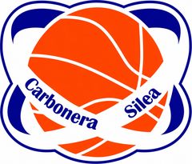

DR2 · Stat ›Divisione Regionale 2 · Gir. EST
Allenatore: Valente F. · vice Martin T. · referto del 10/11
7ªsu 15
4–3V–P
classifica ›

Olimpia SileAllenatore: Valente F. · vice Martin T. · referto del 10/11
Allenatore: Prandi C. · vice Corsi F. · referto del 29/10
Allenatore: Carniel C. · vice Baseggio S. · referto del 10/11
Allenatore: Prandi C. · vice Battaglia V. · referto del 07/11
Allenatore: Baseggio S. · referto del 08/11
Allenatore: n.d. (nessun referto)
Gare = già dirette · Designate = da dirigere · Vince casa = % vittorie della squadra di casa · Falli e Liberi/gara = da referto · T/U/D = tecnici/antisportivi/espulsioni
| Arbitro | Gare | Vince casa | Olimpia V–P | Falli/gara |
|---|---|---|---|---|
| RIZZO ALESSANDRO DR2 U17 U19 Reg. U19 Gold | 10 | 70% | 2–0 | 39.0 |
| BASTIANEL GIOVANNI DR2 U19 Gold | 6 | 50% | 1–0 | 54.0 |
| BIANCHIN LORENZO DR2 U17 U19 Reg. U19 Gold | 6 | 67% | 2–1 | 38.0 |
| PUPPA GIACOMO DR2 | 6 | 83% | – | – |
| GIACOMIN LORENZO DR2 U19 Reg. U19 Gold | 5 | 40% | 1–0 | 54.0 |
| SABBADIN STEFANO DR2 U17 U19 Reg. | 5 | 60% | – | – |
| MORAO RICCARDO DR2 U17 U19 Gold | 5 | 80% | 0–1 | 27.0 |
| SCHIAVINATO NICOLA DR2 U17 U19 Gold | 5 | 60% | 3–0 | 37.7 |
| CHAVARRO RUBIANO DANIEL DR2 U19 Reg. U19 Gold | 5 | 60% | – | – |
| LONGATO FRANCESCO DR2 U19 Gold | 5 | 80% | – | – |
| DA ROS GABRIELE U15 U19 Gold | 4 | 50% | 1–0 | 26.0 |
| MONTIN DANIEL DR2 | 4 | 75% | 1–0 | 35.0 |
| NICOSIA GIUSEPPE DR2 U19 Reg. U19 Gold | 4 | 75% | 2–1 | 32.0 |
| PIN SIMONE DR2 U19 Gold | 4 | 50% | 1–2 | 29.3 |
| BERENGO MATTEO DR2 | 4 | 50% | – | – |
| CHIEREGATO VALENTE DR2 U15 U17 U19 Gold | 4 | 75% | 1–0 | 42.0 |
| PASALIC NERMIN U17 U19 Reg. | 4 | 25% | – | – |
| LUCCHESE FEDERICO U15 U17 | 3 | 0% | 0–1 | 34.0 |
| MILANESE EROS DR2 U19 Gold | 3 | 33% | – | – |
| ZAVATTA ANITA DR2 | 3 | 100% | – | – |
| ZUANON LORENZO DR2 | 3 | 67% | – | – |
| CASETTA FRANCESCO DR2 U19 Reg. | 3 | 100% | 0–2 | 34.5 |
| CENTENARO SAMUELE U15 | 3 | 33% | – | – |
| CUKA STEFANO DR2 U15 | 3 | 67% | 1–1 | 32.0 |
| DI FRANCO ANTONIO DR2 U19 Reg. | 3 | 100% | 0–1 | 34.0 |
| DOTTO GIANMATTEO DR2 U19 Reg. U19 Gold | 3 | 33% | 1–0 | 25.0 |
| FRANCHETTO MARCO U17 U19 Gold | 3 | 67% | – | – |
| GARBO RICCARDO DR2 | 3 | 33% | 1–0 | 35.0 |
| MASCHIETTO CHIARA DR2 | 3 | 67% | – | – |
| RIZZATO FILIPPO DR2 U19 Gold | 3 | 33% | 1–0 | 47.0 |
| TRABACCHIN MORENO DR2 U19 Reg. | 3 | 67% | – | – |
| TRAMONTINI RICCARDO DR2 U19 Gold | 3 | 67% | 1–0 | 47.0 |
| ZENTILIN NICOLO' U19 Gold | 3 | 33% | – | – |
| BRESSAN GIACOMO U17 | 2 | 0% | – | – |
| GAGLIARDI FILIPPO DR2 | 2 | 50% | – | – |
| SARAN ALESSANDRO DR2 U19 Gold | 2 | 50% | – | – |
| BONATO MIRCO U17 U19 Gold | 2 | 50% | 1–0 | 37.0 |
| BRESOLIN LEONARDO DR2 U19 Gold | 2 | 100% | – | – |
| BRONZI MANUEL U15 U17 | 2 | 100% | – | – |
| CALDERARI FILIPPO U15 | 2 | 50% | – | – |
| COLLA LEONARDO U17 | 2 | 0% | – | – |
| DE RICO MATTIA DR2 | 2 | 50% | – | – |
| FERRARESE MATTIA DR2 | 2 | 100% | – | – |
| FUSATI MATTEO DR2 | 2 | 100% | – | – |
| GIORGI LORENZO DR2 | 2 | 100% | 0–1 | 35.0 |
| GRAVA ANDREA DR2 | 2 | 50% | – | – |
| LONGATO NICOLA DR2 U17 | 2 | 50% | 1–0 | 37.0 |
| MIHALICH MARCO DR2 | 2 | 100% | – | – |
| NOVELLO JACOPO DR2 | 2 | 50% | 1–0 | 35.0 |
| PANEGHEL FILIPPO DR2 | 2 | 50% | 0–1 | 35.0 |
| PARO JOHNNY U15 U17 | 2 | 50% | – | – |
| SECCHIERI DIEGO DR2 | 2 | 50% | – | – |
| SEVERONI GIULIO U15 U17 | 2 | 50% | – | – |
| TONDATO MICHELE U19 Gold | 2 | 50% | – | – |
| ARTICO MATTIA DR2 U19 Gold | 1 | 100% | – | – |
| BARNI MASSIMILIANO DR2 | 1 | 100% | – | – |
| ELIA ALESSANDRO U19 Reg. | 1 | 0% | – | – |
| PELLIZZARI ALESSIO U19 Reg. | 1 | 0% | – | – |
| PERIN NICCOLO' U15 | 1 | 0% | 0–1 | 34.0 |
| ZANATO JACOPO U17 | 1 | 0% | – | – |
| BRIZUELA ALESSANDRO DR2 | 1 | 100% | – | – |
| BUSOLIN ALESSANDRO DR2 | 1 | 100% | – | – |
| CALLEGARO ALESSIO DR2 | 1 | 100% | – | – |
| DANESIN MATTEO DR2 | 1 | 0% | 1–0 | 35.0 |
| DE CESARE ANNA DR2 | 1 | 0% | – | – |
| FAGRO SEBASTIANO U15 | 1 | 100% | – | – |
| FARDIN SAMUELE U15 | 1 | 0% | 1–0 | 26.0 |
| FASSINA MARCO DR2 | 1 | 100% | – | – |
| GAVAGNIN MARCO DR2 | 1 | 100% | – | – |
| GERON RAFFAELE U19 Reg. | 1 | 100% | – | – |
| GRAVA LISA DR2 | 1 | 100% | – | – |
| GUERINI CHRISTIAN U17 | 1 | 100% | – | – |
| LION LEONARDO U15 | 1 | 100% | – | – |
| NAZZARI MATTIA U19 Reg. | 1 | 0% | – | – |
| PEROCCO ALBERTO U19 Gold | 1 | 100% | 1–0 | 47.0 |
| PESCE MATTEO U17 | 1 | 100% | – | – |
| PIETROBON MARCO U19 Gold | 1 | 100% | – | – |
| SIMIONATO NICOLA U17 | 1 | 0% | – | – |
| SINAKOLI DAVID U15 | 1 | 100% | – | – |
| STABILE MARCO U19 Reg. | 1 | 100% | – | – |
| VOLPATO LUCA U19 Reg. | 1 | 100% | – | – |
| ZANONI GIUSEPPE U19 Reg. | 1 | 100% | – | – |
| ZUFFOGROSSO LUCA U15 | 1 | 100% | – | – |
| FAVARO MATTEO DR2 | 0 | – | – | – |
| FERRARI TOMMASO DR2 | 0 | – | – | – |
| GIOMO BRUNO CHILLANYANG U17 | 0 | – | – | – |
| MARETTO FRANCESCO U19 Reg. | 0 | – | – | – |
| QUAGGIA DANIELE DR2 | 0 | – | – | – |
Gare = gare già giocate dirette dall'arbitro nei gironi seguiti. Falli, liberi e tecnici vengono solo dai referti caricati (24): "–" se non ce n'è nessuno.
| # | Squadra | Pt | G | V | P | Diff |
|---|---|---|---|---|---|---|
| 1 | STUDIO B&M Martellago | 12 | 7 | 6 | 1 | +68 |
| 2 | EAGLES BASKET Conegliano | 10 | 5 | 5 | 0 | +73 |
| 3 | U. S. ALVISIANA | 10 | 7 | 5 | 2 | +58 |
| 4 | PALL.ERACLEA | 10 | 7 | 5 | 2 | +44 |
| 5 | PRIULA BASKET 88 Susegana | 8 | 6 | 4 | 2 | +53 |
| 6 | BC MALCONTENTA MIRA | 8 | 6 | 4 | 2 | +22 |
| 7 | PASTICCERIA TREVISO Silea | 8 | 7 | 4 | 3 | +11 |
| 8 | CRABS VENEZIA | 6 | 6 | 3 | 3 | -1 |
| 9 | VIRTUS VENEZIA | 6 | 7 | 3 | 4 | -33 |
| 10 | MARCO E TODARO 1980 Venezia | 4 | 6 | 2 | 4 | -12 |
| 11 | POL. CASIER | 4 | 6 | 2 | 4 | -37 |
| 12 | MARCON BASKET | 2 | 5 | 1 | 4 | -45 |
| 13 | INDEPENDIENTE BK CLUB Ponzano Veneto | 2 | 5 | 1 | 4 | -60 |
| 14 | VALBELLUNA BASKET Ponte nelle Alpi | 0 | 5 | 0 | 5 | -60 |
| 15 | U.S. HESPERIA Treviso | 0 | 5 | 0 | 5 | -81 |
| G | Data | Avversario | Esito |
|---|---|---|---|
| 1A | ven 02/10 | vs MARCO E TODARO 1980 Venezia | V 56–51 |
| 2A | ven 09/10 | @ CRABS VENEZIA | V 57–43 |
| 3A | ven 16/10 | @ VIRTUS VENEZIA | V 64–58 |
| 4A | ven 23/10 | vs POL. CASIER | V 65–50 |
| 5A | gio 29/10 | @ STUDIO B&M Martellago | P 55–70 |
| 6A | ven 06/11 | vs PRIULA BASKET 88 Susegana | P 77–80 |
| 7A | mar 10/11 | @ PALL.ERACLEA | P 52–63 |
| 9A | ven 20/11 | @ U. S. ALVISIANA | ore 21:00 |
| 10A | ven 27/11 | vs BC MALCONTENTA MIRA | ore 21:15 |
| 11A | ven 04/12 | @ MARCON BASKET | ore 21:15 |
| 12A | ven 11/12 | vs VALBELLUNA BASKET Ponte nelle Alpi | ore 21:15 |
| 13A | ven 18/12 | @ EAGLES BASKET Conegliano | ore 21:20 |
| 14A | mar 12/01 | vs U.S. HESPERIA Treviso | ore 21:15 |
| 15A | ven 15/01 | @ INDEPENDIENTE BK CLUB Ponzano Veneto | ore 21:15 |
| 1R | ven 22/01 | @ MARCO E TODARO 1980 Venezia | ore 20:30 |
| 2R | ven 29/01 | vs CRABS VENEZIA | ore 21:15 |
| 3R | ven 05/02 | vs VIRTUS VENEZIA | ore 21:15 |
| 4R | ven 12/02 | @ POL. CASIER | ore 21:15 |
| 5R | ven 19/02 | vs STUDIO B&M Martellago | ore 21:15 |
| 6R | ven 26/02 | @ PRIULA BASKET 88 Susegana | ore 21:15 |
| 7R | mar 02/03 | vs PALL.ERACLEA | ore 21:15 |
| 9R | ven 12/03 | vs U. S. ALVISIANA | ore 21:15 |
| 10R | ven 19/03 | @ BC MALCONTENTA MIRA | ore 21:15 |
| 11R | ven 26/03 | vs MARCON BASKET | ore 21:15 |
| 12R | ven 02/04 | @ VALBELLUNA BASKET Ponte nelle Alpi | ore 21:00 |
| 13R | ven 09/04 | vs EAGLES BASKET Conegliano | ore 21:15 |
| 14R | ven 16/04 | @ U.S. HESPERIA Treviso | ore 20:30 |
| 15R | ven 23/04 | vs INDEPENDIENTE BK CLUB Ponzano Veneto | ore 21:15 |
Statistiche giocatori di 7 gare (V/P col bordo giallo): pagina giocatori, solo staff.
| # | Squadra | Pt | G | V | P | Diff |
|---|---|---|---|---|---|---|
| 1 | POL. S.GIORGIO Quinto Tv | 8 | 4 | 4 | 0 | +117 |
| 2 | NEW B. SAN DONA | 8 | 4 | 4 | 0 | +86 |
| 3 | MARCON BASKET | 8 | 5 | 4 | 1 | +56 |
| 4 | BASKET NERVESA | 6 | 4 | 3 | 1 | -16 |
| 5 | TENDITAL Spresiano | 4 | 4 | 2 | 2 | +52 |
| 6 | TRIVENETO - Cornuda | 4 | 4 | 2 | 2 | +26 |
| 7 | ATT. MOTORIE LA TORRE Pieve del Grappa | 4 | 4 | 2 | 2 | +21 |
| 8 | OLIMPIASILE | 2 | 4 | 1 | 3 | +5 |
| 9 | TRIVIUM NpDese | 2 | 4 | 1 | 3 | -19 |
| 10 | ATT. MOTORIE M.B. PLANET Sedico | 2 | 4 | 1 | 3 | -85 |
| 11 | PALL. VITTORIO VENETO | 2 | 5 | 1 | 4 | -92 |
| 12 | PALL. MOTTA | 0 | 4 | 0 | 4 | -151 |
| G | Data | Avversario | Esito |
|---|---|---|---|
| 1A | lun 05/10 | vs PALL. VITTORIO VENETO | V 56–39 |
| 2A | lun 12/10 | @ NEW B. SAN DONA | P 50–55 |
| 3A | lun 19/10 | vs TENDITAL Spresiano | P 64–70 |
| 4A | gio 29/10 | @ BASKET NERVESA | P 62–63 |
| 5A | gio 12/11 | @ PALL. MOTTA Arbitri: Nicosia Giuseppe | ore 21:00 |
| 6A | mar 17/11 | vs ATT. MOTORIE LA TORRE Pieve del Grappa | ore 19:45 |
| 7A | mer 25/11 | @ POL. S.GIORGIO Quinto Tv | ore 19:30 |
| 8A | lun 30/11 | vs MARCON BASKET | ore 20:30 |
| 9A | gio 17/12 | @ TRIVIUM NpDese | ore 18:45 |
| 10A | lun 21/12 | vs TRIVENETO - Cornuda | ore 20:30 |
| 11A | gio 14/01 | @ ATT. MOTORIE M.B. PLANET Sedico | ore 20:15 |
| 1R | gio 21/01 | @ PALL. VITTORIO VENETO | ore 20:45 |
| 2R | lun 25/01 | vs NEW B. SAN DONA | ore 20:30 |
| 3R | lun 01/02 | @ TENDITAL Spresiano | ore 21:00 |
| 4R | lun 08/02 | vs BASKET NERVESA | ore 20:30 |
| 5R | lun 15/02 | vs PALL. MOTTA | ore 20:30 |
| 6R | mar 23/02 | @ ATT. MOTORIE LA TORRE Pieve del Grappa | ore 20:30 |
| 7R | lun 01/03 | vs POL. S.GIORGIO Quinto Tv | ore 20:30 |
| 8R | mer 10/03 | @ MARCON BASKET | ore 20:15 |
| 9R | lun 15/03 | vs TRIVIUM NpDese | ore 20:30 |
| 10R | mar 23/03 | @ TRIVENETO - Cornuda | ore 20:00 |
| 11R | lun 05/04 | vs ATT. MOTORIE M.B. PLANET Sedico | ore 20:30 |
Statistiche giocatori di 4 gare (V/P col bordo giallo): pagina giocatori, solo staff.
| Arbitro | Gare | Vince casa | Olimpia V–P |
|---|---|---|---|
| NICOSIA GIUSEPPE | 2 | 100% | 0–1 |
| SABBADIN STEFANO | 2 | 100% | – |
| BIANCHIN LORENZO | 2 | 50% | 0–1 |
| CASETTA FRANCESCO | 2 | 100% | 0–1 |
| CHAVARRO RUBIANO DANIEL | 2 | 50% | – |
| PASALIC NERMIN | 2 | 0% | – |
| RIZZO ALESSANDRO | 2 | 50% | – |
| ELIA ALESSANDRO | 1 | 0% | – |
| PELLIZZARI ALESSIO | 1 | 0% | – |
| DI FRANCO ANTONIO | 1 | 100% | – |
| DOTTO GIANMATTEO | 1 | 100% | 1–0 |
| GERON RAFFAELE | 1 | 100% | – |
| GIACOMIN LORENZO | 1 | 100% | – |
| NAZZARI MATTIA | 1 | 0% | – |
| STABILE MARCO | 1 | 100% | – |
| TRABACCHIN MORENO | 1 | 100% | – |
| VOLPATO LUCA | 1 | 100% | – |
| ZANONI GIUSEPPE | 1 | 100% | – |
| MARETTO FRANCESCO | 0 | – | – |
| # | Squadra | Pt | G | V | P | Diff |
|---|---|---|---|---|---|---|
| 1 | OLIMPIASILE | 10 | 6 | 5 | 1 | +5 |
| 2 | RUCKER ACADEMY San Vendemiano | 8 | 6 | 4 | 2 | +99 |
| 3 | VIGOR BK. CONEGLIANO | 8 | 6 | 4 | 2 | +59 |
| 4 | POL. MOGLIANO VENETO | 6 | 6 | 3 | 3 | +12 |
| 5 | PALL. VITTORIO VENETO | 4 | 5 | 2 | 3 | -17 |
| 6 | PALL. ORMELLE | 4 | 6 | 2 | 4 | -29 |
| 7 | U.S. HESPERIA Treviso | 0 | 5 | 0 | 5 | -129 |
| G | Data | Avversario | Esito |
|---|---|---|---|
| 2A | gio 08/10 | @ PALL. VITTORIO VENETO | V 79–77 |
| 3A | mar 13/10 | vs VIGOR BK. CONEGLIANO | V 94–89 |
| 4A | lun 19/10 | @ POL. MOGLIANO VENETO | P 54–80 |
| 5A | mar 27/10 | vs RUCKER ACADEMY San Vendemiano | V 93–81 |
| 6A | mar 03/11 | @ U.S. HESPERIA Treviso | V 66–64 |
| 7A | mar 10/11 | vs PALL. ORMELLE | V 75–65 |
| 2R | mar 24/11 | vs PALL. VITTORIO VENETO | ore 19:45 |
| 3R | lun 30/11 | @ VIGOR BK. CONEGLIANO | ore 19:00 |
| 4R | mar 08/12 | vs POL. MOGLIANO VENETO | ore 19:45 |
| 5R | lun 14/12 | @ RUCKER ACADEMY San Vendemiano | ore 20:30 |
| 6R | mar 22/12 | vs U.S. HESPERIA Treviso | ore 19:45 |
| 7R | lun 11/01 | @ PALL. ORMELLE | ore 20:00 |
Statistiche giocatori di 6 gare (V/P col bordo giallo): pagina giocatori, solo staff.
| Arbitro | Gare | Vince casa | Olimpia V–P |
|---|---|---|---|
| BASTIANEL GIOVANNI | 4 | 50% | 1–0 |
| LONGATO FRANCESCO | 4 | 75% | – |
| RIZZO ALESSANDRO | 4 | 100% | – |
| GIACOMIN LORENZO | 3 | 33% | 1–0 |
| ZENTILIN NICOLO' | 3 | 33% | – |
| BIANCHIN LORENZO | 2 | 50% | 2–0 |
| RIZZATO FILIPPO | 2 | 50% | 1–0 |
| TONDATO MICHELE | 2 | 50% | – |
| ARTICO MATTIA | 1 | 100% | – |
| BONATO MIRCO | 1 | 100% | 1–0 |
| BRESOLIN LEONARDO | 1 | 100% | – |
| CHAVARRO RUBIANO DANIEL | 1 | 0% | – |
| CHIEREGATO VALENTE | 1 | 0% | – |
| DOTTO GIANMATTEO | 1 | 0% | – |
| FRANCHETTO MARCO | 1 | 0% | – |
| MILANESE EROS | 1 | 100% | – |
| MORAO RICCARDO | 1 | 100% | 0–1 |
| NICOSIA GIUSEPPE | 1 | 0% | 1–0 |
| PEROCCO ALBERTO | 1 | 100% | 1–0 |
| PIETROBON MARCO | 1 | 100% | – |
| PIN SIMONE | 1 | 100% | 0–1 |
| SARAN ALESSANDRO | 1 | 0% | – |
| SCHIAVINATO NICOLA | 1 | 100% | 1–0 |
| TRAMONTINI RICCARDO | 1 | 100% | 1–0 |
| DA ROS GABRIELE | 0 | – | – |
| # | Squadra | Pt | G | V | P | Diff |
|---|---|---|---|---|---|---|
| 1 | OLIMPIASILE | 8 | 4 | 4 | 0 | +130 |
| 2 | POL. S.GIORGIO Quinto Tv | 6 | 3 | 3 | 0 | +175 |
| 3 | U.S. HESPERIA Treviso | 6 | 4 | 3 | 1 | +111 |
| 4 | CU.RI.S.S. BK. ISTRANA | 6 | 3 | 3 | 0 | +106 |
| 5 | PALL. FONZASO | 4 | 3 | 2 | 1 | -15 |
| 6 | POL. CASIER | 4 | 4 | 2 | 2 | -27 |
| 7 | POL. MOGLIANO V.to BLU | 2 | 3 | 1 | 2 | +7 |
| 8 | ATT. MOTORIE LA TORRE Pieve del Grappa | 2 | 4 | 1 | 3 | -47 |
| 9 | BASKET 2000 PAESE | 2 | 4 | 1 | 3 | -66 |
| 10 | POL. MOGLIANO V.to BIANCO | 0 | 4 | 0 | 4 | -155 |
| 11 | FOCUS LAB SPORT Cornuda | 0 | 4 | 0 | 4 | -219 |
| G | Data | Avversario | Esito |
|---|---|---|---|
| 1A | sab 10/10 | @ U.S. HESPERIA Treviso | V 79–37 |
| 2A | sab 17/10 | vs POL. CASIER | V 90–66 |
| 3A | sab 24/10 | @ BASKET 2000 PAESE | V 86–64 |
| 4A | sab 07/11 | vs PALL. FONZASO | V 78–36 |
| 5A | dom 15/11 | @ FOCUS LAB SPORT Cornuda | ore 16:00 |
| 6A | sab 21/11 | vs POL. MOGLIANO V.to BLU | ore 18:30 |
| 7A | sab 28/11 | @ POL. MOGLIANO V.to BIANCO | ore 18:30 |
| 8A | sab 12/12 | vs POL. S.GIORGIO Quinto Tv | ore 18:30 |
| 10A | sab 09/01 | @ CU.RI.S.S. BK. ISTRANA | ore 16:00 |
| 11A | sab 16/01 | vs ATT. MOTORIE LA TORRE Pieve del Grappa | ore 18:30 |
| 1R | sab 23/01 | vs U.S. HESPERIA Treviso | ore 18:30 |
| 2R | sab 30/01 | @ POL. CASIER | ore 18:00 |
| 3R | sab 13/02 | vs BASKET 2000 PAESE | ore 18:30 |
| 4R | dom 21/02 | @ PALL. FONZASO | ore 15:00 |
| 5R | sab 27/02 | vs FOCUS LAB SPORT Cornuda | ore 18:30 |
| 6R | sab 06/03 | @ POL. MOGLIANO V.to BLU | ore 18:30 |
| 7R | sab 13/03 | vs POL. MOGLIANO V.to BIANCO | ore 18:30 |
| 8R | sab 20/03 | @ POL. S.GIORGIO Quinto Tv | ore 18:00 |
| 10R | sab 10/04 | vs CU.RI.S.S. BK. ISTRANA | ore 18:30 |
| 11R | sab 17/04 | @ ATT. MOTORIE LA TORRE Pieve del Grappa | ore 18:00 |
Statistiche giocatori di 4 gare (V/P col bordo giallo): pagina giocatori, solo staff.
| Arbitro | Gare | Vince casa | Olimpia V–P |
|---|---|---|---|
| SCHIAVINATO NICOLA | 3 | 33% | 1–0 |
| BRESSAN GIACOMO | 2 | 0% | – |
| LUCCHESE FEDERICO | 2 | 0% | – |
| COLLA LEONARDO | 2 | 0% | – |
| FRANCHETTO MARCO | 2 | 100% | – |
| PASALIC NERMIN | 2 | 50% | – |
| RIZZO ALESSANDRO | 2 | 50% | 2–0 |
| SABBADIN STEFANO | 2 | 0% | – |
| ZANATO JACOPO | 1 | 0% | – |
| BIANCHIN LORENZO | 1 | 100% | – |
| BONATO MIRCO | 1 | 0% | – |
| BRONZI MANUEL | 1 | 100% | – |
| CHIEREGATO VALENTE | 1 | 100% | – |
| GUERINI CHRISTIAN | 1 | 100% | – |
| LONGATO NICOLA | 1 | 100% | 1–0 |
| MORAO RICCARDO | 1 | 100% | – |
| PARO JOHNNY | 1 | 100% | – |
| PESCE MATTEO | 1 | 100% | – |
| SEVERONI GIULIO | 1 | 100% | – |
| SIMIONATO NICOLA | 1 | 0% | – |
| GIOMO BRUNO CHILLANYANG | 0 | – | – |
| # | Squadra | Pt | G | V | P | Diff |
|---|---|---|---|---|---|---|
| 1 | ATT. MOTORIE M.B. PLANET Sedico | 6 | 3 | 3 | 0 | +154 |
| 2 | PRIULA BASKET 88 Susegana | 6 | 3 | 3 | 0 | +73 |
| 3 | U.S. HESPERIA Treviso | 4 | 3 | 2 | 1 | +76 |
| 4 | OLIMPIASILE | 4 | 3 | 2 | 1 | +5 |
| 5 | PALL. ORMELLE | 2 | 3 | 1 | 2 | -79 |
| 6 | BASKET NERVESA | 0 | 3 | 0 | 3 | -81 |
| 7 | PALL. VITTORIO VENETO | 0 | 4 | 0 | 4 | -148 |
| G | Data | Avversario | Esito |
|---|---|---|---|
| 1A | sab 10/10 | vs ATT. MOTORIE M.B. PLANET Sedico | P 49–74 |
| 2A | gio 22/10 | @ BASKET NERVESA | V 65–42 |
| 4A | dom 08/11 | vs PALL. VITTORIO VENETO | V 74–67 |
| 5A | dom 15/11 | @ PALL. ORMELLE | ore 11:00 |
| 6A | dom 22/11 | vs U.S. HESPERIA Treviso | ore 10:30 |
| 7A | sab 28/11 | @ PRIULA BASKET 88 Susegana | ore 20:00 |
| 1R | sab 12/12 | @ ATT. MOTORIE M.B. PLANET Sedico | ore 19:00 |
| 2R | dom 20/12 | vs BASKET NERVESA | ore 10:30 |
| 4R | dom 17/01 | @ PALL. VITTORIO VENETO | ore 18:00 |
| 5R | dom 24/01 | vs PALL. ORMELLE | ore 10:30 |
| 6R | dom 31/01 | @ U.S. HESPERIA Treviso | ore 10:45 |
| 7R | sab 06/02 | vs PRIULA BASKET 88 Susegana | ore 17:00 |
Statistiche giocatori di 3 gare (V/P col bordo giallo): pagina giocatori, solo staff.
| Arbitro | Gare | Vince casa | Olimpia V–P |
|---|---|---|---|
| DA ROS GABRIELE | 4 | 50% | 1–0 |
| CENTENARO SAMUELE | 3 | 33% | – |
| CALDERARI FILIPPO | 2 | 50% | – |
| PERIN NICCOLO' | 1 | 0% | 0–1 |
| BRONZI MANUEL | 1 | 100% | – |
| CHIEREGATO VALENTE | 1 | 100% | 1–0 |
| CUKA STEFANO | 1 | 100% | – |
| FAGRO SEBASTIANO | 1 | 100% | – |
| FARDIN SAMUELE | 1 | 0% | 1–0 |
| LION LEONARDO | 1 | 100% | – |
| LUCCHESE FEDERICO | 1 | 0% | 0–1 |
| PARO JOHNNY | 1 | 0% | – |
| SEVERONI GIULIO | 1 | 0% | – |
| SINAKOLI DAVID | 1 | 100% | – |
| ZUFFOGROSSO LUCA | 1 | 100% | – |
| # | Squadra | Pt | G | V | P | Diff |
|---|---|---|---|---|---|---|
| 1 | OLIMPIASILE | 4 | 2 | 2 | 0 | +67 |
| 2 | LA POL. CASALE | 2 | 1 | 1 | 0 | +110 |
| 3 | PALL. ORMELLE | 2 | 2 | 1 | 1 | +56 |
| 4 | TVB ACADEMY Villorba | 2 | 1 | 1 | 0 | +53 |
| 5 | TEXA - Roncade | 0 | 1 | 0 | 1 | -46 |
| 6 | PALL. MOTTA | 0 | 1 | 0 | 1 | -77 |
| 7 | SPORTING CLUB ODERZO | 0 | 2 | 0 | 2 | -163 |
| G | Data | Avversario | Esito |
|---|---|---|---|
| 1A | sab 17/10 | vs PALL. ORMELLE | V 59–38 |
| 2A | sab 24/10 | @ TEXA - Roncade | V 73–27 |
| 4A | dom 15/11 | @ TVB ACADEMY Villorba | ore 11:30 |
| 5A | sab 21/11 | @ PALL. MOTTA | ore 16:00 |
| 6A | sab 28/11 | vs SPORTING CLUB ODERZO | ore 16:00 |
| 7A | sab 12/12 | @ LA POL. CASALE | ore 16:00 |
| 1R | dom 20/12 | @ PALL. ORMELLE | ore 10:30 |
| 2R | sab 09/01 | vs TEXA - Roncade | ore 16:00 |
| 4R | sab 23/01 | vs TVB ACADEMY Villorba | ore 16:00 |
| 5R | sab 30/01 | vs PALL. MOTTA | ore 16:00 |
| 6R | sab 13/02 | @ SPORTING CLUB ODERZO | ore 18:00 |
| 7R | sab 20/02 | vs LA POL. CASALE | ore 16:00 |
Allenatore: De Faveri L. · referto del 29/10
Campo: Palestra Sc. 'Goldoni' MODERNA · Via Trento, 26, 30030 Martellago (VE)
Arbitri nelle gare giocate: Berengo Matteo (2), Giorgi Lorenzo (2), Puppa Giacomo (2), De Cesare Anna (1), Fusati Matteo (1), Maschietto Chiara (1), Montin Daniel (1), Novello Jacopo (1), Paneghel Filippo (1), Zavatta Anita (1), Zuanon Lorenzo (1)
| Data | Avversario | Esito |
|---|---|---|
| gio 01/10 | vs U.S. HESPERIA Treviso Arbitri: Maschietto Chiara, Puppa Giacomo | V 77–65 |
| gio 08/10 | vs INDEPENDIENTE BK CLUB Ponzano Veneto Arbitri: Fusati Matteo, Montin Daniel | V 79–69 |
| gio 15/10 | vs MARCO E TODARO 1980 Venezia Arbitri: Giorgi Lorenzo, Zavatta Anita | V 59–57 |
| ven 23/10 | @ CRABS VENEZIA Arbitri: Puppa Giacomo, Berengo Matteo | P 62–64 |
| gio 29/10 | vs PASTICCERIA TREVISO Silea Arbitri: Giorgi Lorenzo, Paneghel Filippo | V 70–55 |
| gio 05/11 | vs POL. CASIER Arbitri: Zuanon Lorenzo, Novello Jacopo | V 82–66 |
| lun 09/11 | @ VIRTUS VENEZIA Arbitri: Berengo Matteo, De Cesare Anna | V 70–55 |
| ven 13/11 | @ PRIULA BASKET 88 Susegana Arbitri: Favaro Matteo, Giacomin Lorenzo | ore 21:15 |
| ven 20/11 | @ PALL.ERACLEA | ore 20:45 |
| ven 04/12 | @ U. S. ALVISIANA | ore 21:00 |
| gio 10/12 | vs BC MALCONTENTA MIRA | ore 21:00 |
| ven 18/12 | @ MARCON BASKET | ore 21:15 |
| gio 07/01 | vs VALBELLUNA BASKET Ponte nelle Alpi | ore 21:00 |
| ven 15/01 | @ EAGLES BASKET Conegliano | ore 21:20 |
| ven 22/01 | @ U.S. HESPERIA Treviso | ore 20:30 |
| ven 29/01 | @ INDEPENDIENTE BK CLUB Ponzano Veneto | ore 21:15 |
| ven 05/02 | @ MARCO E TODARO 1980 Venezia | ore 20:30 |
| gio 11/02 | vs CRABS VENEZIA | ore 21:00 |
| ven 19/02 | @ PASTICCERIA TREVISO Silea | ore 21:15 |
| ven 26/02 | @ POL. CASIER | ore 21:15 |
| lun 01/03 | vs VIRTUS VENEZIA | ore 21:00 |
| gio 04/03 | vs PRIULA BASKET 88 Susegana | ore 20:30 |
| gio 11/03 | vs PALL.ERACLEA | ore 21:00 |
| gio 25/03 | vs U. S. ALVISIANA | ore 21:00 |
| ven 02/04 | @ BC MALCONTENTA MIRA | ore 21:15 |
| gio 08/04 | vs MARCON BASKET | ore 21:00 |
| ven 16/04 | @ VALBELLUNA BASKET Ponte nelle Alpi | ore 21:00 |
| gio 22/04 | vs EAGLES BASKET Conegliano | ore 21:00 |
Dati da fip.it (calendario, risultati, designazioni arbitrali). Tocca un avversario per la sua scheda, un arbitro per le sue statistiche. Statistiche individuali (V/P col bordo giallo) solo per le gare di Olimpia di cui c'è il referto: per le altre gare FIP non le pubblica.
Allenatore: n.d. (nessun referto)
Campo: Palasport 'Giovanni Paolo II' · Via Emilio Antoniazzi, 73, 31015 Conegliano (TV)
Arbitri nelle gare giocate: Rizzo Alessandro (2), Barni Massimiliano (1), Bastianel Giovanni (1), Chavarro Rubiano Daniel (1), Grava Lisa (1), Longato Francesco (1), Maschietto Chiara (1), Milanese Eros (1), Trabacchin Moreno (1)
| Data | Avversario | Esito |
|---|---|---|
| ven 02/10 | @ PRIULA BASKET 88 Susegana Arbitri: Rizzo Alessandro, Milanese Eros | V 70–46 |
| ven 09/10 | vs PALL.ERACLEA Arbitri: Longato Francesco, Chavarro Rubiano Daniel | V 79–59 |
| ven 23/10 | vs U. S. ALVISIANA Arbitri: Grava Lisa, Bastianel Giovanni | V 73–60 |
| ven 30/10 | @ BC MALCONTENTA MIRA Arbitri: Maschietto Chiara, Trabacchin Moreno | V 88–78 |
| ven 06/11 | vs MARCON BASKET Arbitri: Rizzo Alessandro, Barni Massimiliano | V 69–63 |
| mar 10/11 | @ VALBELLUNA BASKET Ponte nelle Alpi Arbitri: Milanese Eros, Artico Mattia | ore 21:00 |
| ven 13/11 | vs VIRTUS VENEZIA Arbitri: Saran Alessandro, Barni Massimiliano | ore 21:20 |
| ven 20/11 | vs U.S. HESPERIA Treviso | ore 21:20 |
| ven 27/11 | @ INDEPENDIENTE BK CLUB Ponzano Veneto | ore 21:15 |
| ven 04/12 | vs MARCO E TODARO 1980 Venezia | ore 21:20 |
| ven 11/12 | @ CRABS VENEZIA | ore 21:00 |
| ven 18/12 | vs PASTICCERIA TREVISO Silea | ore 21:20 |
| ven 08/01 | @ POL. CASIER | ore 21:15 |
| ven 15/01 | vs STUDIO B&M Martellago | ore 21:20 |
| ven 22/01 | vs PRIULA BASKET 88 Susegana | ore 21:20 |
| ven 29/01 | @ PALL.ERACLEA | ore 20:45 |
| ven 12/02 | @ U. S. ALVISIANA | ore 21:00 |
| ven 19/02 | vs BC MALCONTENTA MIRA | ore 21:20 |
| ven 26/02 | @ MARCON BASKET | ore 21:15 |
| mar 02/03 | vs VALBELLUNA BASKET Ponte nelle Alpi | ore 21:20 |
| ven 05/03 | @ VIRTUS VENEZIA | ore 21:00 |
| ven 12/03 | @ U.S. HESPERIA Treviso | ore 20:30 |
| ven 19/03 | vs INDEPENDIENTE BK CLUB Ponzano Veneto | ore 21:20 |
| ven 26/03 | @ MARCO E TODARO 1980 Venezia | ore 20:30 |
| ven 02/04 | vs CRABS VENEZIA | ore 21:15 |
| ven 09/04 | @ PASTICCERIA TREVISO Silea | ore 21:15 |
| ven 16/04 | vs POL. CASIER | ore 21:20 |
| gio 22/04 | @ STUDIO B&M Martellago | ore 21:00 |
Dati da fip.it (calendario, risultati, designazioni arbitrali). Tocca un avversario per la sua scheda, un arbitro per le sue statistiche. Statistiche individuali (V/P col bordo giallo) solo per le gare di Olimpia di cui c'è il referto: per le altre gare FIP non le pubblica.
Allenatore: n.d. (nessun referto)
Arbitri nelle gare giocate: Berengo Matteo (2), Mihalich Marco (2), Bastianel Giovanni (1), Brizuela Alessandro (1), Fassina Marco (1), Ferrarese Mattia (1), Fusati Matteo (1), Grava Lisa (1), Morao Riccardo (1), Puppa Giacomo (1), Sabbadin Stefano (1), Zuanon Lorenzo (1)
| Data | Avversario | Esito |
|---|---|---|
| ven 02/10 | vs BC MALCONTENTA MIRA Arbitri: Mihalich Marco, Berengo Matteo | V 77–64 |
| ven 09/10 | @ MARCON BASKET Arbitri: Zuanon Lorenzo, Berengo Matteo | V 78–76 |
| ven 16/10 | vs VALBELLUNA BASKET Ponte nelle Alpi Arbitri: Ferrarese Mattia, Fassina Marco | V 73–51 |
| ven 23/10 | @ EAGLES BASKET Conegliano Arbitri: Grava Lisa, Bastianel Giovanni | P 60–73 |
| ven 30/10 | vs U.S. HESPERIA Treviso Arbitri: Fusati Matteo, Mihalich Marco | V 79–53 |
| ven 06/11 | @ INDEPENDIENTE BK CLUB Ponzano Veneto Arbitri: Morao Riccardo, Sabbadin Stefano | P 57–59 |
| lun 09/11 | vs MARCO E TODARO 1980 Venezia Arbitri: Puppa Giacomo, Brizuela Alessandro | V 57–47 |
| ven 13/11 | @ CRABS VENEZIA Arbitri: Zuanon Lorenzo, Gagliardi Filippo | ore 21:00 |
| ven 20/11 | vs PASTICCERIA TREVISO Silea | ore 21:00 |
| mer 25/11 | @ POL. CASIER | ore 21:15 |
| ven 04/12 | vs STUDIO B&M Martellago | ore 21:00 |
| ven 11/12 | @ PRIULA BASKET 88 Susegana | ore 21:15 |
| ven 18/12 | vs PALL.ERACLEA | ore 21:00 |
| ven 15/01 | vs VIRTUS VENEZIA | ore 21:00 |
| ven 22/01 | @ BC MALCONTENTA MIRA | ore 21:15 |
| ven 29/01 | vs MARCON BASKET | ore 21:00 |
| ven 05/02 | @ VALBELLUNA BASKET Ponte nelle Alpi | ore 21:00 |
| ven 12/02 | vs EAGLES BASKET Conegliano | ore 21:00 |
| ven 19/02 | @ U.S. HESPERIA Treviso | ore 20:30 |
| ven 26/02 | vs INDEPENDIENTE BK CLUB Ponzano Veneto | ore 21:00 |
| mer 03/03 | @ MARCO E TODARO 1980 Venezia | ore 20:30 |
| ven 05/03 | vs CRABS VENEZIA | ore 21:00 |
| ven 12/03 | @ PASTICCERIA TREVISO Silea | ore 21:15 |
| ven 19/03 | vs POL. CASIER | ore 21:00 |
| gio 25/03 | @ STUDIO B&M Martellago | ore 21:00 |
| ven 02/04 | vs PRIULA BASKET 88 Susegana | ore 21:00 |
| ven 09/04 | @ PALL.ERACLEA | ore 20:45 |
| ven 23/04 | @ VIRTUS VENEZIA | ore 21:00 |
Dati da fip.it (calendario, risultati, designazioni arbitrali). Tocca un avversario per la sua scheda, un arbitro per le sue statistiche. Statistiche individuali (V/P col bordo giallo) solo per le gare di Olimpia di cui c'è il referto: per le altre gare FIP non le pubblica.
Allenatore: Bianco A. · vice Lazzaro L. · referto del 10/11
Campo: Palazzetto dello Sport · Via Largon N° 2, 30020 Eraclea (VE)
Arbitri nelle gare giocate: Casetta Francesco (1), Chavarro Rubiano Daniel (1), Di Franco Antonio (1), Ferrarese Mattia (1), Garbo Riccardo (1), Gavagnin Marco (1), Longato Francesco (1), Montin Daniel (1), Morao Riccardo (1), Pin Simone (1), Puppa Giacomo (1), Secchieri Diego (1), Zavatta Anita (1), Zuanon Lorenzo (1)
| Data | Avversario | Esito |
|---|---|---|
| ven 02/10 | vs VALBELLUNA BASKET Ponte nelle Alpi Arbitri: Zuanon Lorenzo, Montin Daniel | V 89–61 |
| ven 09/10 | @ EAGLES BASKET Conegliano Arbitri: Longato Francesco, Chavarro Rubiano Daniel | P 59–79 |
| ven 16/10 | vs U.S. HESPERIA Treviso Arbitri: Secchieri Diego, Puppa Giacomo | V 74–59 |
| ven 23/10 | @ INDEPENDIENTE BK CLUB Ponzano Veneto Arbitri: Morao Riccardo, Pin Simone | V 63–51 |
| ven 30/10 | vs MARCO E TODARO 1980 Venezia Arbitri: Gavagnin Marco, Garbo Riccardo | V 80–75 |
| ven 06/11 | @ CRABS VENEZIA Arbitri: Ferrarese Mattia, Zavatta Anita | P 34–41 |
| mar 10/11 | vs PASTICCERIA TREVISO Silea Arbitri: Casetta Francesco, Di Franco Antonio | V 63–52 |
| ven 13/11 | @ POL. CASIER Arbitri: Morao Riccardo | ore 21:15 |
| ven 20/11 | vs STUDIO B&M Martellago | ore 20:45 |
| ven 27/11 | @ PRIULA BASKET 88 Susegana | ore 21:15 |
| ven 04/12 | @ VIRTUS VENEZIA | ore 21:00 |
| ven 18/12 | @ U. S. ALVISIANA | ore 21:00 |
| ven 08/01 | vs BC MALCONTENTA MIRA | ore 20:45 |
| ven 15/01 | vs MARCON BASKET | ore 20:45 |
| ven 22/01 | @ VALBELLUNA BASKET Ponte nelle Alpi | ore 21:00 |
| ven 29/01 | vs EAGLES BASKET Conegliano | ore 20:45 |
| ven 05/02 | @ U.S. HESPERIA Treviso | ore 20:30 |
| ven 12/02 | vs INDEPENDIENTE BK CLUB Ponzano Veneto | ore 20:45 |
| ven 19/02 | @ MARCO E TODARO 1980 Venezia | ore 20:30 |
| ven 26/02 | vs CRABS VENEZIA | ore 20:45 |
| mar 02/03 | @ PASTICCERIA TREVISO Silea | ore 21:15 |
| ven 05/03 | vs POL. CASIER | ore 20:45 |
| gio 11/03 | @ STUDIO B&M Martellago | ore 21:00 |
| ven 19/03 | vs PRIULA BASKET 88 Susegana | ore 20:45 |
| ven 26/03 | vs VIRTUS VENEZIA | ore 20:45 |
| ven 09/04 | vs U. S. ALVISIANA | ore 20:45 |
| ven 16/04 | @ BC MALCONTENTA MIRA | ore 21:15 |
| ven 23/04 | @ MARCON BASKET | ore 21:15 |
Dati da fip.it (calendario, risultati, designazioni arbitrali). Tocca un avversario per la sua scheda, un arbitro per le sue statistiche. Statistiche individuali (V/P col bordo giallo) solo per le gare di Olimpia di cui c'è il referto: per le altre gare FIP non le pubblica.
Allenatore: Schiavinato M. · vice Tushe D. · referto del 06/11
Campo: Palazzetto 'Bepi Ros' (nome forse troncato) · Via Nenni 7, loc. Ponte della P... (troncato sul sito), 31010 Susegana (TV)
Arbitri nelle gare giocate: Chavarro Rubiano Daniel (1), Cuka Stefano (1), De Rico Mattia (1), Dotto Gianmatteo (1), Grava Andrea (1), Longato Nicola (1), Milanese Eros (1), Montin Daniel (1), Morao Riccardo (1), Pin Simone (1), Rizzo Alessandro (1), Saran Alessandro (1)
| Data | Avversario | Esito |
|---|---|---|
| ven 02/10 | vs EAGLES BASKET Conegliano Arbitri: Rizzo Alessandro, Milanese Eros | P 46–70 |
| ven 09/10 | @ U.S. HESPERIA Treviso Arbitri: Dotto Gianmatteo, Longato Nicola | V 85–63 |
| ven 16/10 | vs INDEPENDIENTE BK CLUB Ponzano Veneto Arbitri: Grava Andrea, Chavarro Rubiano Daniel | V 86–48 |
| ven 23/10 | @ MARCO E TODARO 1980 Venezia Arbitri: De Rico Mattia, Montin Daniel | P 84–86 |
| ven 30/10 | vs CRABS VENEZIA Arbitri: Morao Riccardo, Saran Alessandro | V 78–62 |
| ven 06/11 | @ PASTICCERIA TREVISO Silea Arbitri: Cuka Stefano, Pin Simone | V 80–77 |
| mer 11/11 | vs POL. CASIER Arbitri: Giacomin Lorenzo, Bastianel Giovanni | ore 21:15 |
| ven 13/11 | vs STUDIO B&M Martellago Arbitri: Favaro Matteo, Giacomin Lorenzo | ore 21:15 |
| lun 23/11 | @ VIRTUS VENEZIA | ore 21:00 |
| ven 27/11 | vs PALL.ERACLEA | ore 21:15 |
| ven 11/12 | vs U. S. ALVISIANA | ore 21:15 |
| ven 18/12 | @ BC MALCONTENTA MIRA | ore 21:15 |
| ven 08/01 | vs MARCON BASKET | ore 21:15 |
| ven 15/01 | @ VALBELLUNA BASKET Ponte nelle Alpi | ore 21:00 |
| ven 22/01 | @ EAGLES BASKET Conegliano | ore 21:20 |
| ven 29/01 | vs U.S. HESPERIA Treviso | ore 21:15 |
| ven 05/02 | @ INDEPENDIENTE BK CLUB Ponzano Veneto | ore 21:15 |
| ven 12/02 | vs MARCO E TODARO 1980 Venezia | ore 21:15 |
| ven 19/02 | @ CRABS VENEZIA | ore 21:00 |
| ven 26/02 | vs PASTICCERIA TREVISO Silea | ore 21:15 |
| mar 02/03 | @ POL. CASIER | ore 21:15 |
| gio 04/03 | @ STUDIO B&M Martellago | ore 20:30 |
| ven 12/03 | vs VIRTUS VENEZIA | ore 21:15 |
| ven 19/03 | @ PALL.ERACLEA | ore 20:45 |
| ven 02/04 | @ U. S. ALVISIANA | ore 21:00 |
| ven 09/04 | vs BC MALCONTENTA MIRA | ore 21:15 |
| ven 16/04 | @ MARCON BASKET | ore 21:15 |
| ven 23/04 | vs VALBELLUNA BASKET Ponte nelle Alpi | ore 21:15 |
Dati da fip.it (calendario, risultati, designazioni arbitrali). Tocca un avversario per la sua scheda, un arbitro per le sue statistiche. Statistiche individuali (V/P col bordo giallo) solo per le gare di Olimpia di cui c'è il referto: per le altre gare FIP non le pubblica.
Allenatore: n.d. (nessun referto)
Campo: Palestra 'Gino Strada' · Loc. Malcontenta, Via A. Boit Mira (VE)
Arbitri nelle gare giocate: Berengo Matteo (1), De Rico Mattia (1), Gagliardi Filippo (1), Garbo Riccardo (1), Giacomin Lorenzo (1), Grava Andrea (1), Maschietto Chiara (1), Mihalich Marco (1), Puppa Giacomo (1), Rizzato Filippo (1), Trabacchin Moreno (1), Tramontini Riccardo (1)
| Data | Avversario | Esito |
|---|---|---|
| ven 02/10 | @ U. S. ALVISIANA Arbitri: Mihalich Marco, Berengo Matteo | P 64–77 |
| ven 09/10 | @ VIRTUS VENEZIA Arbitri: Gagliardi Filippo, Puppa Giacomo | V 62–52 |
| mer 14/10 | @ MARCON BASKET Arbitri: De Rico Mattia, Garbo Riccardo | V 88–60 |
| ven 23/10 | @ VALBELLUNA BASKET Ponte nelle Alpi Arbitri: Giacomin Lorenzo, Grava Andrea | V 49–48 |
| ven 30/10 | vs EAGLES BASKET Conegliano Arbitri: Maschietto Chiara, Trabacchin Moreno | P 78–88 |
| ven 06/11 | @ U.S. HESPERIA Treviso Arbitri: Tramontini Riccardo, Rizzato Filippo | V 71–65 |
| mar 10/11 | vs INDEPENDIENTE BK CLUB Ponzano Veneto Arbitri: Quaggia Daniele, Montin Daniel | ore 21:15 |
| ven 13/11 | @ MARCO E TODARO 1980 Venezia Arbitri: Zavatta Anita, Ferrari Tommaso | ore 20:30 |
| ven 20/11 | vs CRABS VENEZIA | ore 21:15 |
| ven 27/11 | @ PASTICCERIA TREVISO Silea | ore 21:15 |
| ven 04/12 | vs POL. CASIER | ore 21:15 |
| gio 10/12 | @ STUDIO B&M Martellago | ore 21:00 |
| ven 18/12 | vs PRIULA BASKET 88 Susegana | ore 21:15 |
| ven 08/01 | @ PALL.ERACLEA | ore 20:45 |
| ven 22/01 | vs U. S. ALVISIANA | ore 21:15 |
| ven 29/01 | vs VIRTUS VENEZIA | ore 21:15 |
| ven 05/02 | vs MARCON BASKET | ore 21:15 |
| ven 12/02 | vs VALBELLUNA BASKET Ponte nelle Alpi | ore 21:15 |
| ven 19/02 | @ EAGLES BASKET Conegliano | ore 21:20 |
| ven 26/02 | vs U.S. HESPERIA Treviso | ore 21:15 |
| mar 02/03 | @ INDEPENDIENTE BK CLUB Ponzano Veneto | ore 21:15 |
| ven 05/03 | vs MARCO E TODARO 1980 Venezia | ore 21:15 |
| ven 12/03 | @ CRABS VENEZIA | ore 21:00 |
| ven 19/03 | vs PASTICCERIA TREVISO Silea | ore 21:15 |
| ven 26/03 | @ POL. CASIER | ore 21:15 |
| ven 02/04 | vs STUDIO B&M Martellago | ore 21:15 |
| ven 09/04 | @ PRIULA BASKET 88 Susegana | ore 21:15 |
| ven 16/04 | vs PALL.ERACLEA | ore 21:15 |
Dati da fip.it (calendario, risultati, designazioni arbitrali). Tocca un avversario per la sua scheda, un arbitro per le sue statistiche. Statistiche individuali (V/P col bordo giallo) solo per le gare di Olimpia di cui c'è il referto: per le altre gare FIP non le pubblica.
Allenatore: Valente F. · vice Martin T. · referto del 10/11
Campo: Palasport Carbonera · Via IV Novembre, 30/A, 31030 Carbonera (TV)
Arbitri nelle gare giocate: Cuka Stefano (2), Pin Simone (2), Casetta Francesco (1), Danesin Matteo (1), Di Franco Antonio (1), Garbo Riccardo (1), Giorgi Lorenzo (1), Montin Daniel (1), Nicosia Giuseppe (1), Novello Jacopo (1), Paneghel Filippo (1), Schiavinato Nicola (1)
| Data | Avversario | Esito |
|---|---|---|
| ven 02/10 | vs MARCO E TODARO 1980 Venezia Arbitri: Nicosia Giuseppe, Pin Simone | V 56–51 |
| ven 09/10 | @ CRABS VENEZIA Arbitri: Danesin Matteo, Garbo Riccardo | V 57–43 |
| ven 16/10 | @ VIRTUS VENEZIA Arbitri: Novello Jacopo, Montin Daniel | V 64–58 |
| ven 23/10 | vs POL. CASIER Arbitri: Cuka Stefano, Schiavinato Nicola | V 65–50 |
| gio 29/10 | @ STUDIO B&M Martellago Arbitri: Giorgi Lorenzo, Paneghel Filippo | P 55–70 |
| ven 06/11 | vs PRIULA BASKET 88 Susegana Arbitri: Cuka Stefano, Pin Simone | P 77–80 |
| mar 10/11 | @ PALL.ERACLEA Arbitri: Casetta Francesco, Di Franco Antonio | P 52–63 |
| ven 20/11 | @ U. S. ALVISIANA | ore 21:00 |
| ven 27/11 | vs BC MALCONTENTA MIRA | ore 21:15 |
| ven 04/12 | @ MARCON BASKET | ore 21:15 |
| ven 11/12 | vs VALBELLUNA BASKET Ponte nelle Alpi | ore 21:15 |
| ven 18/12 | @ EAGLES BASKET Conegliano | ore 21:20 |
| mar 12/01 | vs U.S. HESPERIA Treviso | ore 21:15 |
| ven 15/01 | @ INDEPENDIENTE BK CLUB Ponzano Veneto | ore 21:15 |
| ven 22/01 | @ MARCO E TODARO 1980 Venezia | ore 20:30 |
| ven 29/01 | vs CRABS VENEZIA | ore 21:15 |
| ven 05/02 | vs VIRTUS VENEZIA | ore 21:15 |
| ven 12/02 | @ POL. CASIER | ore 21:15 |
| ven 19/02 | vs STUDIO B&M Martellago | ore 21:15 |
| ven 26/02 | @ PRIULA BASKET 88 Susegana | ore 21:15 |
| mar 02/03 | vs PALL.ERACLEA | ore 21:15 |
| ven 12/03 | vs U. S. ALVISIANA | ore 21:15 |
| ven 19/03 | @ BC MALCONTENTA MIRA | ore 21:15 |
| ven 26/03 | vs MARCON BASKET | ore 21:15 |
| ven 02/04 | @ VALBELLUNA BASKET Ponte nelle Alpi | ore 21:00 |
| ven 09/04 | vs EAGLES BASKET Conegliano | ore 21:15 |
| ven 16/04 | @ U.S. HESPERIA Treviso | ore 20:30 |
| ven 23/04 | vs INDEPENDIENTE BK CLUB Ponzano Veneto | ore 21:15 |
Dati da fip.it (calendario, risultati, designazioni arbitrali). Tocca un avversario per la sua scheda, un arbitro per le sue statistiche. Statistiche individuali (V/P col bordo giallo) solo per le gare di Olimpia di cui c'è il referto: per le altre gare FIP non le pubblica.
Allenatore: Ussardi N. · referto del 09/10
Arbitri nelle gare giocate: Berengo Matteo (1), Bresolin Leonardo (1), Danesin Matteo (1), Ferrarese Mattia (1), Garbo Riccardo (1), Morao Riccardo (1), Paneghel Filippo (1), Puppa Giacomo (1), Saran Alessandro (1), Secchieri Diego (1), Tramontini Riccardo (1), Zavatta Anita (1)
| Data | Avversario | Esito |
|---|---|---|
| ven 02/10 | @ VIRTUS VENEZIA Arbitri: Secchieri Diego, Paneghel Filippo | V 76–51 |
| ven 09/10 | vs PASTICCERIA TREVISO Silea Arbitri: Danesin Matteo, Garbo Riccardo | P 43–57 |
| ven 16/10 | @ POL. CASIER Arbitri: Bresolin Leonardo, Tramontini Riccardo | P 68–73 |
| ven 23/10 | vs STUDIO B&M Martellago Arbitri: Puppa Giacomo, Berengo Matteo | V 64–62 |
| ven 30/10 | @ PRIULA BASKET 88 Susegana Arbitri: Morao Riccardo, Saran Alessandro | P 62–78 |
| ven 06/11 | vs PALL.ERACLEA Arbitri: Ferrarese Mattia, Zavatta Anita | V 41–34 |
| ven 13/11 | vs U. S. ALVISIANA Arbitri: Zuanon Lorenzo, Gagliardi Filippo | ore 21:00 |
| ven 20/11 | @ BC MALCONTENTA MIRA | ore 21:15 |
| ven 27/11 | vs MARCON BASKET | ore 21:00 |
| ven 04/12 | @ VALBELLUNA BASKET Ponte nelle Alpi | ore 21:00 |
| ven 11/12 | vs EAGLES BASKET Conegliano | ore 21:00 |
| ven 18/12 | @ U.S. HESPERIA Treviso | ore 20:30 |
| ven 08/01 | vs INDEPENDIENTE BK CLUB Ponzano Veneto | ore 21:00 |
| ven 15/01 | @ MARCO E TODARO 1980 Venezia | ore 20:30 |
| ven 22/01 | vs VIRTUS VENEZIA | ore 21:00 |
| ven 29/01 | @ PASTICCERIA TREVISO Silea | ore 21:15 |
| ven 05/02 | vs POL. CASIER | ore 21:00 |
| gio 11/02 | @ STUDIO B&M Martellago | ore 21:00 |
| ven 19/02 | vs PRIULA BASKET 88 Susegana | ore 21:00 |
| ven 26/02 | @ PALL.ERACLEA | ore 20:45 |
| ven 05/03 | @ U. S. ALVISIANA | ore 21:00 |
| ven 12/03 | vs BC MALCONTENTA MIRA | ore 21:00 |
| ven 19/03 | @ MARCON BASKET | ore 21:15 |
| ven 26/03 | vs VALBELLUNA BASKET Ponte nelle Alpi | ore 21:00 |
| ven 02/04 | @ EAGLES BASKET Conegliano | ore 21:15 |
| ven 09/04 | vs U.S. HESPERIA Treviso | ore 21:00 |
| ven 16/04 | @ INDEPENDIENTE BK CLUB Ponzano Veneto | ore 21:15 |
| ven 23/04 | vs MARCO E TODARO 1980 Venezia | ore 21:00 |
Dati da fip.it (calendario, risultati, designazioni arbitrali). Tocca un avversario per la sua scheda, un arbitro per le sue statistiche. Statistiche individuali (V/P col bordo giallo) solo per le gare di Olimpia di cui c'è il referto: per le altre gare FIP non le pubblica.
Allenatore: Stevanato A. · referto del 16/10
Campo: P.C. - Palasport 'G. Gianquin' · Venezia - Castello - Calle San... (troncato sul sito), 30122 Venezia (VE)
Arbitri nelle gare giocate: Gagliardi Filippo (2), Bastianel Giovanni (1), Berengo Matteo (1), Busolin Alessandro (1), Callegaro Alessio (1), De Cesare Anna (1), Maschietto Chiara (1), Milanese Eros (1), Montin Daniel (1), Novello Jacopo (1), Paneghel Filippo (1), Puppa Giacomo (1), Secchieri Diego (1)
| Data | Avversario | Esito |
|---|---|---|
| ven 02/10 | vs CRABS VENEZIA Arbitri: Secchieri Diego, Paneghel Filippo | P 51–76 |
| ven 09/10 | vs BC MALCONTENTA MIRA Arbitri: Gagliardi Filippo, Puppa Giacomo | P 52–62 |
| ven 16/10 | vs PASTICCERIA TREVISO Silea Arbitri: Novello Jacopo, Montin Daniel | P 58–64 |
| ven 23/10 | vs MARCON BASKET Arbitri: Maschietto Chiara, Busolin Alessandro | V 65–50 |
| ven 30/10 | vs POL. CASIER Arbitri: Callegaro Alessio, Gagliardi Filippo | V 63–58 |
| ven 06/11 | @ VALBELLUNA BASKET Ponte nelle Alpi Arbitri: Milanese Eros, Bastianel Giovanni | V 62–59 |
| lun 09/11 | vs STUDIO B&M Martellago Arbitri: Berengo Matteo, De Cesare Anna | P 55–70 |
| ven 13/11 | @ EAGLES BASKET Conegliano Arbitri: Saran Alessandro, Barni Massimiliano | ore 21:20 |
| lun 23/11 | vs PRIULA BASKET 88 Susegana | ore 21:00 |
| ven 27/11 | @ U.S. HESPERIA Treviso | ore 20:30 |
| ven 04/12 | vs PALL.ERACLEA | ore 21:00 |
| ven 11/12 | @ INDEPENDIENTE BK CLUB Ponzano Veneto | ore 21:15 |
| ven 08/01 | vs MARCO E TODARO 1980 Venezia | ore 21:00 |
| ven 15/01 | @ U. S. ALVISIANA | ore 21:00 |
| ven 22/01 | @ CRABS VENEZIA | ore 21:00 |
| ven 29/01 | @ BC MALCONTENTA MIRA | ore 21:15 |
| ven 05/02 | @ PASTICCERIA TREVISO Silea | ore 21:15 |
| ven 12/02 | @ MARCON BASKET | ore 21:15 |
| ven 19/02 | @ POL. CASIER | ore 21:15 |
| ven 26/02 | vs VALBELLUNA BASKET Ponte nelle Alpi | ore 21:00 |
| lun 01/03 | @ STUDIO B&M Martellago | ore 21:00 |
| ven 05/03 | vs EAGLES BASKET Conegliano | ore 21:00 |
| ven 12/03 | @ PRIULA BASKET 88 Susegana | ore 21:15 |
| ven 19/03 | vs U.S. HESPERIA Treviso | ore 21:00 |
| ven 26/03 | @ PALL.ERACLEA | ore 20:45 |
| ven 02/04 | vs INDEPENDIENTE BK CLUB Ponzano Veneto | ore 21:00 |
| ven 16/04 | @ MARCO E TODARO 1980 Venezia | ore 20:30 |
| ven 23/04 | vs U. S. ALVISIANA | ore 21:00 |
Dati da fip.it (calendario, risultati, designazioni arbitrali). Tocca un avversario per la sua scheda, un arbitro per le sue statistiche. Statistiche individuali (V/P col bordo giallo) solo per le gare di Olimpia di cui c'è il referto: per le altre gare FIP non le pubblica.
Allenatore: Costantini C. · referto del 02/10
Campo: Pal. Via Kolbe (Scuola Pellico) · Mestre - Via Padre Kolbe, 7, 30172 Venezia (VE)
Arbitri nelle gare giocate: Brizuela Alessandro (1), De Rico Mattia (1), Di Franco Antonio (1), Garbo Riccardo (1), Gavagnin Marco (1), Giorgi Lorenzo (1), Montin Daniel (1), Nicosia Giuseppe (1), Pin Simone (1), Puppa Giacomo (1), Trabacchin Moreno (1), Zavatta Anita (1)
| Data | Avversario | Esito |
|---|---|---|
| ven 02/10 | @ PASTICCERIA TREVISO Silea Arbitri: Nicosia Giuseppe, Pin Simone | P 51–56 |
| ven 09/10 | vs POL. CASIER Arbitri: Trabacchin Moreno, Di Franco Antonio | V 72–64 |
| gio 15/10 | @ STUDIO B&M Martellago Arbitri: Giorgi Lorenzo, Zavatta Anita | P 57–59 |
| ven 23/10 | vs PRIULA BASKET 88 Susegana Arbitri: De Rico Mattia, Montin Daniel | V 86–84 |
| ven 30/10 | @ PALL.ERACLEA Arbitri: Gavagnin Marco, Garbo Riccardo | P 75–80 |
| lun 09/11 | @ U. S. ALVISIANA Arbitri: Puppa Giacomo, Brizuela Alessandro | P 47–57 |
| ven 13/11 | vs BC MALCONTENTA MIRA Arbitri: Zavatta Anita, Ferrari Tommaso | ore 20:30 |
| ven 20/11 | @ MARCON BASKET | ore 21:15 |
| ven 27/11 | vs VALBELLUNA BASKET Ponte nelle Alpi | ore 20:30 |
| ven 04/12 | @ EAGLES BASKET Conegliano | ore 21:20 |
| ven 11/12 | vs U.S. HESPERIA Treviso | ore 20:30 |
| ven 18/12 | @ INDEPENDIENTE BK CLUB Ponzano Veneto | ore 21:15 |
| ven 08/01 | @ VIRTUS VENEZIA | ore 21:00 |
| ven 15/01 | vs CRABS VENEZIA | ore 20:30 |
| ven 22/01 | vs PASTICCERIA TREVISO Silea | ore 20:30 |
| ven 29/01 | @ POL. CASIER | ore 21:15 |
| ven 05/02 | vs STUDIO B&M Martellago | ore 20:30 |
| ven 12/02 | @ PRIULA BASKET 88 Susegana | ore 21:15 |
| ven 19/02 | vs PALL.ERACLEA | ore 20:30 |
| mer 03/03 | vs U. S. ALVISIANA | ore 20:30 |
| ven 05/03 | @ BC MALCONTENTA MIRA | ore 21:15 |
| ven 12/03 | vs MARCON BASKET | ore 20:30 |
| ven 19/03 | @ VALBELLUNA BASKET Ponte nelle Alpi | ore 21:00 |
| ven 26/03 | vs EAGLES BASKET Conegliano | ore 20:30 |
| ven 02/04 | @ U.S. HESPERIA Treviso | ore 20:30 |
| ven 09/04 | vs INDEPENDIENTE BK CLUB Ponzano Veneto | ore 20:30 |
| ven 16/04 | vs VIRTUS VENEZIA | ore 20:30 |
| ven 23/04 | @ CRABS VENEZIA | ore 21:00 |
Dati da fip.it (calendario, risultati, designazioni arbitrali). Tocca un avversario per la sua scheda, un arbitro per le sue statistiche. Statistiche individuali (V/P col bordo giallo) solo per le gare di Olimpia di cui c'è il referto: per le altre gare FIP non le pubblica.
Allenatore: Dal Pos A. · vice Bettarello D. · referto del 23/10
Campo: Palestra · Via E. Fermi, 1 - Loc. Dosson, 31030 Casier (TV)
Arbitri nelle gare giocate: Bianchin Lorenzo (1), Bresolin Leonardo (1), Callegaro Alessio (1), Chieregato Valente (1), Cuka Stefano (1), Di Franco Antonio (1), Gagliardi Filippo (1), Novello Jacopo (1), Schiavinato Nicola (1), Trabacchin Moreno (1), Tramontini Riccardo (1), Zuanon Lorenzo (1)
| Data | Avversario | Esito |
|---|---|---|
| ven 02/10 | vs INDEPENDIENTE BK CLUB Ponzano Veneto Arbitri: Bianchin Lorenzo, Chieregato Valente | V 71–69 |
| ven 09/10 | @ MARCO E TODARO 1980 Venezia Arbitri: Trabacchin Moreno, Di Franco Antonio | P 64–72 |
| ven 16/10 | vs CRABS VENEZIA Arbitri: Bresolin Leonardo, Tramontini Riccardo | V 73–68 |
| ven 23/10 | @ PASTICCERIA TREVISO Silea Arbitri: Cuka Stefano, Schiavinato Nicola | P 50–65 |
| ven 30/10 | @ VIRTUS VENEZIA Arbitri: Callegaro Alessio, Gagliardi Filippo | P 58–63 |
| gio 05/11 | @ STUDIO B&M Martellago Arbitri: Zuanon Lorenzo, Novello Jacopo | P 66–82 |
| mer 11/11 | @ PRIULA BASKET 88 Susegana Arbitri: Giacomin Lorenzo, Bastianel Giovanni | ore 21:15 |
| ven 13/11 | vs PALL.ERACLEA Arbitri: Morao Riccardo | ore 21:15 |
| mer 25/11 | vs U. S. ALVISIANA | ore 21:15 |
| ven 04/12 | @ BC MALCONTENTA MIRA | ore 21:15 |
| ven 11/12 | vs MARCON BASKET | ore 21:15 |
| ven 18/12 | @ VALBELLUNA BASKET Ponte nelle Alpi | ore 21:00 |
| ven 08/01 | vs EAGLES BASKET Conegliano | ore 21:15 |
| ven 15/01 | @ U.S. HESPERIA Treviso | ore 20:30 |
| ven 22/01 | @ INDEPENDIENTE BK CLUB Ponzano Veneto | ore 21:15 |
| ven 29/01 | vs MARCO E TODARO 1980 Venezia | ore 21:15 |
| ven 05/02 | @ CRABS VENEZIA | ore 21:00 |
| ven 12/02 | vs PASTICCERIA TREVISO Silea | ore 21:15 |
| ven 19/02 | vs VIRTUS VENEZIA | ore 21:15 |
| ven 26/02 | vs STUDIO B&M Martellago | ore 21:15 |
| mar 02/03 | vs PRIULA BASKET 88 Susegana | ore 21:15 |
| ven 05/03 | @ PALL.ERACLEA | ore 20:45 |
| ven 19/03 | @ U. S. ALVISIANA | ore 21:00 |
| ven 26/03 | vs BC MALCONTENTA MIRA | ore 21:15 |
| ven 02/04 | @ MARCON BASKET | ore 21:15 |
| ven 09/04 | vs VALBELLUNA BASKET Ponte nelle Alpi | ore 21:15 |
| ven 16/04 | @ EAGLES BASKET Conegliano | ore 21:20 |
| ven 23/04 | vs U.S. HESPERIA Treviso | ore 21:15 |
Dati da fip.it (calendario, risultati, designazioni arbitrali). Tocca un avversario per la sua scheda, un arbitro per le sue statistiche. Statistiche individuali (V/P col bordo giallo) solo per le gare di Olimpia di cui c'è il referto: per le altre gare FIP non le pubblica.
Allenatore: n.d. (nessun referto)
Campo: Palestra Scuola 'Tina Anselmi' · Via San Giovanni Paolo II, sn, 30020 Marcon (VE)
Arbitri nelle gare giocate: Barni Massimiliano (1), Berengo Matteo (1), Busolin Alessandro (1), De Rico Mattia (1), Garbo Riccardo (1), Maschietto Chiara (1), Puppa Giacomo (1), Rizzo Alessandro (1), Zavatta Anita (1), Zuanon Lorenzo (1)
| Data | Avversario | Esito |
|---|---|---|
| ven 09/10 | vs U. S. ALVISIANA Arbitri: Zuanon Lorenzo, Berengo Matteo | P 76–78 |
| mer 14/10 | vs BC MALCONTENTA MIRA Arbitri: De Rico Mattia, Garbo Riccardo | P 60–88 |
| ven 23/10 | @ VIRTUS VENEZIA Arbitri: Maschietto Chiara, Busolin Alessandro | P 50–65 |
| ven 30/10 | vs VALBELLUNA BASKET Ponte nelle Alpi Arbitri: Puppa Giacomo, Zavatta Anita | V 74–68 |
| ven 06/11 | @ EAGLES BASKET Conegliano Arbitri: Rizzo Alessandro, Barni Massimiliano | P 63–69 |
| ven 13/11 | @ INDEPENDIENTE BK CLUB Ponzano Veneto Arbitri: Sabbadin Stefano, Pin Simone | ore 21:15 |
| ven 20/11 | vs MARCO E TODARO 1980 Venezia | ore 21:15 |
| ven 27/11 | @ CRABS VENEZIA | ore 21:00 |
| ven 04/12 | vs PASTICCERIA TREVISO Silea | ore 21:15 |
| ven 11/12 | @ POL. CASIER | ore 21:15 |
| ven 18/12 | vs STUDIO B&M Martellago | ore 21:15 |
| ven 08/01 | @ PRIULA BASKET 88 Susegana | ore 21:15 |
| ven 15/01 | @ PALL.ERACLEA | ore 20:45 |
| ven 29/01 | @ U. S. ALVISIANA | ore 21:00 |
| mer 03/02 | vs U.S. HESPERIA Treviso | ore 20:45 |
| ven 05/02 | @ BC MALCONTENTA MIRA | ore 21:15 |
| ven 12/02 | vs VIRTUS VENEZIA | ore 21:15 |
| ven 19/02 | @ VALBELLUNA BASKET Ponte nelle Alpi | ore 21:00 |
| ven 26/02 | vs EAGLES BASKET Conegliano | ore 21:15 |
| mar 02/03 | @ U.S. HESPERIA Treviso | ore 20:30 |
| ven 05/03 | vs INDEPENDIENTE BK CLUB Ponzano Veneto | ore 21:15 |
| ven 12/03 | @ MARCO E TODARO 1980 Venezia | ore 20:30 |
| ven 19/03 | vs CRABS VENEZIA | ore 21:15 |
| ven 26/03 | @ PASTICCERIA TREVISO Silea | ore 21:15 |
| ven 02/04 | vs POL. CASIER | ore 21:15 |
| gio 08/04 | @ STUDIO B&M Martellago | ore 21:00 |
| ven 16/04 | vs PRIULA BASKET 88 Susegana | ore 21:15 |
| ven 23/04 | vs PALL.ERACLEA | ore 21:15 |
Dati da fip.it (calendario, risultati, designazioni arbitrali). Tocca un avversario per la sua scheda, un arbitro per le sue statistiche. Statistiche individuali (V/P col bordo giallo) solo per le gare di Olimpia di cui c'è il referto: per le altre gare FIP non le pubblica.
Allenatore: n.d. (nessun referto)
Campo: PalaCicogna · Piazzale Dei Dogi 1 Ponzano Veneto (TV)
Arbitri nelle gare giocate: Morao Riccardo (2), Bianchin Lorenzo (1), Chavarro Rubiano Daniel (1), Chieregato Valente (1), Fusati Matteo (1), Grava Andrea (1), Montin Daniel (1), Pin Simone (1), Sabbadin Stefano (1)
| Data | Avversario | Esito |
|---|---|---|
| ven 02/10 | @ POL. CASIER Arbitri: Bianchin Lorenzo, Chieregato Valente | P 69–71 |
| gio 08/10 | @ STUDIO B&M Martellago Arbitri: Fusati Matteo, Montin Daniel | P 69–79 |
| ven 16/10 | @ PRIULA BASKET 88 Susegana Arbitri: Grava Andrea, Chavarro Rubiano Daniel | P 48–86 |
| ven 23/10 | vs PALL.ERACLEA Arbitri: Morao Riccardo, Pin Simone | P 51–63 |
| ven 06/11 | vs U. S. ALVISIANA Arbitri: Morao Riccardo, Sabbadin Stefano | V 59–57 |
| mar 10/11 | @ BC MALCONTENTA MIRA Arbitri: Quaggia Daniele, Montin Daniel | ore 21:15 |
| ven 13/11 | vs MARCON BASKET Arbitri: Sabbadin Stefano, Pin Simone | ore 21:15 |
| ven 20/11 | @ VALBELLUNA BASKET Ponte nelle Alpi | ore 21:00 |
| ven 27/11 | vs EAGLES BASKET Conegliano | ore 21:15 |
| ven 04/12 | @ U.S. HESPERIA Treviso | ore 20:30 |
| ven 11/12 | vs VIRTUS VENEZIA | ore 21:15 |
| ven 18/12 | vs MARCO E TODARO 1980 Venezia | ore 21:15 |
| ven 08/01 | @ CRABS VENEZIA | ore 21:00 |
| ven 15/01 | vs PASTICCERIA TREVISO Silea | ore 21:15 |
| ven 22/01 | vs POL. CASIER | ore 21:15 |
| ven 29/01 | vs STUDIO B&M Martellago | ore 21:15 |
| ven 05/02 | vs PRIULA BASKET 88 Susegana | ore 21:15 |
| ven 12/02 | @ PALL.ERACLEA | ore 20:45 |
| ven 26/02 | @ U. S. ALVISIANA | ore 21:00 |
| mar 02/03 | vs BC MALCONTENTA MIRA | ore 21:15 |
| ven 05/03 | @ MARCON BASKET | ore 21:15 |
| ven 12/03 | vs VALBELLUNA BASKET Ponte nelle Alpi | ore 21:15 |
| ven 19/03 | @ EAGLES BASKET Conegliano | ore 21:20 |
| ven 26/03 | vs U.S. HESPERIA Treviso | ore 21:15 |
| ven 02/04 | @ VIRTUS VENEZIA | ore 21:00 |
| ven 09/04 | @ MARCO E TODARO 1980 Venezia | ore 20:30 |
| ven 16/04 | vs CRABS VENEZIA | ore 21:15 |
| ven 23/04 | @ PASTICCERIA TREVISO Silea | ore 21:15 |
Dati da fip.it (calendario, risultati, designazioni arbitrali). Tocca un avversario per la sua scheda, un arbitro per le sue statistiche. Statistiche individuali (V/P col bordo giallo) solo per le gare di Olimpia di cui c'è il referto: per le altre gare FIP non le pubblica.
Allenatore: n.d. (nessun referto)
Campo: Palestra di Polpet · Via Stazione 3 Ponte nelle Alpi (BL)
Arbitri nelle gare giocate: Bastianel Giovanni (1), Fassina Marco (1), Ferrarese Mattia (1), Giacomin Lorenzo (1), Grava Andrea (1), Milanese Eros (1), Montin Daniel (1), Puppa Giacomo (1), Zavatta Anita (1), Zuanon Lorenzo (1)
| Data | Avversario | Esito |
|---|---|---|
| ven 02/10 | @ PALL.ERACLEA Arbitri: Zuanon Lorenzo, Montin Daniel | P 61–89 |
| ven 16/10 | @ U. S. ALVISIANA Arbitri: Ferrarese Mattia, Fassina Marco | P 51–73 |
| ven 23/10 | vs BC MALCONTENTA MIRA Arbitri: Giacomin Lorenzo, Grava Andrea | P 48–49 |
| ven 30/10 | @ MARCON BASKET Arbitri: Puppa Giacomo, Zavatta Anita | P 68–74 |
| ven 06/11 | vs VIRTUS VENEZIA Arbitri: Milanese Eros, Bastianel Giovanni | P 59–62 |
| mar 10/11 | vs EAGLES BASKET Conegliano Arbitri: Milanese Eros, Artico Mattia | ore 21:00 |
| ven 13/11 | @ U.S. HESPERIA Treviso Arbitri: Schiavinato Nicola | ore 20:30 |
| ven 20/11 | vs INDEPENDIENTE BK CLUB Ponzano Veneto | ore 21:00 |
| ven 27/11 | @ MARCO E TODARO 1980 Venezia | ore 20:30 |
| ven 04/12 | vs CRABS VENEZIA | ore 21:00 |
| ven 11/12 | @ PASTICCERIA TREVISO Silea | ore 21:15 |
| ven 18/12 | vs POL. CASIER | ore 21:00 |
| gio 07/01 | @ STUDIO B&M Martellago | ore 21:00 |
| ven 15/01 | vs PRIULA BASKET 88 Susegana | ore 21:00 |
| ven 22/01 | vs PALL.ERACLEA | ore 21:00 |
| ven 05/02 | vs U. S. ALVISIANA | ore 21:00 |
| ven 12/02 | @ BC MALCONTENTA MIRA | ore 21:15 |
| ven 19/02 | vs MARCON BASKET | ore 21:00 |
| ven 26/02 | @ VIRTUS VENEZIA | ore 21:00 |
| mar 02/03 | @ EAGLES BASKET Conegliano | ore 21:20 |
| ven 05/03 | vs U.S. HESPERIA Treviso | ore 21:00 |
| ven 12/03 | @ INDEPENDIENTE BK CLUB Ponzano Veneto | ore 21:15 |
| ven 19/03 | vs MARCO E TODARO 1980 Venezia | ore 21:00 |
| ven 26/03 | @ CRABS VENEZIA | ore 21:00 |
| ven 02/04 | vs PASTICCERIA TREVISO Silea | ore 21:00 |
| ven 09/04 | @ POL. CASIER | ore 21:15 |
| ven 16/04 | vs STUDIO B&M Martellago | ore 21:00 |
| ven 23/04 | @ PRIULA BASKET 88 Susegana | ore 21:15 |
Dati da fip.it (calendario, risultati, designazioni arbitrali). Tocca un avversario per la sua scheda, un arbitro per le sue statistiche. Statistiche individuali (V/P col bordo giallo) solo per le gare di Olimpia di cui c'è il referto: per le altre gare FIP non le pubblica.
Allenatore: n.d. (nessun referto)
Campo: Palestra 'San Bartolomeo' · Via San Bartolomeo 1, 31100 Treviso (TV)
Arbitri nelle gare giocate: Puppa Giacomo (2), Dotto Gianmatteo (1), Fusati Matteo (1), Longato Nicola (1), Maschietto Chiara (1), Mihalich Marco (1), Rizzato Filippo (1), Secchieri Diego (1), Tramontini Riccardo (1)
| Data | Avversario | Esito |
|---|---|---|
| gio 01/10 | @ STUDIO B&M Martellago Arbitri: Maschietto Chiara, Puppa Giacomo | P 65–77 |
| ven 09/10 | vs PRIULA BASKET 88 Susegana Arbitri: Dotto Gianmatteo, Longato Nicola | P 63–85 |
| ven 16/10 | @ PALL.ERACLEA Arbitri: Secchieri Diego, Puppa Giacomo | P 59–74 |
| ven 30/10 | @ U. S. ALVISIANA Arbitri: Fusati Matteo, Mihalich Marco | P 53–79 |
| ven 06/11 | vs BC MALCONTENTA MIRA Arbitri: Tramontini Riccardo, Rizzato Filippo | P 65–71 |
| ven 13/11 | vs VALBELLUNA BASKET Ponte nelle Alpi Arbitri: Schiavinato Nicola | ore 20:30 |
| ven 20/11 | @ EAGLES BASKET Conegliano | ore 21:20 |
| ven 27/11 | vs VIRTUS VENEZIA | ore 20:30 |
| ven 04/12 | vs INDEPENDIENTE BK CLUB Ponzano Veneto | ore 20:30 |
| ven 11/12 | @ MARCO E TODARO 1980 Venezia | ore 20:30 |
| ven 18/12 | vs CRABS VENEZIA | ore 20:30 |
| mar 12/01 | @ PASTICCERIA TREVISO Silea | ore 21:15 |
| ven 15/01 | vs POL. CASIER | ore 20:30 |
| ven 22/01 | vs STUDIO B&M Martellago | ore 20:30 |
| ven 29/01 | @ PRIULA BASKET 88 Susegana | ore 21:15 |
| mer 03/02 | @ MARCON BASKET | ore 20:45 |
| ven 05/02 | vs PALL.ERACLEA | ore 20:30 |
| ven 19/02 | vs U. S. ALVISIANA | ore 20:30 |
| ven 26/02 | @ BC MALCONTENTA MIRA | ore 21:15 |
| mar 02/03 | vs MARCON BASKET | ore 20:30 |
| ven 05/03 | @ VALBELLUNA BASKET Ponte nelle Alpi | ore 21:00 |
| ven 12/03 | vs EAGLES BASKET Conegliano | ore 20:30 |
| ven 19/03 | @ VIRTUS VENEZIA | ore 21:00 |
| ven 26/03 | @ INDEPENDIENTE BK CLUB Ponzano Veneto | ore 21:15 |
| ven 02/04 | vs MARCO E TODARO 1980 Venezia | ore 20:30 |
| ven 09/04 | @ CRABS VENEZIA | ore 21:00 |
| ven 16/04 | vs PASTICCERIA TREVISO Silea | ore 20:30 |
| ven 23/04 | @ POL. CASIER | ore 21:15 |
Dati da fip.it (calendario, risultati, designazioni arbitrali). Tocca un avversario per la sua scheda, un arbitro per le sue statistiche. Statistiche individuali (V/P col bordo giallo) solo per le gare di Olimpia di cui c'è il referto: per le altre gare FIP non le pubblica.
Allenatore: n.d. (nessun referto)
Campo: Palestra Scolastica "Ciardi" · Via Marzabotto, 2 Quinto di Treviso (TV)
Arbitri nelle gare giocate: Bianchin Lorenzo (1), Chavarro Rubiano Daniel (1), Pellizzari Alessio (1), Sabbadin Stefano (1)
| Data | Avversario | Esito |
|---|---|---|
| mer 07/10 | vs TRIVIUM NpDese Arbitri: Bianchin Lorenzo | V 67–56 |
| mar 13/10 | @ TRIVENETO - Cornuda Arbitri: Pellizzari Alessio | V 57–48 |
| mer 21/10 | vs ATT. MOTORIE M.B. PLANET Sedico Arbitri: Sabbadin Stefano | V 100–37 |
| mer 28/10 | @ PALL. VITTORIO VENETO Arbitri: Chavarro Rubiano Daniel | V 77–43 |
| mer 11/11 | vs NEW B. SAN DONA Arbitri: Elia Alessandro | ore 19:30 |
| lun 16/11 | @ TENDITAL Spresiano | ore 21:00 |
| mer 25/11 | vs OLIMPIASILE | ore 19:30 |
| gio 03/12 | @ PALL. MOTTA | ore 21:15 |
| mer 16/12 | vs ATT. MOTORIE LA TORRE Pieve del Grappa | ore 19:30 |
| mer 23/12 | vs BASKET NERVESA | ore 19:30 |
| mer 13/01 | @ MARCON BASKET | ore 20:15 |
| gio 21/01 | @ TRIVIUM NpDese | ore 18:45 |
| mer 27/01 | vs TRIVENETO - Cornuda | ore 19:30 |
| gio 04/02 | @ ATT. MOTORIE M.B. PLANET Sedico | ore 20:15 |
| mer 10/02 | vs PALL. VITTORIO VENETO | ore 19:30 |
| lun 15/02 | @ NEW B. SAN DONA | ore 20:45 |
| mer 24/02 | vs TENDITAL Spresiano | ore 19:30 |
| lun 01/03 | @ OLIMPIASILE | ore 20:30 |
| mer 10/03 | vs PALL. MOTTA | ore 19:30 |
| mar 16/03 | @ ATT. MOTORIE LA TORRE Pieve del Grappa | ore 20:30 |
| gio 25/03 | @ BASKET NERVESA | ore 19:30 |
| mer 07/04 | vs MARCON BASKET | ore 19:30 |
Dati da fip.it (calendario, risultati, designazioni arbitrali). Tocca un avversario per la sua scheda, un arbitro per le sue statistiche. Statistiche individuali (V/P col bordo giallo) solo per le gare di Olimpia di cui c'è il referto: per le altre gare FIP non le pubblica.
Allenatore: Teso G. · vice Brollo M. · referto del 12/10
Campo: Palasport "Guido Barbazza" · Via Unità d'Italia, 12 San Donà di Piave (VE)
Arbitri nelle gare giocate: Casetta Francesco (2), Elia Alessandro (1), Zanoni Giuseppe (1)
| Data | Avversario | Esito |
|---|---|---|
| lun 12/10 | vs OLIMPIASILE Arbitri: Casetta Francesco | V 55–50 |
| gio 22/10 | @ PALL. MOTTA Arbitri: Elia Alessandro | V 92–37 |
| lun 26/10 | vs ATT. MOTORIE LA TORRE Pieve del Grappa Arbitri: Casetta Francesco | V 54–41 |
| lun 02/11 | vs TENDITAL Spresiano Arbitri: Zanoni Giuseppe | V 72–59 |
| mer 11/11 | @ POL. S.GIORGIO Quinto Tv Arbitri: Elia Alessandro | ore 19:30 |
| mer 18/11 | @ MARCON BASKET | ore 20:15 |
| gio 26/11 | @ TRIVIUM NpDese | ore 18:45 |
| lun 30/11 | vs TRIVENETO - Cornuda | ore 18:30 |
| mer 09/12 | vs PALL. VITTORIO VENETO | ore 21:00 |
| gio 17/12 | @ ATT. MOTORIE M.B. PLANET Sedico | ore 20:15 |
| gio 14/01 | @ BASKET NERVESA | ore 19:30 |
| gio 21/01 | @ TENDITAL Spresiano | ore 21:00 |
| lun 25/01 | @ OLIMPIASILE | ore 20:30 |
| lun 01/02 | vs PALL. MOTTA | ore 20:45 |
| mar 09/02 | @ ATT. MOTORIE LA TORRE Pieve del Grappa | ore 20:30 |
| lun 15/02 | vs POL. S.GIORGIO Quinto Tv | ore 20:45 |
| lun 22/02 | vs MARCON BASKET | ore 20:45 |
| lun 01/03 | vs TRIVIUM NpDese | ore 20:45 |
| mar 09/03 | @ TRIVENETO - Cornuda | ore 20:00 |
| lun 15/03 | vs ATT. MOTORIE M.B. PLANET Sedico | ore 20:45 |
| gio 25/03 | @ PALL. VITTORIO VENETO | ore 20:45 |
| lun 05/04 | vs BASKET NERVESA | ore 20:45 |
Dati da fip.it (calendario, risultati, designazioni arbitrali). Tocca un avversario per la sua scheda, un arbitro per le sue statistiche. Statistiche individuali (V/P col bordo giallo) solo per le gare di Olimpia di cui c'è il referto: per le altre gare FIP non le pubblica.
Allenatore: n.d. (nessun referto)
Campo: Palestra Scuola "Tina Anselmi" · Via San Giovanni Paolo II Marcon (VE)
Arbitri nelle gare giocate: Di Franco Antonio (1), Geron Raffaele (1), Pasalic Nermin (1), Trabacchin Moreno (1), Volpato Luca (1)
| Data | Avversario | Esito |
|---|---|---|
| mer 07/10 | vs BASKET NERVESA Arbitri: Volpato Luca | V 84–52 |
| gio 15/10 | @ TRIVIUM NpDese Arbitri: Geron Raffaele | P 53–67 |
| mer 21/10 | vs TRIVENETO - Cornuda Arbitri: Trabacchin Moreno | V 73–70 |
| gio 29/10 | @ ATT. MOTORIE M.B. PLANET Sedico Arbitri: Pasalic Nermin | V 82–77 |
| mer 04/11 | vs PALL. VITTORIO VENETO Arbitri: Di Franco Antonio | V 70–40 |
| mer 18/11 | vs NEW B. SAN DONA | ore 20:15 |
| mer 25/11 | vs TENDITAL Spresiano | ore 20:15 |
| lun 30/11 | @ OLIMPIASILE | ore 20:30 |
| mer 16/12 | vs PALL. MOTTA | ore 20:15 |
| mar 22/12 | @ ATT. MOTORIE LA TORRE Pieve del Grappa | ore 20:30 |
| mer 13/01 | vs POL. S.GIORGIO Quinto Tv | ore 20:15 |
| gio 21/01 | @ BASKET NERVESA | ore 19:30 |
| mer 27/01 | vs TRIVIUM NpDese | ore 20:15 |
| mar 02/02 | @ TRIVENETO - Cornuda | ore 20:00 |
| mer 10/02 | vs ATT. MOTORIE M.B. PLANET Sedico | ore 20:15 |
| gio 18/02 | @ PALL. VITTORIO VENETO | ore 20:45 |
| lun 22/02 | @ NEW B. SAN DONA | ore 20:45 |
| lun 01/03 | @ TENDITAL Spresiano | ore 21:00 |
| mer 10/03 | vs OLIMPIASILE | ore 20:15 |
| gio 18/03 | @ PALL. MOTTA | ore 21:15 |
| mer 24/03 | vs ATT. MOTORIE LA TORRE Pieve del Grappa | ore 20:15 |
| mer 07/04 | @ POL. S.GIORGIO Quinto Tv | ore 19:30 |
Dati da fip.it (calendario, risultati, designazioni arbitrali). Tocca un avversario per la sua scheda, un arbitro per le sue statistiche. Statistiche individuali (V/P col bordo giallo) solo per le gare di Olimpia di cui c'è il referto: per le altre gare FIP non le pubblica.
Allenatore: Baldassin F. · referto del 29/10
Campo: Palestra Comunale "Bava" · Via degli Alpini, 2 Nervesa della Battaglia (TV)
Arbitri nelle gare giocate: Chavarro Rubiano Daniel (1), Nazzari Mattia (1), Nicosia Giuseppe (1), Volpato Luca (1)
| Data | Avversario | Esito |
|---|---|---|
| mer 07/10 | @ MARCON BASKET Arbitri: Volpato Luca | P 52–84 |
| gio 15/10 | vs TENDITAL Spresiano Arbitri: Chavarro Rubiano Daniel | V 78–73 |
| gio 22/10 | @ TRIVIUM NpDese Arbitri: Nazzari Mattia | V 83–73 |
| gio 29/10 | vs OLIMPIASILE Arbitri: Nicosia Giuseppe | V 63–62 |
| mar 10/11 | @ TRIVENETO - Cornuda Arbitri: Sabbadin Stefano | ore 20:00 |
| gio 19/11 | vs PALL. MOTTA | ore 19:30 |
| gio 26/11 | @ ATT. MOTORIE M.B. PLANET Sedico | ore 20:15 |
| gio 03/12 | vs ATT. MOTORIE LA TORRE Pieve del Grappa | ore 19:30 |
| gio 17/12 | @ PALL. VITTORIO VENETO | ore 20:45 |
| mer 23/12 | @ POL. S.GIORGIO Quinto Tv | ore 19:30 |
| gio 14/01 | vs NEW B. SAN DONA | ore 19:30 |
| gio 21/01 | vs MARCON BASKET | ore 19:30 |
| lun 25/01 | @ TENDITAL Spresiano | ore 21:00 |
| gio 04/02 | vs TRIVIUM NpDese | ore 19:30 |
| lun 08/02 | @ OLIMPIASILE | ore 20:30 |
| gio 18/02 | vs TRIVENETO - Cornuda | ore 19:30 |
| gio 25/02 | @ PALL. MOTTA | ore 21:15 |
| gio 04/03 | vs ATT. MOTORIE M.B. PLANET Sedico | ore 19:30 |
| mar 09/03 | @ ATT. MOTORIE LA TORRE Pieve del Grappa | ore 20:30 |
| gio 18/03 | vs PALL. VITTORIO VENETO | ore 19:30 |
| gio 25/03 | vs POL. S.GIORGIO Quinto Tv | ore 19:30 |
| lun 05/04 | @ NEW B. SAN DONA | ore 20:45 |
Dati da fip.it (calendario, risultati, designazioni arbitrali). Tocca un avversario per la sua scheda, un arbitro per le sue statistiche. Statistiche individuali (V/P col bordo giallo) solo per le gare di Olimpia di cui c'è il referto: per le altre gare FIP non le pubblica.
Allenatore: Fantin D. · vice Zanco N. · referto del 19/10
Campo: Palazzetto dello Sport · Via Ugo Foscolo, 6 Spresiano (TV)
Arbitri nelle gare giocate: Bianchin Lorenzo (1), Chavarro Rubiano Daniel (1), Nicosia Giuseppe (1), Zanoni Giuseppe (1)
| Data | Avversario | Esito |
|---|---|---|
| gio 15/10 | @ BASKET NERVESA Arbitri: Chavarro Rubiano Daniel | P 73–78 |
| lun 19/10 | @ OLIMPIASILE Arbitri: Bianchin Lorenzo | V 70–64 |
| lun 26/10 | vs PALL. MOTTA Arbitri: Nicosia Giuseppe | V 92–28 |
| lun 02/11 | @ NEW B. SAN DONA Arbitri: Zanoni Giuseppe | P 59–72 |
| mar 10/11 | @ ATT. MOTORIE LA TORRE Pieve del Grappa Arbitri: Pellizzari Alessio | ore 20:30 |
| lun 16/11 | vs POL. S.GIORGIO Quinto Tv | ore 21:00 |
| mer 25/11 | @ MARCON BASKET | ore 20:15 |
| lun 30/11 | vs TRIVIUM NpDese | ore 21:00 |
| lun 14/12 | vs TRIVENETO - Cornuda | ore 21:00 |
| mar 22/12 | vs ATT. MOTORIE M.B. PLANET Sedico | ore 21:00 |
| lun 11/01 | @ PALL. VITTORIO VENETO | ore 21:00 |
| gio 21/01 | vs NEW B. SAN DONA | ore 21:00 |
| lun 25/01 | vs BASKET NERVESA | ore 21:00 |
| lun 01/02 | vs OLIMPIASILE | ore 21:00 |
| gio 11/02 | @ PALL. MOTTA | ore 21:15 |
| lun 15/02 | vs ATT. MOTORIE LA TORRE Pieve del Grappa | ore 21:00 |
| mer 24/02 | @ POL. S.GIORGIO Quinto Tv | ore 19:30 |
| lun 01/03 | vs MARCON BASKET | ore 21:00 |
| gio 11/03 | @ TRIVIUM NpDese | ore 18:45 |
| mer 17/03 | @ TRIVENETO - Cornuda | ore 19:00 |
| gio 25/03 | @ ATT. MOTORIE M.B. PLANET Sedico | ore 20:15 |
| lun 05/04 | vs PALL. VITTORIO VENETO | ore 21:00 |
Dati da fip.it (calendario, risultati, designazioni arbitrali). Tocca un avversario per la sua scheda, un arbitro per le sue statistiche. Statistiche individuali (V/P col bordo giallo) solo per le gare di Olimpia di cui c'è il referto: per le altre gare FIP non le pubblica.
Allenatore: n.d. (nessun referto)
Campo: Palestra Comunale "Palapace" · Via della Pace, 50 Cornuda (TV)
Arbitri nelle gare giocate: Pellizzari Alessio (1), Rizzo Alessandro (1), Stabile Marco (1), Trabacchin Moreno (1)
| Data | Avversario | Esito |
|---|---|---|
| mar 06/10 | vs ATT. MOTORIE LA TORRE Pieve del Grappa Arbitri: Rizzo Alessandro | V 54–28 |
| mar 13/10 | vs POL. S.GIORGIO Quinto Tv Arbitri: Pellizzari Alessio | P 48–57 |
| mer 21/10 | @ MARCON BASKET Arbitri: Trabacchin Moreno | P 70–73 |
| mar 27/10 | vs TRIVIUM NpDese Arbitri: Stabile Marco | V 68–56 |
| mar 10/11 | vs BASKET NERVESA Arbitri: Sabbadin Stefano | ore 20:00 |
| mar 17/11 | vs ATT. MOTORIE M.B. PLANET Sedico | ore 20:00 |
| mar 24/11 | vs PALL. VITTORIO VENETO | ore 20:00 |
| lun 30/11 | @ NEW B. SAN DONA | ore 18:30 |
| lun 14/12 | @ TENDITAL Spresiano | ore 21:00 |
| lun 21/12 | @ OLIMPIASILE | ore 20:30 |
| mar 12/01 | vs PALL. MOTTA | ore 20:00 |
| mar 19/01 | @ ATT. MOTORIE LA TORRE Pieve del Grappa | ore 20:30 |
| mer 27/01 | @ POL. S.GIORGIO Quinto Tv | ore 19:30 |
| mar 02/02 | vs MARCON BASKET | ore 20:00 |
| gio 11/02 | @ TRIVIUM NpDese | ore 18:45 |
| gio 18/02 | @ BASKET NERVESA | ore 19:30 |
| gio 25/02 | @ ATT. MOTORIE M.B. PLANET Sedico | ore 20:15 |
| gio 04/03 | @ PALL. VITTORIO VENETO | ore 20:45 |
| mar 09/03 | vs NEW B. SAN DONA | ore 20:00 |
| mer 17/03 | vs TENDITAL Spresiano | ore 19:00 |
| mar 23/03 | vs OLIMPIASILE | ore 20:00 |
| gio 08/04 | @ PALL. MOTTA | ore 21:15 |
Dati da fip.it (calendario, risultati, designazioni arbitrali). Tocca un avversario per la sua scheda, un arbitro per le sue statistiche. Statistiche individuali (V/P col bordo giallo) solo per le gare di Olimpia di cui c'è il referto: per le altre gare FIP non le pubblica.
Allenatore: n.d. (nessun referto)
Campo: Palestra Comunale · Via Piemonte, 4/a Pieve del Grappa (TV)
Arbitri nelle gare giocate: Casetta Francesco (1), Pasalic Nermin (1), Rizzo Alessandro (1), Sabbadin Stefano (1)
| Data | Avversario | Esito |
|---|---|---|
| mar 06/10 | @ TRIVENETO - Cornuda Arbitri: Rizzo Alessandro | P 28–54 |
| gio 15/10 | @ ATT. MOTORIE M.B. PLANET Sedico Arbitri: Pasalic Nermin | V 84–59 |
| mar 20/10 | vs PALL. VITTORIO VENETO Arbitri: Sabbadin Stefano | V 68–33 |
| lun 26/10 | @ NEW B. SAN DONA Arbitri: Casetta Francesco | P 41–54 |
| mar 10/11 | vs TENDITAL Spresiano Arbitri: Pellizzari Alessio | ore 20:30 |
| mar 17/11 | @ OLIMPIASILE | ore 19:45 |
| mar 24/11 | vs PALL. MOTTA | ore 20:30 |
| gio 03/12 | @ BASKET NERVESA | ore 19:30 |
| mer 16/12 | @ POL. S.GIORGIO Quinto Tv | ore 19:30 |
| mar 22/12 | vs MARCON BASKET | ore 20:30 |
| gio 14/01 | @ TRIVIUM NpDese | ore 18:45 |
| mar 19/01 | vs TRIVENETO - Cornuda | ore 20:30 |
| mar 26/01 | vs ATT. MOTORIE M.B. PLANET Sedico | ore 20:30 |
| gio 04/02 | @ PALL. VITTORIO VENETO | ore 20:45 |
| mar 09/02 | vs NEW B. SAN DONA | ore 20:30 |
| lun 15/02 | @ TENDITAL Spresiano | ore 21:00 |
| mar 23/02 | vs OLIMPIASILE | ore 20:30 |
| gio 04/03 | @ PALL. MOTTA | ore 21:15 |
| mar 09/03 | vs BASKET NERVESA | ore 20:30 |
| mar 16/03 | vs POL. S.GIORGIO Quinto Tv | ore 20:30 |
| mer 24/03 | @ MARCON BASKET | ore 20:15 |
| mar 06/04 | vs TRIVIUM NpDese | ore 20:30 |
Dati da fip.it (calendario, risultati, designazioni arbitrali). Tocca un avversario per la sua scheda, un arbitro per le sue statistiche. Statistiche individuali (V/P col bordo giallo) solo per le gare di Olimpia di cui c'è il referto: per le altre gare FIP non le pubblica.
Allenatore: Prandi C. · vice Corsi F. · referto del 29/10
Campo: Palestra Scuola Media "Pino da Zara" · Via Roma, 56 Carbonera (TV)
Arbitri nelle gare giocate: Bianchin Lorenzo (1), Casetta Francesco (1), Dotto Gianmatteo (1), Nicosia Giuseppe (1)
| Data | Avversario | Esito |
|---|---|---|
| lun 05/10 | vs PALL. VITTORIO VENETO Arbitri: Dotto Gianmatteo | V 56–39 |
| lun 12/10 | @ NEW B. SAN DONA Arbitri: Casetta Francesco | P 50–55 |
| lun 19/10 | vs TENDITAL Spresiano Arbitri: Bianchin Lorenzo | P 64–70 |
| gio 29/10 | @ BASKET NERVESA Arbitri: Nicosia Giuseppe | P 62–63 |
| gio 12/11 | @ PALL. MOTTA Arbitri: Nicosia Giuseppe | ore 21:00 |
| mar 17/11 | vs ATT. MOTORIE LA TORRE Pieve del Grappa | ore 19:45 |
| mer 25/11 | @ POL. S.GIORGIO Quinto Tv | ore 19:30 |
| lun 30/11 | vs MARCON BASKET | ore 20:30 |
| gio 17/12 | @ TRIVIUM NpDese | ore 18:45 |
| lun 21/12 | vs TRIVENETO - Cornuda | ore 20:30 |
| gio 14/01 | @ ATT. MOTORIE M.B. PLANET Sedico | ore 20:15 |
| gio 21/01 | @ PALL. VITTORIO VENETO | ore 20:45 |
| lun 25/01 | vs NEW B. SAN DONA | ore 20:30 |
| lun 01/02 | @ TENDITAL Spresiano | ore 21:00 |
| lun 08/02 | vs BASKET NERVESA | ore 20:30 |
| lun 15/02 | vs PALL. MOTTA | ore 20:30 |
| mar 23/02 | @ ATT. MOTORIE LA TORRE Pieve del Grappa | ore 20:30 |
| lun 01/03 | vs POL. S.GIORGIO Quinto Tv | ore 20:30 |
| mer 10/03 | @ MARCON BASKET | ore 20:15 |
| lun 15/03 | vs TRIVIUM NpDese | ore 20:30 |
| mar 23/03 | @ TRIVENETO - Cornuda | ore 20:00 |
| lun 05/04 | vs ATT. MOTORIE M.B. PLANET Sedico | ore 20:30 |
Dati da fip.it (calendario, risultati, designazioni arbitrali). Tocca un avversario per la sua scheda, un arbitro per le sue statistiche. Statistiche individuali (V/P col bordo giallo) solo per le gare di Olimpia di cui c'è il referto: per le altre gare FIP non le pubblica.
Allenatore: n.d. (nessun referto)
Campo: Palazzetto dello Sport · Via Pozzetto, 23/6 Piombino Dese (PD)
Arbitri nelle gare giocate: Bianchin Lorenzo (1), Geron Raffaele (1), Nazzari Mattia (1), Stabile Marco (1)
| Data | Avversario | Esito |
|---|---|---|
| mer 07/10 | @ POL. S.GIORGIO Quinto Tv Arbitri: Bianchin Lorenzo | P 56–67 |
| gio 15/10 | vs MARCON BASKET Arbitri: Geron Raffaele | V 67–53 |
| gio 22/10 | vs BASKET NERVESA Arbitri: Nazzari Mattia | P 73–83 |
| mar 27/10 | @ TRIVENETO - Cornuda Arbitri: Stabile Marco | P 56–68 |
| gio 12/11 | vs ATT. MOTORIE M.B. PLANET Sedico Arbitri: Maretto Francesco | ore 18:45 |
| gio 19/11 | @ PALL. VITTORIO VENETO | ore 20:45 |
| gio 26/11 | vs NEW B. SAN DONA | ore 18:45 |
| lun 30/11 | @ TENDITAL Spresiano | ore 21:00 |
| gio 17/12 | vs OLIMPIASILE | ore 18:45 |
| lun 11/01 | @ PALL. MOTTA | ore 21:15 |
| gio 14/01 | vs ATT. MOTORIE LA TORRE Pieve del Grappa | ore 18:45 |
| gio 21/01 | vs POL. S.GIORGIO Quinto Tv | ore 18:45 |
| mer 27/01 | @ MARCON BASKET | ore 20:15 |
| gio 04/02 | @ BASKET NERVESA | ore 19:30 |
| gio 11/02 | vs TRIVENETO - Cornuda | ore 18:45 |
| gio 18/02 | @ ATT. MOTORIE M.B. PLANET Sedico | ore 20:15 |
| gio 25/02 | vs PALL. VITTORIO VENETO | ore 18:45 |
| lun 01/03 | @ NEW B. SAN DONA | ore 20:45 |
| gio 11/03 | vs TENDITAL Spresiano | ore 18:45 |
| lun 15/03 | @ OLIMPIASILE | ore 20:30 |
| gio 25/03 | vs PALL. MOTTA | ore 18:45 |
| mar 06/04 | @ ATT. MOTORIE LA TORRE Pieve del Grappa | ore 20:30 |
Dati da fip.it (calendario, risultati, designazioni arbitrali). Tocca un avversario per la sua scheda, un arbitro per le sue statistiche. Statistiche individuali (V/P col bordo giallo) solo per le gare di Olimpia di cui c'è il referto: per le altre gare FIP non le pubblica.
Allenatore: n.d. (nessun referto)
Campo: Palestra Scuola Elementare · Via Stadio, 15 Sedico (BL)
Arbitri nelle gare giocate: Pasalic Nermin (2), Rizzo Alessandro (1), Sabbadin Stefano (1)
| Data | Avversario | Esito |
|---|---|---|
| gio 08/10 | @ PALL. MOTTA Arbitri: Rizzo Alessandro | V 71–63 |
| gio 15/10 | vs ATT. MOTORIE LA TORRE Pieve del Grappa Arbitri: Pasalic Nermin | P 59–84 |
| mer 21/10 | @ POL. S.GIORGIO Quinto Tv Arbitri: Sabbadin Stefano | P 37–100 |
| gio 29/10 | vs MARCON BASKET Arbitri: Pasalic Nermin | P 77–82 |
| gio 12/11 | @ TRIVIUM NpDese Arbitri: Maretto Francesco | ore 18:45 |
| mar 17/11 | @ TRIVENETO - Cornuda | ore 20:00 |
| gio 26/11 | vs BASKET NERVESA | ore 20:15 |
| gio 03/12 | @ PALL. VITTORIO VENETO | ore 20:45 |
| gio 17/12 | vs NEW B. SAN DONA | ore 20:15 |
| mar 22/12 | @ TENDITAL Spresiano | ore 21:00 |
| gio 14/01 | vs OLIMPIASILE | ore 20:15 |
| gio 21/01 | vs PALL. MOTTA | ore 20:15 |
| mar 26/01 | @ ATT. MOTORIE LA TORRE Pieve del Grappa | ore 20:30 |
| gio 04/02 | vs POL. S.GIORGIO Quinto Tv | ore 20:15 |
| mer 10/02 | @ MARCON BASKET | ore 20:15 |
| gio 18/02 | vs TRIVIUM NpDese | ore 20:15 |
| gio 25/02 | vs TRIVENETO - Cornuda | ore 20:15 |
| gio 04/03 | @ BASKET NERVESA | ore 19:30 |
| gio 11/03 | vs PALL. VITTORIO VENETO | ore 20:15 |
| lun 15/03 | @ NEW B. SAN DONA | ore 20:45 |
| gio 25/03 | vs TENDITAL Spresiano | ore 20:15 |
| lun 05/04 | @ OLIMPIASILE | ore 20:30 |
Dati da fip.it (calendario, risultati, designazioni arbitrali). Tocca un avversario per la sua scheda, un arbitro per le sue statistiche. Statistiche individuali (V/P col bordo giallo) solo per le gare di Olimpia di cui c'è il referto: per le altre gare FIP non le pubblica.
Allenatore: Bianco P. · vice Sacchi L. · referto del 05/10
Campo: Palestra Scolastica "Beltrame" · Via Talin Vittorio Veneto (TV)
Arbitri nelle gare giocate: Chavarro Rubiano Daniel (1), Di Franco Antonio (1), Dotto Gianmatteo (1), Giacomin Lorenzo (1), Sabbadin Stefano (1)
| Data | Avversario | Esito |
|---|---|---|
| lun 05/10 | @ OLIMPIASILE Arbitri: Dotto Gianmatteo | P 39–56 |
| gio 15/10 | vs PALL. MOTTA Arbitri: Giacomin Lorenzo | V 59–35 |
| mar 20/10 | @ ATT. MOTORIE LA TORRE Pieve del Grappa Arbitri: Sabbadin Stefano | P 33–68 |
| mer 28/10 | vs POL. S.GIORGIO Quinto Tv Arbitri: Chavarro Rubiano Daniel | P 43–77 |
| mer 04/11 | @ MARCON BASKET Arbitri: Di Franco Antonio | P 40–70 |
| gio 19/11 | vs TRIVIUM NpDese | ore 20:45 |
| mar 24/11 | @ TRIVENETO - Cornuda | ore 20:00 |
| gio 03/12 | vs ATT. MOTORIE M.B. PLANET Sedico | ore 20:45 |
| mer 09/12 | @ NEW B. SAN DONA | ore 21:00 |
| gio 17/12 | vs BASKET NERVESA | ore 20:45 |
| lun 11/01 | vs TENDITAL Spresiano | ore 21:00 |
| gio 21/01 | vs OLIMPIASILE | ore 20:45 |
| gio 28/01 | @ PALL. MOTTA | ore 21:15 |
| gio 04/02 | vs ATT. MOTORIE LA TORRE Pieve del Grappa | ore 20:45 |
| mer 10/02 | @ POL. S.GIORGIO Quinto Tv | ore 19:30 |
| gio 18/02 | vs MARCON BASKET | ore 20:45 |
| gio 25/02 | @ TRIVIUM NpDese | ore 18:45 |
| gio 04/03 | vs TRIVENETO - Cornuda | ore 20:45 |
| gio 11/03 | @ ATT. MOTORIE M.B. PLANET Sedico | ore 20:15 |
| gio 18/03 | @ BASKET NERVESA | ore 19:30 |
| gio 25/03 | vs NEW B. SAN DONA | ore 20:45 |
| lun 05/04 | @ TENDITAL Spresiano | ore 21:00 |
Dati da fip.it (calendario, risultati, designazioni arbitrali). Tocca un avversario per la sua scheda, un arbitro per le sue statistiche. Statistiche individuali (V/P col bordo giallo) solo per le gare di Olimpia di cui c'è il referto: per le altre gare FIP non le pubblica.
Allenatore: n.d. (nessun referto)
Campo: Palestra ISISS · Via I Maggio, 5 Motta di Livenza (TV)
Arbitri nelle gare giocate: Elia Alessandro (1), Giacomin Lorenzo (1), Nicosia Giuseppe (1), Rizzo Alessandro (1)
| Data | Avversario | Esito |
|---|---|---|
| gio 08/10 | vs ATT. MOTORIE M.B. PLANET Sedico Arbitri: Rizzo Alessandro | P 63–71 |
| gio 15/10 | @ PALL. VITTORIO VENETO Arbitri: Giacomin Lorenzo | P 35–59 |
| gio 22/10 | vs NEW B. SAN DONA Arbitri: Elia Alessandro | P 37–92 |
| lun 26/10 | @ TENDITAL Spresiano Arbitri: Nicosia Giuseppe | P 28–92 |
| gio 12/11 | vs OLIMPIASILE Arbitri: Nicosia Giuseppe | ore 21:00 |
| gio 19/11 | @ BASKET NERVESA | ore 19:30 |
| mar 24/11 | @ ATT. MOTORIE LA TORRE Pieve del Grappa | ore 20:30 |
| gio 03/12 | vs POL. S.GIORGIO Quinto Tv | ore 21:15 |
| mer 16/12 | @ MARCON BASKET | ore 20:15 |
| lun 11/01 | vs TRIVIUM NpDese | ore 21:15 |
| mar 12/01 | @ TRIVENETO - Cornuda | ore 20:00 |
| gio 21/01 | @ ATT. MOTORIE M.B. PLANET Sedico | ore 20:15 |
| gio 28/01 | vs PALL. VITTORIO VENETO | ore 21:15 |
| lun 01/02 | @ NEW B. SAN DONA | ore 20:45 |
| gio 11/02 | vs TENDITAL Spresiano | ore 21:15 |
| lun 15/02 | @ OLIMPIASILE | ore 20:30 |
| gio 25/02 | vs BASKET NERVESA | ore 21:15 |
| gio 04/03 | vs ATT. MOTORIE LA TORRE Pieve del Grappa | ore 21:15 |
| mer 10/03 | @ POL. S.GIORGIO Quinto Tv | ore 19:30 |
| gio 18/03 | vs MARCON BASKET | ore 21:15 |
| gio 25/03 | @ TRIVIUM NpDese | ore 18:45 |
| gio 08/04 | vs TRIVENETO - Cornuda | ore 21:15 |
Dati da fip.it (calendario, risultati, designazioni arbitrali). Tocca un avversario per la sua scheda, un arbitro per le sue statistiche. Statistiche individuali (V/P col bordo giallo) solo per le gare di Olimpia di cui c'è il referto: per le altre gare FIP non le pubblica.
Allenatore: Carniel C. · vice Baseggio S. · referto del 10/11
Campo: Palasport Carbonera · via IV Novembre, 30/A 31030 CARBONERA (TV)
Arbitri nelle gare giocate: Bianchin Lorenzo (2), Bastianel Giovanni (1), Bonato Mirco (1), Giacomin Lorenzo (1), Morao Riccardo (1), Nicosia Giuseppe (1), Perocco Alberto (1), Pin Simone (1), Rizzato Filippo (1), Schiavinato Nicola (1), Tramontini Riccardo (1)
| Data | Avversario | Esito |
|---|---|---|
| gio 08/10 | @ PALL. VITTORIO VENETO Arbitri: Bastianel Giovanni, Giacomin Lorenzo | V 79–77 |
| mar 13/10 | vs VIGOR BK. CONEGLIANO Arbitri: Perocco Alberto, Schiavinato Nicola | V 94–89 |
| lun 19/10 | @ POL. MOGLIANO VENETO Arbitri: Pin Simone, Morao Riccardo | P 54–80 |
| mar 27/10 | vs RUCKER ACADEMY San Vendemiano Arbitri: Tramontini Riccardo, Rizzato Filippo | V 93–81 |
| mar 03/11 | @ U.S. HESPERIA Treviso Arbitri: Bianchin Lorenzo, Nicosia Giuseppe | V 66–64 |
| mar 10/11 | vs PALL. ORMELLE Arbitri: Bianchin Lorenzo, Bonato Mirco | V 75–65 |
| mar 24/11 | vs PALL. VITTORIO VENETO | ore 19:45 |
| lun 30/11 | @ VIGOR BK. CONEGLIANO | ore 19:00 |
| mar 08/12 | vs POL. MOGLIANO VENETO | ore 19:45 |
| lun 14/12 | @ RUCKER ACADEMY San Vendemiano | ore 20:30 |
| mar 22/12 | vs U.S. HESPERIA Treviso | ore 19:45 |
| lun 11/01 | @ PALL. ORMELLE | ore 20:00 |
Dati da fip.it (calendario, risultati, designazioni arbitrali). Tocca un avversario per la sua scheda, un arbitro per le sue statistiche. Statistiche individuali (V/P col bordo giallo) solo per le gare di Olimpia di cui c'è il referto: per le altre gare FIP non le pubblica.
Allenatore: Altin D. · vice Vettorel R. · referto del 27/10
Campo: PALASACCON · Via San Felice 1/N 31020 SAN VENDEMIANO (TV)
Arbitri nelle gare giocate: Bastianel Giovanni (2), Longato Francesco (2), Zentilin Nicolo' (2), Artico Mattia (1), Giacomin Lorenzo (1), Rizzato Filippo (1), Rizzo Alessandro (1), Tondato Michele (1), Tramontini Riccardo (1)
| Data | Avversario | Esito |
|---|---|---|
| lun 28/09 | vs POL. MOGLIANO VENETO Arbitri: Tondato Michele, Bastianel Giovanni | V 86–76 |
| mar 13/10 | @ U.S. HESPERIA Treviso Arbitri: Zentilin Nicolo', Giacomin Lorenzo | V 109–48 |
| lun 19/10 | vs PALL. ORMELLE Arbitri: Bastianel Giovanni, Artico Mattia | V 85–74 |
| mar 27/10 | @ OLIMPIASILE Arbitri: Tramontini Riccardo, Rizzato Filippo | P 81–93 |
| lun 02/11 | vs PALL. VITTORIO VENETO Arbitri: Rizzo Alessandro, Longato Francesco | V 98–56 |
| lun 09/11 | @ VIGOR BK. CONEGLIANO Arbitri: Zentilin Nicolo', Longato Francesco | P 67–80 |
| lun 16/11 | @ POL. MOGLIANO VENETO | ore 20:45 |
| lun 30/11 | vs U.S. HESPERIA Treviso | ore 20:30 |
| lun 07/12 | @ PALL. ORMELLE | ore 20:00 |
| lun 14/12 | vs OLIMPIASILE | ore 20:30 |
| lun 21/12 | @ PALL. VITTORIO VENETO | ore 20:45 |
| lun 11/01 | vs VIGOR BK. CONEGLIANO | ore 20:30 |
Dati da fip.it (calendario, risultati, designazioni arbitrali). Tocca un avversario per la sua scheda, un arbitro per le sue statistiche. Statistiche individuali (V/P col bordo giallo) solo per le gare di Olimpia di cui c'è il referto: per le altre gare FIP non le pubblica.
Allenatore: Possamai N. · vice Fardin F. · referto del 13/10
Campo: Palazzetto dello Sport · Via Filzi 34 31015 CONEGLIANO (TV)
Arbitri nelle gare giocate: Zentilin Nicolo' (2), Chieregato Valente (1), Dotto Gianmatteo (1), Franchetto Marco (1), Longato Francesco (1), Milanese Eros (1), Perocco Alberto (1), Rizzato Filippo (1), Rizzo Alessandro (1), Saran Alessandro (1), Schiavinato Nicola (1)
| Data | Avversario | Esito |
|---|---|---|
| mar 29/09 | @ U.S. HESPERIA Treviso Arbitri: Dotto Gianmatteo, Chieregato Valente | V 60–45 |
| lun 05/10 | vs PALL. ORMELLE Arbitri: Milanese Eros, Rizzo Alessandro | V 81–66 |
| mar 13/10 | @ OLIMPIASILE Arbitri: Perocco Alberto, Schiavinato Nicola | P 89–94 |
| lun 19/10 | vs PALL. VITTORIO VENETO Arbitri: Zentilin Nicolo', Franchetto Marco | P 64–71 |
| lun 02/11 | @ POL. MOGLIANO VENETO Arbitri: Saran Alessandro, Rizzato Filippo | V 95–67 |
| lun 09/11 | vs RUCKER ACADEMY San Vendemiano Arbitri: Zentilin Nicolo', Longato Francesco | V 80–67 |
| lun 16/11 | vs U.S. HESPERIA Treviso | ore 19:00 |
| lun 23/11 | @ PALL. ORMELLE | ore 20:00 |
| lun 30/11 | vs OLIMPIASILE | ore 19:00 |
| gio 10/12 | @ PALL. VITTORIO VENETO | ore 20:45 |
| lun 21/12 | vs POL. MOGLIANO VENETO | ore 19:00 |
| lun 11/01 | @ RUCKER ACADEMY San Vendemiano | ore 20:30 |
Dati da fip.it (calendario, risultati, designazioni arbitrali). Tocca un avversario per la sua scheda, un arbitro per le sue statistiche. Statistiche individuali (V/P col bordo giallo) solo per le gare di Olimpia di cui c'è il referto: per le altre gare FIP non le pubblica.
Allenatore: Zancarlin C. · vice Cirasa L. · referto del 19/10
Campo: Palestra Liceo 'Berto' · Via F. Barbiero, 82 31021 MOGLIANO VENETO (TV)
Arbitri nelle gare giocate: Bastianel Giovanni (2), Tondato Michele (2), Bresolin Leonardo (1), Giacomin Lorenzo (1), Morao Riccardo (1), Pietrobon Marco (1), Pin Simone (1), Rizzato Filippo (1), Rizzo Alessandro (1), Saran Alessandro (1)
| Data | Avversario | Esito |
|---|---|---|
| lun 28/09 | @ RUCKER ACADEMY San Vendemiano Arbitri: Tondato Michele, Bastianel Giovanni | P 76–86 |
| lun 05/10 | vs U.S. HESPERIA Treviso Arbitri: Pietrobon Marco, Bresolin Leonardo | V 90–48 |
| lun 12/10 | @ PALL. ORMELLE Arbitri: Tondato Michele, Bastianel Giovanni | V 89–85 |
| lun 19/10 | vs OLIMPIASILE Arbitri: Pin Simone, Morao Riccardo | V 80–54 |
| gio 29/10 | @ PALL. VITTORIO VENETO Arbitri: Rizzo Alessandro, Giacomin Lorenzo | P 46–68 |
| lun 02/11 | vs VIGOR BK. CONEGLIANO Arbitri: Saran Alessandro, Rizzato Filippo | P 67–95 |
| lun 16/11 | vs RUCKER ACADEMY San Vendemiano | ore 20:45 |
| mar 24/11 | @ U.S. HESPERIA Treviso | ore 20:00 |
| lun 30/11 | vs PALL. ORMELLE | ore 20:45 |
| mar 08/12 | @ OLIMPIASILE | ore 19:45 |
| lun 14/12 | vs PALL. VITTORIO VENETO | ore 20:45 |
| lun 21/12 | @ VIGOR BK. CONEGLIANO | ore 19:00 |
Dati da fip.it (calendario, risultati, designazioni arbitrali). Tocca un avversario per la sua scheda, un arbitro per le sue statistiche. Statistiche individuali (V/P col bordo giallo) solo per le gare di Olimpia di cui c'è il referto: per le altre gare FIP non le pubblica.
Allenatore: Tieppo D. · vice Bianco P. · referto del 08/10
Campo: Palestra Scolastica "Beltrame" · Via Talin 31029 VITTORIO VENETO (TV)
Arbitri nelle gare giocate: Giacomin Lorenzo (2), Longato Francesco (2), Rizzo Alessandro (2), Bastianel Giovanni (1), Chavarro Rubiano Daniel (1), Franchetto Marco (1), Zentilin Nicolo' (1)
| Data | Avversario | Esito |
|---|---|---|
| gio 01/10 | vs PALL. ORMELLE Arbitri: Chavarro Rubiano Daniel, Longato Francesco | P 65–67 |
| gio 08/10 | vs OLIMPIASILE Arbitri: Bastianel Giovanni, Giacomin Lorenzo | P 77–79 |
| lun 19/10 | @ VIGOR BK. CONEGLIANO Arbitri: Zentilin Nicolo', Franchetto Marco | V 71–64 |
| gio 29/10 | vs POL. MOGLIANO VENETO Arbitri: Rizzo Alessandro, Giacomin Lorenzo | V 68–46 |
| lun 02/11 | @ RUCKER ACADEMY San Vendemiano Arbitri: Rizzo Alessandro, Longato Francesco | P 56–98 |
| mer 11/11 | vs U.S. HESPERIA Treviso Arbitri: Da Ros Gabriele, Artico Mattia | ore 20:45 |
| lun 16/11 | @ PALL. ORMELLE | ore 20:00 |
| mar 24/11 | @ OLIMPIASILE | ore 19:45 |
| gio 10/12 | vs VIGOR BK. CONEGLIANO | ore 20:45 |
| lun 14/12 | @ POL. MOGLIANO VENETO | ore 20:45 |
| lun 21/12 | vs RUCKER ACADEMY San Vendemiano | ore 20:45 |
| mer 13/01 | @ U.S. HESPERIA Treviso | ore 20:30 |
Dati da fip.it (calendario, risultati, designazioni arbitrali). Tocca un avversario per la sua scheda, un arbitro per le sue statistiche. Statistiche individuali (V/P col bordo giallo) solo per le gare di Olimpia di cui c'è il referto: per le altre gare FIP non le pubblica.
Allenatore: Caggegi G. · vice Galluzzo S. · referto del 10/11
Campo: P.C. - Palestra Comunale di Orm · Via Capitello della Salute, 4 31024 ORMELLE (TV)
Arbitri nelle gare giocate: Bastianel Giovanni (2), Longato Francesco (2), Rizzo Alessandro (2), Artico Mattia (1), Bianchin Lorenzo (1), Bonato Mirco (1), Chavarro Rubiano Daniel (1), Milanese Eros (1), Tondato Michele (1)
| Data | Avversario | Esito |
|---|---|---|
| gio 01/10 | @ PALL. VITTORIO VENETO Arbitri: Chavarro Rubiano Daniel, Longato Francesco | V 67–65 |
| lun 05/10 | @ VIGOR BK. CONEGLIANO Arbitri: Milanese Eros, Rizzo Alessandro | P 66–81 |
| lun 12/10 | vs POL. MOGLIANO VENETO Arbitri: Tondato Michele, Bastianel Giovanni | P 85–89 |
| lun 19/10 | @ RUCKER ACADEMY San Vendemiano Arbitri: Bastianel Giovanni, Artico Mattia | P 74–85 |
| lun 26/10 | vs U.S. HESPERIA Treviso Arbitri: Rizzo Alessandro, Longato Francesco | V 72–63 |
| mar 10/11 | @ OLIMPIASILE Arbitri: Bianchin Lorenzo, Bonato Mirco | P 65–75 |
| lun 16/11 | vs PALL. VITTORIO VENETO | ore 20:00 |
| lun 23/11 | vs VIGOR BK. CONEGLIANO | ore 20:00 |
| lun 30/11 | @ POL. MOGLIANO VENETO | ore 20:45 |
| lun 07/12 | vs RUCKER ACADEMY San Vendemiano | ore 20:00 |
| mar 15/12 | @ U.S. HESPERIA Treviso | ore 20:00 |
| lun 11/01 | vs OLIMPIASILE | ore 20:00 |
Dati da fip.it (calendario, risultati, designazioni arbitrali). Tocca un avversario per la sua scheda, un arbitro per le sue statistiche. Statistiche individuali (V/P col bordo giallo) solo per le gare di Olimpia di cui c'è il referto: per le altre gare FIP non le pubblica.
Allenatore: Zanato M. · vice Geremia A. · referto del 03/11
Campo: Palestra 'San Bartolomeo' · Via San Bartolomeo 1 31100 TREVISO (TV)
Arbitri nelle gare giocate: Bianchin Lorenzo (1), Bresolin Leonardo (1), Chieregato Valente (1), Dotto Gianmatteo (1), Giacomin Lorenzo (1), Longato Francesco (1), Nicosia Giuseppe (1), Pietrobon Marco (1), Rizzo Alessandro (1), Zentilin Nicolo' (1)
| Data | Avversario | Esito |
|---|---|---|
| mar 29/09 | vs VIGOR BK. CONEGLIANO Arbitri: Dotto Gianmatteo, Chieregato Valente | P 45–60 |
| lun 05/10 | @ POL. MOGLIANO VENETO Arbitri: Pietrobon Marco, Bresolin Leonardo | P 48–90 |
| mar 13/10 | vs RUCKER ACADEMY San Vendemiano Arbitri: Zentilin Nicolo', Giacomin Lorenzo | P 48–109 |
| lun 26/10 | @ PALL. ORMELLE Arbitri: Rizzo Alessandro, Longato Francesco | P 63–72 |
| mar 03/11 | vs OLIMPIASILE Arbitri: Bianchin Lorenzo, Nicosia Giuseppe | P 64–66 |
| mer 11/11 | @ PALL. VITTORIO VENETO Arbitri: Da Ros Gabriele, Artico Mattia | ore 20:45 |
| lun 16/11 | @ VIGOR BK. CONEGLIANO | ore 19:00 |
| mar 24/11 | vs POL. MOGLIANO VENETO | ore 20:00 |
| lun 30/11 | @ RUCKER ACADEMY San Vendemiano | ore 20:30 |
| mar 15/12 | vs PALL. ORMELLE | ore 20:00 |
| mar 22/12 | @ OLIMPIASILE | ore 19:45 |
| mer 13/01 | vs PALL. VITTORIO VENETO | ore 20:30 |
Dati da fip.it (calendario, risultati, designazioni arbitrali). Tocca un avversario per la sua scheda, un arbitro per le sue statistiche. Statistiche individuali (V/P col bordo giallo) solo per le gare di Olimpia di cui c'è il referto: per le altre gare FIP non le pubblica.
Allenatore: Prandi C. · vice Battaglia V. · referto del 07/11
Campo: Pal. Scuola Media "Pino da Zar · Via Roma, 56 CARBONERA (TV)
Arbitri nelle gare giocate: Rizzo Alessandro (2), Longato Nicola (1), Schiavinato Nicola (1)
| Data | Avversario | Esito |
|---|---|---|
| sab 10/10 | @ U.S. HESPERIA Treviso Arbitri: Rizzo Alessandro | V 79–37 |
| sab 17/10 | vs POL. CASIER Arbitri: Longato Nicola | V 90–66 |
| sab 24/10 | @ BASKET 2000 PAESE Arbitri: Schiavinato Nicola | V 86–64 |
| sab 07/11 | vs PALL. FONZASO Arbitri: Rizzo Alessandro | V 78–36 |
| dom 15/11 | @ FOCUS LAB SPORT Cornuda | ore 16:00 |
| sab 21/11 | vs POL. MOGLIANO V.to BLU | ore 18:30 |
| sab 28/11 | @ POL. MOGLIANO V.to BIANCO | ore 18:30 |
| sab 12/12 | vs POL. S.GIORGIO Quinto Tv | ore 18:30 |
| sab 09/01 | @ CU.RI.S.S. BK. ISTRANA | ore 16:00 |
| sab 16/01 | vs ATT. MOTORIE LA TORRE Pieve del Grappa | ore 18:30 |
| sab 23/01 | vs U.S. HESPERIA Treviso | ore 18:30 |
| sab 30/01 | @ POL. CASIER | ore 18:00 |
| sab 13/02 | vs BASKET 2000 PAESE | ore 18:30 |
| dom 21/02 | @ PALL. FONZASO | ore 15:00 |
| sab 27/02 | vs FOCUS LAB SPORT Cornuda | ore 18:30 |
| sab 06/03 | @ POL. MOGLIANO V.to BLU | ore 18:30 |
| sab 13/03 | vs POL. MOGLIANO V.to BIANCO | ore 18:30 |
| sab 20/03 | @ POL. S.GIORGIO Quinto Tv | ore 18:00 |
| sab 10/04 | vs CU.RI.S.S. BK. ISTRANA | ore 18:30 |
| sab 17/04 | @ ATT. MOTORIE LA TORRE Pieve del Grappa | ore 18:00 |
Dati da fip.it (calendario, risultati, designazioni arbitrali). Tocca un avversario per la sua scheda, un arbitro per le sue statistiche. Statistiche individuali (V/P col bordo giallo) solo per le gare di Olimpia di cui c'è il referto: per le altre gare FIP non le pubblica.
Allenatore: n.d. (nessun referto)
Campo: Palestra Scolastica "Ciardi" · Via Marzabotto, 2 QUINTO DI TREVISO (TV)
Arbitri nelle gare giocate: Bressan Giacomo (1), Bronzi Manuel (1), Sabbadin Stefano (1), Severoni Giulio (1), Zanato Jacopo (1)
| Data | Avversario | Esito |
|---|---|---|
| dom 11/10 | vs FOCUS LAB SPORT Cornuda Arbitri: Bronzi Manuel, Severoni Giulio | V 102–32 |
| sab 17/10 | @ POL. MOGLIANO V.to BIANCO Arbitri: Zanato Jacopo, Bressan Giacomo | V 93–41 |
| sab 07/11 | @ ATT. MOTORIE LA TORRE Pieve del Grappa Arbitri: Sabbadin Stefano | V 85–32 |
| sab 14/11 | vs POL. CASIER Arbitri: Giomo Bruno Chillanyang | ore 18:00 |
| dom 22/11 | @ PALL. FONZASO | ore 18:00 |
| sab 28/11 | vs POL. MOGLIANO V.to BLU | ore 16:00 |
| sab 12/12 | @ OLIMPIASILE | ore 18:30 |
| dom 20/12 | vs CU.RI.S.S. BK. ISTRANA | ore 16:00 |
| dom 10/01 | vs U.S. HESPERIA Treviso | ore 16:00 |
| sab 16/01 | @ BASKET 2000 PAESE | ore 18:00 |
| sab 23/01 | @ FOCUS LAB SPORT Cornuda | ore 18:30 |
| dom 31/01 | vs POL. MOGLIANO V.to BIANCO | ore 18:30 |
| sab 20/02 | vs ATT. MOTORIE LA TORRE Pieve del Grappa | ore 17:00 |
| sab 27/02 | @ POL. CASIER | ore 18:00 |
| dom 07/03 | vs PALL. FONZASO | ore 17:30 |
| sab 13/03 | @ POL. MOGLIANO V.to BLU | ore 18:30 |
| sab 20/03 | vs OLIMPIASILE | ore 18:00 |
| sab 03/04 | @ CU.RI.S.S. BK. ISTRANA | ore 15:30 |
| sab 10/04 | @ U.S. HESPERIA Treviso | ore 17:00 |
| sab 17/04 | vs BASKET 2000 PAESE | ore 18:00 |
Dati da fip.it (calendario, risultati, designazioni arbitrali). Tocca un avversario per la sua scheda, un arbitro per le sue statistiche. Statistiche individuali (V/P col bordo giallo) solo per le gare di Olimpia di cui c'è il referto: per le altre gare FIP non le pubblica.
Allenatore: Montesano M. · referto del 10/10
Campo: Palestra 'San Bartolomeo' · Via San Bartolomeo 1 TREVISO (TV)
Arbitri nelle gare giocate: Bonato Mirco (1), Lucchese Federico (1), Pesce Matteo (1), Rizzo Alessandro (1), Sabbadin Stefano (1), Schiavinato Nicola (1)
| Data | Avversario | Esito |
|---|---|---|
| sab 10/10 | vs OLIMPIASILE Arbitri: Rizzo Alessandro | P 37–79 |
| sab 17/10 | @ BASKET 2000 PAESE Arbitri: Bonato Mirco, Schiavinato Nicola | V 95–57 |
| sab 24/10 | vs FOCUS LAB SPORT Cornuda Arbitri: Pesce Matteo | V 110–33 |
| mer 04/11 | @ POL. MOGLIANO V.to BIANCO Arbitri: Sabbadin Stefano, Lucchese Federico | V 73–35 |
| sab 21/11 | @ ATT. MOTORIE LA TORRE Pieve del Grappa | ore 18:00 |
| lun 30/11 | vs POL. CASIER | ore 20:00 |
| dom 13/12 | @ PALL. FONZASO | ore 15:00 |
| sab 19/12 | vs POL. MOGLIANO V.to BLU | ore 17:00 |
| dom 10/01 | @ POL. S.GIORGIO Quinto Tv | ore 16:00 |
| gio 14/01 | vs CU.RI.S.S. BK. ISTRANA | ore 19:45 |
| sab 23/01 | @ OLIMPIASILE | ore 18:30 |
| gio 28/01 | vs BASKET 2000 PAESE | ore 20:00 |
| sab 13/02 | @ FOCUS LAB SPORT Cornuda | ore 18:30 |
| sab 20/02 | vs POL. MOGLIANO V.to BIANCO | ore 17:00 |
| sab 06/03 | vs ATT. MOTORIE LA TORRE Pieve del Grappa | ore 17:00 |
| sab 13/03 | @ POL. CASIER | ore 18:00 |
| sab 20/03 | vs PALL. FONZASO | ore 17:00 |
| sab 03/04 | @ POL. MOGLIANO V.to BLU | ore 18:30 |
| sab 10/04 | vs POL. S.GIORGIO Quinto Tv | ore 17:00 |
| sab 17/04 | @ CU.RI.S.S. BK. ISTRANA | ore 15:30 |
Dati da fip.it (calendario, risultati, designazioni arbitrali). Tocca un avversario per la sua scheda, un arbitro per le sue statistiche. Statistiche individuali (V/P col bordo giallo) solo per le gare di Olimpia di cui c'è il referto: per le altre gare FIP non le pubblica.
Allenatore: n.d. (nessun referto)
Campo: PALASPORT COMUNALE · Via Capitello 43 ISTRANA (TV)
Arbitri nelle gare giocate: Franchetto Marco (2), Colla Leonardo (1), Morao Riccardo (1), Paro Johnny (1), Pasalic Nermin (1)
| Data | Avversario | Esito |
|---|---|---|
| sab 10/10 | vs BASKET 2000 PAESE Arbitri: Morao Riccardo, Franchetto Marco | V 81–53 |
| sab 17/10 | @ FOCUS LAB SPORT Cornuda Arbitri: Pasalic Nermin, Colla Leonardo | V 90–40 |
| sab 24/10 | vs POL. MOGLIANO V.to BIANCO Arbitri: Franchetto Marco, Paro Johnny | V 77–49 |
| sab 14/11 | vs ATT. MOTORIE LA TORRE Pieve del Grappa Arbitri: Zanato Jacopo | ore 15:30 |
| sab 21/11 | @ POL. CASIER | ore 18:00 |
| sab 28/11 | vs PALL. FONZASO | ore 15:30 |
| sab 12/12 | @ POL. MOGLIANO V.to BLU | ore 18:30 |
| dom 20/12 | @ POL. S.GIORGIO Quinto Tv | ore 16:00 |
| sab 09/01 | vs OLIMPIASILE | ore 16:00 |
| gio 14/01 | @ U.S. HESPERIA Treviso | ore 19:45 |
| sab 23/01 | @ BASKET 2000 PAESE | ore 18:00 |
| sab 30/01 | vs FOCUS LAB SPORT Cornuda | ore 15:30 |
| sab 13/02 | @ POL. MOGLIANO V.to BIANCO | ore 18:30 |
| sab 27/02 | @ ATT. MOTORIE LA TORRE Pieve del Grappa | ore 18:00 |
| sab 06/03 | vs POL. CASIER | ore 15:30 |
| dom 14/03 | @ PALL. FONZASO | ore 18:00 |
| sab 20/03 | vs POL. MOGLIANO V.to BLU | ore 15:30 |
| sab 03/04 | vs POL. S.GIORGIO Quinto Tv | ore 15:30 |
| sab 10/04 | @ OLIMPIASILE | ore 18:30 |
| sab 17/04 | vs U.S. HESPERIA Treviso | ore 15:30 |
Dati da fip.it (calendario, risultati, designazioni arbitrali). Tocca un avversario per la sua scheda, un arbitro per le sue statistiche. Statistiche individuali (V/P col bordo giallo) solo per le gare di Olimpia di cui c'è il referto: per le altre gare FIP non le pubblica.
Allenatore: Gobbo M. · referto del 07/11
Campo: Palestra Comunale 'Luzzo' · Via Negrelli, 2 FELTRE (BL)
Arbitri nelle gare giocate: Pasalic Nermin (1), Rizzo Alessandro (1), Simionato Nicola (1)
| Data | Avversario | Esito |
|---|---|---|
| sab 17/10 | @ ATT. MOTORIE LA TORRE Pieve del Grappa Arbitri: Simionato Nicola | V 42–39 |
| dom 25/10 | vs POL. CASIER Arbitri: Pasalic Nermin | V 73–49 |
| sab 07/11 | @ OLIMPIASILE Arbitri: Rizzo Alessandro | P 36–78 |
| mer 11/11 | @ POL. MOGLIANO V.to BLU Arbitri: Bressan Giacomo, Lucchese Federico | ore 19:00 |
| dom 22/11 | vs POL. S.GIORGIO Quinto Tv | ore 18:00 |
| sab 28/11 | @ CU.RI.S.S. BK. ISTRANA | ore 15:30 |
| dom 13/12 | vs U.S. HESPERIA Treviso | ore 15:00 |
| dom 20/12 | @ BASKET 2000 PAESE | ore 10:30 |
| dom 10/01 | vs FOCUS LAB SPORT Cornuda | ore 18:00 |
| sab 16/01 | @ POL. MOGLIANO V.to BIANCO | ore 18:30 |
| dom 31/01 | vs ATT. MOTORIE LA TORRE Pieve del Grappa | ore 18:00 |
| sab 13/02 | @ POL. CASIER | ore 18:00 |
| dom 21/02 | vs OLIMPIASILE | ore 15:00 |
| dom 28/02 | vs POL. MOGLIANO V.to BLU | ore 18:00 |
| dom 07/03 | @ POL. S.GIORGIO Quinto Tv | ore 17:30 |
| dom 14/03 | vs CU.RI.S.S. BK. ISTRANA | ore 18:00 |
| sab 20/03 | @ U.S. HESPERIA Treviso | ore 17:00 |
| dom 04/04 | vs BASKET 2000 PAESE | ore 18:00 |
| sab 10/04 | @ FOCUS LAB SPORT Cornuda | ore 18:30 |
| dom 18/04 | vs POL. MOGLIANO V.to BIANCO | ore 15:00 |
Dati da fip.it (calendario, risultati, designazioni arbitrali). Tocca un avversario per la sua scheda, un arbitro per le sue statistiche. Statistiche individuali (V/P col bordo giallo) solo per le gare di Olimpia di cui c'è il referto: per le altre gare FIP non le pubblica.
Allenatore: Trabucco M. · referto del 17/10
Campo: Palestra · Via E.Fermi, 1 - Loc. Dosson CASIER (TV)
Arbitri nelle gare giocate: Bianchin Lorenzo (1), Chieregato Valente (1), Longato Nicola (1), Pasalic Nermin (1)
| Data | Avversario | Esito |
|---|---|---|
| sab 10/10 | vs ATT. MOTORIE LA TORRE Pieve del Grappa Arbitri: Chieregato Valente | V 60–44 |
| sab 17/10 | @ OLIMPIASILE Arbitri: Longato Nicola | P 66–90 |
| dom 25/10 | @ PALL. FONZASO Arbitri: Pasalic Nermin | P 49–73 |
| sab 07/11 | vs POL. MOGLIANO V.to BLU Arbitri: Bianchin Lorenzo | V 69–64 |
| sab 14/11 | @ POL. S.GIORGIO Quinto Tv Arbitri: Giomo Bruno Chillanyang | ore 18:00 |
| sab 21/11 | vs CU.RI.S.S. BK. ISTRANA | ore 18:00 |
| lun 30/11 | @ U.S. HESPERIA Treviso | ore 20:00 |
| sab 12/12 | vs BASKET 2000 PAESE | ore 18:00 |
| dom 20/12 | @ FOCUS LAB SPORT Cornuda | ore 16:00 |
| sab 09/01 | vs POL. MOGLIANO V.to BIANCO | ore 18:00 |
| sab 23/01 | @ ATT. MOTORIE LA TORRE Pieve del Grappa | ore 18:00 |
| sab 30/01 | vs OLIMPIASILE | ore 18:00 |
| sab 13/02 | vs PALL. FONZASO | ore 18:00 |
| sab 20/02 | @ POL. MOGLIANO V.to BLU | ore 18:30 |
| sab 27/02 | vs POL. S.GIORGIO Quinto Tv | ore 18:00 |
| sab 06/03 | @ CU.RI.S.S. BK. ISTRANA | ore 15:30 |
| sab 13/03 | vs U.S. HESPERIA Treviso | ore 18:00 |
| sab 20/03 | @ BASKET 2000 PAESE | ore 18:00 |
| sab 03/04 | vs FOCUS LAB SPORT Cornuda | ore 18:00 |
| sab 10/04 | @ POL. MOGLIANO V.to BIANCO | ore 18:30 |
Dati da fip.it (calendario, risultati, designazioni arbitrali). Tocca un avversario per la sua scheda, un arbitro per le sue statistiche. Statistiche individuali (V/P col bordo giallo) solo per le gare di Olimpia di cui c'è il referto: per le altre gare FIP non le pubblica.
Allenatore: n.d. (nessun referto)
Arbitri nelle gare giocate: Bianchin Lorenzo (1), Bressan Giacomo (1), Guerini Christian (1), Lucchese Federico (1), Schiavinato Nicola (1)
| Data | Avversario | Esito |
|---|---|---|
| sab 10/10 | vs POL. MOGLIANO V.to BIANCO Arbitri: Schiavinato Nicola, Guerini Christian | V 87–50 |
| sab 24/10 | vs ATT. MOTORIE LA TORRE Pieve del Grappa Arbitri: Bressan Giacomo, Lucchese Federico | P 47–72 |
| sab 07/11 | @ POL. CASIER Arbitri: Bianchin Lorenzo | P 64–69 |
| mer 11/11 | vs PALL. FONZASO Arbitri: Bressan Giacomo, Lucchese Federico | ore 19:00 |
| sab 21/11 | @ OLIMPIASILE | ore 18:30 |
| sab 28/11 | @ POL. S.GIORGIO Quinto Tv | ore 16:00 |
| sab 12/12 | vs CU.RI.S.S. BK. ISTRANA | ore 18:30 |
| sab 19/12 | @ U.S. HESPERIA Treviso | ore 17:00 |
| sab 09/01 | vs BASKET 2000 PAESE | ore 18:30 |
| sab 16/01 | @ FOCUS LAB SPORT Cornuda | ore 18:30 |
| sab 23/01 | @ POL. MOGLIANO V.to BIANCO | ore 18:30 |
| sab 13/02 | @ ATT. MOTORIE LA TORRE Pieve del Grappa | ore 18:00 |
| sab 20/02 | vs POL. CASIER | ore 18:30 |
| dom 28/02 | @ PALL. FONZASO | ore 18:00 |
| sab 06/03 | vs OLIMPIASILE | ore 18:30 |
| sab 13/03 | vs POL. S.GIORGIO Quinto Tv | ore 18:30 |
| sab 20/03 | @ CU.RI.S.S. BK. ISTRANA | ore 15:30 |
| sab 03/04 | vs U.S. HESPERIA Treviso | ore 18:30 |
| sab 10/04 | @ BASKET 2000 PAESE | ore 18:00 |
| sab 17/04 | vs FOCUS LAB SPORT Cornuda | ore 18:30 |
Dati da fip.it (calendario, risultati, designazioni arbitrali). Tocca un avversario per la sua scheda, un arbitro per le sue statistiche. Statistiche individuali (V/P col bordo giallo) solo per le gare di Olimpia di cui c'è il referto: per le altre gare FIP non le pubblica.
Allenatore: n.d. (nessun referto)
Campo: Palestra Comunale "L. Dalla Co · Via Piemonte, 4/a PIEVE DEL GRAPPA (TV)
Arbitri nelle gare giocate: Bressan Giacomo (1), Chieregato Valente (1), Lucchese Federico (1), Sabbadin Stefano (1), Simionato Nicola (1)
| Data | Avversario | Esito |
|---|---|---|
| sab 10/10 | @ POL. CASIER Arbitri: Chieregato Valente | P 44–60 |
| sab 17/10 | vs PALL. FONZASO Arbitri: Simionato Nicola | P 39–42 |
| sab 24/10 | @ POL. MOGLIANO V.to BLU Arbitri: Bressan Giacomo, Lucchese Federico | V 72–47 |
| sab 07/11 | vs POL. S.GIORGIO Quinto Tv Arbitri: Sabbadin Stefano | P 32–85 |
| sab 14/11 | @ CU.RI.S.S. BK. ISTRANA Arbitri: Zanato Jacopo | ore 15:30 |
| sab 21/11 | vs U.S. HESPERIA Treviso | ore 18:00 |
| sab 28/11 | @ BASKET 2000 PAESE | ore 18:00 |
| gio 10/12 | vs FOCUS LAB SPORT Cornuda | ore 19:00 |
| sab 19/12 | @ POL. MOGLIANO V.to BIANCO | ore 18:30 |
| sab 16/01 | @ OLIMPIASILE | ore 18:30 |
| sab 23/01 | vs POL. CASIER | ore 18:00 |
| dom 31/01 | @ PALL. FONZASO | ore 18:00 |
| sab 13/02 | vs POL. MOGLIANO V.to BLU | ore 18:00 |
| sab 20/02 | @ POL. S.GIORGIO Quinto Tv | ore 17:00 |
| sab 27/02 | vs CU.RI.S.S. BK. ISTRANA | ore 18:00 |
| sab 06/03 | @ U.S. HESPERIA Treviso | ore 17:00 |
| sab 13/03 | vs BASKET 2000 PAESE | ore 18:00 |
| sab 20/03 | @ FOCUS LAB SPORT Cornuda | ore 18:30 |
| sab 03/04 | vs POL. MOGLIANO V.to BIANCO | ore 18:00 |
| sab 17/04 | vs OLIMPIASILE | ore 18:00 |
Dati da fip.it (calendario, risultati, designazioni arbitrali). Tocca un avversario per la sua scheda, un arbitro per le sue statistiche. Statistiche individuali (V/P col bordo giallo) solo per le gare di Olimpia di cui c'è il referto: per le altre gare FIP non le pubblica.
Allenatore: Borsato W. · vice Tonado L. · referto del 24/10
Campo: Palasport · Via Olimpia 1 PAESE (TV)
Arbitri nelle gare giocate: Schiavinato Nicola (2), Bonato Mirco (1), Colla Leonardo (1), Franchetto Marco (1), Morao Riccardo (1)
| Data | Avversario | Esito |
|---|---|---|
| sab 10/10 | @ CU.RI.S.S. BK. ISTRANA Arbitri: Morao Riccardo, Franchetto Marco | P 53–81 |
| sab 17/10 | vs U.S. HESPERIA Treviso Arbitri: Bonato Mirco, Schiavinato Nicola | P 57–95 |
| sab 24/10 | vs OLIMPIASILE Arbitri: Schiavinato Nicola | P 64–86 |
| dom 08/11 | @ FOCUS LAB SPORT Cornuda Arbitri: Colla Leonardo | V 77–55 |
| dom 15/11 | vs POL. MOGLIANO V.to BIANCO | ore 10:30 |
| sab 28/11 | vs ATT. MOTORIE LA TORRE Pieve del Grappa | ore 18:00 |
| sab 12/12 | @ POL. CASIER | ore 18:00 |
| dom 20/12 | vs PALL. FONZASO | ore 10:30 |
| sab 09/01 | @ POL. MOGLIANO V.to BLU | ore 18:30 |
| sab 16/01 | vs POL. S.GIORGIO Quinto Tv | ore 18:00 |
| sab 23/01 | vs CU.RI.S.S. BK. ISTRANA | ore 18:00 |
| gio 28/01 | @ U.S. HESPERIA Treviso | ore 20:00 |
| sab 13/02 | @ OLIMPIASILE | ore 18:30 |
| sab 20/02 | vs FOCUS LAB SPORT Cornuda | ore 18:00 |
| sab 27/02 | @ POL. MOGLIANO V.to BIANCO | ore 18:30 |
| sab 13/03 | @ ATT. MOTORIE LA TORRE Pieve del Grappa | ore 18:00 |
| sab 20/03 | vs POL. CASIER | ore 18:00 |
| dom 04/04 | @ PALL. FONZASO | ore 18:00 |
| sab 10/04 | vs POL. MOGLIANO V.to BLU | ore 18:00 |
| sab 17/04 | @ POL. S.GIORGIO Quinto Tv | ore 18:00 |
Dati da fip.it (calendario, risultati, designazioni arbitrali). Tocca un avversario per la sua scheda, un arbitro per le sue statistiche. Statistiche individuali (V/P col bordo giallo) solo per le gare di Olimpia di cui c'è il referto: per le altre gare FIP non le pubblica.
Allenatore: n.d. (nessun referto)
Arbitri nelle gare giocate: Bressan Giacomo (1), Franchetto Marco (1), Guerini Christian (1), Lucchese Federico (1), Paro Johnny (1), Sabbadin Stefano (1), Schiavinato Nicola (1), Zanato Jacopo (1)
| Data | Avversario | Esito |
|---|---|---|
| sab 10/10 | @ POL. MOGLIANO V.to BLU Arbitri: Schiavinato Nicola, Guerini Christian | P 50–87 |
| sab 17/10 | vs POL. S.GIORGIO Quinto Tv Arbitri: Zanato Jacopo, Bressan Giacomo | P 41–93 |
| sab 24/10 | @ CU.RI.S.S. BK. ISTRANA Arbitri: Franchetto Marco, Paro Johnny | P 49–77 |
| mer 04/11 | vs U.S. HESPERIA Treviso Arbitri: Sabbadin Stefano, Lucchese Federico | P 35–73 |
| dom 15/11 | @ BASKET 2000 PAESE | ore 10:30 |
| sab 21/11 | vs FOCUS LAB SPORT Cornuda | ore 18:30 |
| sab 28/11 | vs OLIMPIASILE | ore 18:30 |
| sab 19/12 | vs ATT. MOTORIE LA TORRE Pieve del Grappa | ore 18:30 |
| sab 09/01 | @ POL. CASIER | ore 18:00 |
| sab 16/01 | vs PALL. FONZASO | ore 18:30 |
| sab 23/01 | vs POL. MOGLIANO V.to BLU | ore 18:30 |
| dom 31/01 | @ POL. S.GIORGIO Quinto Tv | ore 18:30 |
| sab 13/02 | vs CU.RI.S.S. BK. ISTRANA | ore 18:30 |
| sab 20/02 | @ U.S. HESPERIA Treviso | ore 17:00 |
| sab 27/02 | vs BASKET 2000 PAESE | ore 18:30 |
| sab 06/03 | @ FOCUS LAB SPORT Cornuda | ore 18:30 |
| sab 13/03 | @ OLIMPIASILE | ore 18:30 |
| sab 03/04 | @ ATT. MOTORIE LA TORRE Pieve del Grappa | ore 18:00 |
| sab 10/04 | vs POL. CASIER | ore 18:30 |
| dom 18/04 | @ PALL. FONZASO | ore 15:00 |
Dati da fip.it (calendario, risultati, designazioni arbitrali). Tocca un avversario per la sua scheda, un arbitro per le sue statistiche. Statistiche individuali (V/P col bordo giallo) solo per le gare di Olimpia di cui c'è il referto: per le altre gare FIP non le pubblica.
Allenatore: n.d. (nessun referto)
Campo: Palestra Comunale " PALAPACE" · Via Della Pace, 50 CORNUDA (TV)
Arbitri nelle gare giocate: Colla Leonardo (2), Bronzi Manuel (1), Pasalic Nermin (1), Pesce Matteo (1), Severoni Giulio (1)
| Data | Avversario | Esito |
|---|---|---|
| dom 11/10 | @ POL. S.GIORGIO Quinto Tv Arbitri: Bronzi Manuel, Severoni Giulio | P 32–102 |
| sab 17/10 | vs CU.RI.S.S. BK. ISTRANA Arbitri: Pasalic Nermin, Colla Leonardo | P 40–90 |
| sab 24/10 | @ U.S. HESPERIA Treviso Arbitri: Pesce Matteo | P 33–110 |
| dom 08/11 | vs BASKET 2000 PAESE Arbitri: Colla Leonardo | P 55–77 |
| dom 15/11 | vs OLIMPIASILE | ore 16:00 |
| sab 21/11 | @ POL. MOGLIANO V.to BIANCO | ore 18:30 |
| gio 10/12 | @ ATT. MOTORIE LA TORRE Pieve del Grappa | ore 19:00 |
| dom 20/12 | vs POL. CASIER | ore 16:00 |
| dom 10/01 | @ PALL. FONZASO | ore 18:00 |
| sab 16/01 | vs POL. MOGLIANO V.to BLU | ore 18:30 |
| sab 23/01 | vs POL. S.GIORGIO Quinto Tv | ore 18:30 |
| sab 30/01 | @ CU.RI.S.S. BK. ISTRANA | ore 15:30 |
| sab 13/02 | vs U.S. HESPERIA Treviso | ore 18:30 |
| sab 20/02 | @ BASKET 2000 PAESE | ore 18:00 |
| sab 27/02 | @ OLIMPIASILE | ore 18:30 |
| sab 06/03 | vs POL. MOGLIANO V.to BIANCO | ore 18:30 |
| sab 20/03 | vs ATT. MOTORIE LA TORRE Pieve del Grappa | ore 18:30 |
| sab 03/04 | @ POL. CASIER | ore 18:00 |
| sab 10/04 | vs PALL. FONZASO | ore 18:30 |
| sab 17/04 | @ POL. MOGLIANO V.to BLU | ore 18:30 |
Dati da fip.it (calendario, risultati, designazioni arbitrali). Tocca un avversario per la sua scheda, un arbitro per le sue statistiche. Statistiche individuali (V/P col bordo giallo) solo per le gare di Olimpia di cui c'è il referto: per le altre gare FIP non le pubblica.
Allenatore: Dotlic D. · referto del 10/10
Campo: PALESTRA SCUOLA ELEMENTARE · Via Stadio N° 15 SEDICO (BL)
Arbitri nelle gare giocate: Da Ros Gabriele (2), Centenaro Samuele (1), Fagro Sebastiano (1), Lucchese Federico (1), Perin Niccolo' (1)
| Data | Avversario | Esito |
|---|---|---|
| sab 10/10 | @ OLIMPIASILE Arbitri: Perin Niccolo', Lucchese Federico | V 74–49 |
| dom 25/10 | @ PALL. VITTORIO VENETO Arbitri: Da Ros Gabriele, Centenaro Samuele | V 93–39 |
| sab 07/11 | vs PALL. ORMELLE Arbitri: Fagro Sebastiano, Da Ros Gabriele | V 93–18 |
| dom 15/11 | @ U.S. HESPERIA Treviso | ore 10:45 |
| sab 21/11 | vs PRIULA BASKET 88 Susegana | ore 19:00 |
| dom 29/11 | @ BASKET NERVESA | ore 17:30 |
| sab 12/12 | vs OLIMPIASILE | ore 19:00 |
| sab 09/01 | vs PALL. VITTORIO VENETO | ore 19:00 |
| dom 17/01 | @ PALL. ORMELLE | ore 11:00 |
| sab 23/01 | vs U.S. HESPERIA Treviso | ore 19:00 |
| sab 30/01 | @ PRIULA BASKET 88 Susegana | ore 20:00 |
| sab 06/02 | vs BASKET NERVESA | ore 19:00 |
Dati da fip.it (calendario, risultati, designazioni arbitrali). Tocca un avversario per la sua scheda, un arbitro per le sue statistiche. Statistiche individuali (V/P col bordo giallo) solo per le gare di Olimpia di cui c'è il referto: per le altre gare FIP non le pubblica.
Allenatore: n.d. (nessun referto)
Campo: Palazzetto 'BEPI ROS' · Via Nenni 7, loc.Ponte della P SUSEGANA (TV)
Arbitri nelle gare giocate: Calderari Filippo (1), Centenaro Samuele (1), Da Ros Gabriele (1), Paro Johnny (1), Severoni Giulio (1), Sinakoli David (1)
| Data | Avversario | Esito |
|---|---|---|
| dom 18/10 | vs PALL. VITTORIO VENETO Arbitri: Calderari Filippo, Sinakoli David | V 79–35 |
| dom 25/10 | @ PALL. ORMELLE Arbitri: Severoni Giulio, Paro Johnny | V 70–49 |
| dom 08/11 | vs U.S. HESPERIA Treviso Arbitri: Da Ros Gabriele, Centenaro Samuele | V 58–50 |
| sab 14/11 | vs BASKET NERVESA Arbitri: Perin Niccolo' | ore 20:00 |
| sab 21/11 | @ ATT. MOTORIE M.B. PLANET Sedico | ore 19:00 |
| sab 28/11 | vs OLIMPIASILE | ore 20:00 |
| dom 20/12 | @ PALL. VITTORIO VENETO | ore 18:00 |
| dom 10/01 | vs PALL. ORMELLE | ore 17:00 |
| dom 17/01 | @ U.S. HESPERIA Treviso | ore 10:45 |
| dom 24/01 | @ BASKET NERVESA | ore 16:30 |
| sab 30/01 | vs ATT. MOTORIE M.B. PLANET Sedico | ore 20:00 |
| sab 06/02 | @ OLIMPIASILE | ore 17:00 |
Dati da fip.it (calendario, risultati, designazioni arbitrali). Tocca un avversario per la sua scheda, un arbitro per le sue statistiche. Statistiche individuali (V/P col bordo giallo) solo per le gare di Olimpia di cui c'è il referto: per le altre gare FIP non le pubblica.
Allenatore: n.d. (nessun referto)
Campo: Palestra 'San Bartolomeo' · Via San Bartolomeo 1 TREVISO (TV)
Arbitri nelle gare giocate: Centenaro Samuele (2), Bronzi Manuel (1), Calderari Filippo (1), Da Ros Gabriele (1), Zuffogrosso Luca (1)
| Data | Avversario | Esito |
|---|---|---|
| dom 11/10 | @ PALL. VITTORIO VENETO Arbitri: Calderari Filippo, Centenaro Samuele | V 84–41 |
| lun 26/10 | vs BASKET NERVESA Arbitri: Bronzi Manuel, Zuffogrosso Luca | V 88–47 |
| dom 08/11 | @ PRIULA BASKET 88 Susegana Arbitri: Da Ros Gabriele, Centenaro Samuele | P 50–58 |
| dom 15/11 | vs ATT. MOTORIE M.B. PLANET Sedico | ore 10:45 |
| lun 16/11 | vs PALL. ORMELLE | ore 19:00 |
| dom 22/11 | @ OLIMPIASILE | ore 10:30 |
| dom 13/12 | vs PALL. VITTORIO VENETO | ore 10:45 |
| dom 20/12 | @ PALL. ORMELLE | ore 11:00 |
| dom 10/01 | @ BASKET NERVESA | ore 16:30 |
| dom 17/01 | vs PRIULA BASKET 88 Susegana | ore 10:45 |
| sab 23/01 | @ ATT. MOTORIE M.B. PLANET Sedico | ore 19:00 |
| dom 31/01 | vs OLIMPIASILE | ore 10:45 |
Dati da fip.it (calendario, risultati, designazioni arbitrali). Tocca un avversario per la sua scheda, un arbitro per le sue statistiche. Statistiche individuali (V/P col bordo giallo) solo per le gare di Olimpia di cui c'è il referto: per le altre gare FIP non le pubblica.
Allenatore: Baseggio S. · referto del 08/11
Campo: Palasport Carbonera · via IV Novembre, 30/A CARBONERA (TV)
Arbitri nelle gare giocate: Chieregato Valente (1), Da Ros Gabriele (1), Fardin Samuele (1), Lucchese Federico (1), Perin Niccolo' (1)
| Data | Avversario | Esito |
|---|---|---|
| sab 10/10 | vs ATT. MOTORIE M.B. PLANET Sedico Arbitri: Perin Niccolo', Lucchese Federico | P 49–74 |
| gio 22/10 | @ BASKET NERVESA Arbitri: Da Ros Gabriele, Fardin Samuele | V 65–42 |
| dom 08/11 | vs PALL. VITTORIO VENETO Arbitri: Chieregato Valente | V 74–67 |
| dom 15/11 | @ PALL. ORMELLE | ore 11:00 |
| dom 22/11 | vs U.S. HESPERIA Treviso | ore 10:30 |
| sab 28/11 | @ PRIULA BASKET 88 Susegana | ore 20:00 |
| sab 12/12 | @ ATT. MOTORIE M.B. PLANET Sedico | ore 19:00 |
| dom 20/12 | vs BASKET NERVESA | ore 10:30 |
| dom 17/01 | @ PALL. VITTORIO VENETO | ore 18:00 |
| dom 24/01 | vs PALL. ORMELLE | ore 10:30 |
| dom 31/01 | @ U.S. HESPERIA Treviso | ore 10:45 |
| sab 06/02 | vs PRIULA BASKET 88 Susegana | ore 17:00 |
Dati da fip.it (calendario, risultati, designazioni arbitrali). Tocca un avversario per la sua scheda, un arbitro per le sue statistiche. Statistiche individuali (V/P col bordo giallo) solo per le gare di Olimpia di cui c'è il referto: per le altre gare FIP non le pubblica.
Allenatore: n.d. (nessun referto)
Campo: P.C. -Palestra Comunale di Orm · Via Capitello della Salute, 4 ORMELLE (TV)
Arbitri nelle gare giocate: Cuka Stefano (1), Da Ros Gabriele (1), Fagro Sebastiano (1), Lion Leonardo (1), Paro Johnny (1), Severoni Giulio (1)
| Data | Avversario | Esito |
|---|---|---|
| sab 10/10 | vs BASKET NERVESA Arbitri: Cuka Stefano, Lion Leonardo | V 59–42 |
| dom 25/10 | vs PRIULA BASKET 88 Susegana Arbitri: Severoni Giulio, Paro Johnny | P 49–70 |
| sab 07/11 | @ ATT. MOTORIE M.B. PLANET Sedico Arbitri: Fagro Sebastiano, Da Ros Gabriele | P 18–93 |
| dom 15/11 | vs OLIMPIASILE | ore 11:00 |
| lun 16/11 | @ U.S. HESPERIA Treviso | ore 19:00 |
| dom 29/11 | vs PALL. VITTORIO VENETO | ore 11:00 |
| sab 12/12 | @ BASKET NERVESA | ore 16:30 |
| dom 20/12 | vs U.S. HESPERIA Treviso | ore 11:00 |
| dom 10/01 | @ PRIULA BASKET 88 Susegana | ore 17:00 |
| dom 17/01 | vs ATT. MOTORIE M.B. PLANET Sedico | ore 11:00 |
| dom 24/01 | @ OLIMPIASILE | ore 10:30 |
| sab 06/02 | @ PALL. VITTORIO VENETO | ore 16:00 |
Dati da fip.it (calendario, risultati, designazioni arbitrali). Tocca un avversario per la sua scheda, un arbitro per le sue statistiche. Statistiche individuali (V/P col bordo giallo) solo per le gare di Olimpia di cui c'è il referto: per le altre gare FIP non le pubblica.
Allenatore: Mazzero G. · referto del 22/10
Campo: P.C. - Palestra Comunale "Bava · Via Degli Alpini,2 Loc. Bavar NERVESA DELLA BATTAGLIA (TV)
Arbitri nelle gare giocate: Bronzi Manuel (1), Cuka Stefano (1), Da Ros Gabriele (1), Fardin Samuele (1), Lion Leonardo (1), Zuffogrosso Luca (1)
| Data | Avversario | Esito |
|---|---|---|
| sab 10/10 | @ PALL. ORMELLE Arbitri: Cuka Stefano, Lion Leonardo | P 42–59 |
| gio 22/10 | vs OLIMPIASILE Arbitri: Da Ros Gabriele, Fardin Samuele | P 42–65 |
| lun 26/10 | @ U.S. HESPERIA Treviso Arbitri: Bronzi Manuel, Zuffogrosso Luca | P 47–88 |
| sab 14/11 | @ PRIULA BASKET 88 Susegana Arbitri: Perin Niccolo' | ore 20:00 |
| dom 22/11 | @ PALL. VITTORIO VENETO | ore 18:00 |
| dom 29/11 | vs ATT. MOTORIE M.B. PLANET Sedico | ore 17:30 |
| sab 12/12 | vs PALL. ORMELLE | ore 16:30 |
| dom 20/12 | @ OLIMPIASILE | ore 10:30 |
| dom 10/01 | vs U.S. HESPERIA Treviso | ore 16:30 |
| dom 24/01 | vs PRIULA BASKET 88 Susegana | ore 16:30 |
| dom 31/01 | vs PALL. VITTORIO VENETO | ore 16:30 |
| sab 06/02 | @ ATT. MOTORIE M.B. PLANET Sedico | ore 19:00 |
Dati da fip.it (calendario, risultati, designazioni arbitrali). Tocca un avversario per la sua scheda, un arbitro per le sue statistiche. Statistiche individuali (V/P col bordo giallo) solo per le gare di Olimpia di cui c'è il referto: per le altre gare FIP non le pubblica.
Allenatore: Sacchi L. · referto del 08/11
Campo: Palestra Scolastica "Beltrame" · Via Talin VITTORIO VENETO (TV)
Arbitri nelle gare giocate: Calderari Filippo (2), Centenaro Samuele (2), Chieregato Valente (1), Da Ros Gabriele (1), Sinakoli David (1)
| Data | Avversario | Esito |
|---|---|---|
| dom 11/10 | vs U.S. HESPERIA Treviso Arbitri: Calderari Filippo, Centenaro Samuele | P 41–84 |
| dom 18/10 | @ PRIULA BASKET 88 Susegana Arbitri: Calderari Filippo, Sinakoli David | P 35–79 |
| dom 25/10 | vs ATT. MOTORIE M.B. PLANET Sedico Arbitri: Da Ros Gabriele, Centenaro Samuele | P 39–93 |
| dom 08/11 | @ OLIMPIASILE Arbitri: Chieregato Valente | P 67–74 |
| dom 22/11 | vs BASKET NERVESA | ore 18:00 |
| dom 29/11 | @ PALL. ORMELLE | ore 11:00 |
| dom 13/12 | @ U.S. HESPERIA Treviso | ore 10:45 |
| dom 20/12 | vs PRIULA BASKET 88 Susegana | ore 18:00 |
| sab 09/01 | @ ATT. MOTORIE M.B. PLANET Sedico | ore 19:00 |
| dom 17/01 | vs OLIMPIASILE | ore 18:00 |
| dom 31/01 | @ BASKET NERVESA | ore 16:30 |
| sab 06/02 | vs PALL. ORMELLE | ore 16:00 |
Dati da fip.it (calendario, risultati, designazioni arbitrali). Tocca un avversario per la sua scheda, un arbitro per le sue statistiche. Statistiche individuali (V/P col bordo giallo) solo per le gare di Olimpia di cui c'è il referto: per le altre gare FIP non le pubblica.
Allenatore: n.d. (nessun referto)
Campo: Pal. Scuola Media Pino da Zar · Via Roma, 56 31030 CARBONERA (TV)
| Data | Avversario | Esito |
|---|---|---|
| sab 17/10 | vs PALL. ORMELLE | V 59–38 |
| sab 24/10 | @ TEXA - Roncade | V 73–27 |
| dom 15/11 | @ TVB ACADEMY Villorba | ore 11:30 |
| sab 21/11 | @ PALL. MOTTA | ore 16:00 |
| sab 28/11 | vs SPORTING CLUB ODERZO | ore 16:00 |
| sab 12/12 | @ LA POL. CASALE | ore 16:00 |
| dom 20/12 | @ PALL. ORMELLE | ore 10:30 |
| sab 09/01 | vs TEXA - Roncade | ore 16:00 |
| sab 23/01 | vs TVB ACADEMY Villorba | ore 16:00 |
| sab 30/01 | vs PALL. MOTTA | ore 16:00 |
| sab 13/02 | @ SPORTING CLUB ODERZO | ore 18:00 |
| sab 20/02 | vs LA POL. CASALE | ore 16:00 |
Dati da fip.it (calendario, risultati, designazioni arbitrali). Tocca un avversario per la sua scheda, un arbitro per le sue statistiche. Statistiche individuali (V/P col bordo giallo) solo per le gare di Olimpia di cui c'è il referto: per le altre gare FIP non le pubblica.
Allenatore: n.d. (nessun referto)
Campo: Palestra Scuole Medie A. Gram · Vicolo Vittorio Veneto, 96 31032 CASALE SUL SILE (TV)
| Data | Avversario | Esito |
|---|---|---|
| sab 17/10 | @ PALL. MOTTA | ore 16:00 |
| sab 24/10 | @ SPORTING CLUB ODERZO | V 118–8 |
| sab 07/11 | vs TVB ACADEMY Villorba | ore 16:00 |
| dom 15/11 | @ PALL. ORMELLE | ore 10:30 |
| sab 21/11 | @ TEXA - Roncade | ore 18:00 |
| sab 12/12 | vs OLIMPIASILE | ore 16:00 |
| dom 20/12 | vs PALL. MOTTA | ore 11:00 |
| sab 09/01 | vs SPORTING CLUB ODERZO | ore 16:00 |
| dom 17/01 | @ TVB ACADEMY Villorba | ore 11:30 |
| sab 23/01 | vs PALL. ORMELLE | ore 16:00 |
| sab 30/01 | vs TEXA - Roncade | ore 16:00 |
| sab 20/02 | @ OLIMPIASILE | ore 16:00 |
Dati da fip.it (calendario, risultati, designazioni arbitrali). Tocca un avversario per la sua scheda, un arbitro per le sue statistiche. Statistiche individuali (V/P col bordo giallo) solo per le gare di Olimpia di cui c'è il referto: per le altre gare FIP non le pubblica.
Allenatore: n.d. (nessun referto)
Campo: P.C. -Palestra Comunale di Orm · Via Capitello della Salute, 4 31024 ORMELLE (TV)
| Data | Avversario | Esito |
|---|---|---|
| sab 17/10 | @ OLIMPIASILE | P 38–59 |
| dom 25/10 | vs PALL. MOTTA | V 118–41 |
| dom 08/11 | @ SPORTING CLUB ODERZO | ore 11:00 |
| dom 15/11 | vs LA POL. CASALE | ore 10:30 |
| dom 22/11 | vs TVB ACADEMY Villorba | ore 10:30 |
| sab 28/11 | @ TEXA - Roncade | ore 16:00 |
| dom 20/12 | vs OLIMPIASILE | ore 10:30 |
| sab 09/01 | @ PALL. MOTTA | ore 16:00 |
| dom 17/01 | vs SPORTING CLUB ODERZO | ore 10:30 |
| sab 23/01 | @ LA POL. CASALE | ore 16:00 |
| dom 31/01 | @ TVB ACADEMY Villorba | ore 11:30 |
| dom 14/02 | vs TEXA - Roncade | ore 10:30 |
Dati da fip.it (calendario, risultati, designazioni arbitrali). Tocca un avversario per la sua scheda, un arbitro per le sue statistiche. Statistiche individuali (V/P col bordo giallo) solo per le gare di Olimpia di cui c'è il referto: per le altre gare FIP non le pubblica.
Allenatore: n.d. (nessun referto)
Campo: P.C.- PALESTRA PLANCK · VIa Franchini, 1 31020 VILLORBA (TV)
| Data | Avversario | Esito |
|---|---|---|
| dom 18/10 | @ SPORTING CLUB ODERZO | V 76–23 |
| sab 07/11 | @ LA POL. CASALE | ore 16:00 |
| dom 15/11 | vs OLIMPIASILE | ore 11:30 |
| dom 22/11 | @ PALL. ORMELLE | ore 10:30 |
| sab 28/11 | @ PALL. MOTTA | ore 16:00 |
| dom 13/12 | vs TEXA - Roncade | ore 11:30 |
| dom 20/12 | vs SPORTING CLUB ODERZO | ore 11:30 |
| dom 17/01 | vs LA POL. CASALE | ore 11:30 |
| sab 23/01 | @ OLIMPIASILE | ore 16:00 |
| dom 31/01 | vs PALL. ORMELLE | ore 11:30 |
| dom 14/02 | vs PALL. MOTTA | ore 11:30 |
| sab 20/02 | @ TEXA - Roncade | ore 16:00 |
Dati da fip.it (calendario, risultati, designazioni arbitrali). Tocca un avversario per la sua scheda, un arbitro per le sue statistiche. Statistiche individuali (V/P col bordo giallo) solo per le gare di Olimpia di cui c'è il referto: per le altre gare FIP non le pubblica.
Allenatore: n.d. (nessun referto)
Campo: PALESTRA COMUNALE ALDO MORO · Via A. Vivaldi, 32 31056 RONCADE (TV)
| Data | Avversario | Esito |
|---|---|---|
| sab 24/10 | vs OLIMPIASILE | P 27–73 |
| sab 07/11 | @ PALL. MOTTA | ore 16:00 |
| sab 14/11 | vs SPORTING CLUB ODERZO | ore 16:00 |
| sab 21/11 | vs LA POL. CASALE | ore 18:00 |
| sab 28/11 | vs PALL. ORMELLE | ore 16:00 |
| dom 13/12 | @ TVB ACADEMY Villorba | ore 11:30 |
| sab 09/01 | @ OLIMPIASILE | ore 16:00 |
| sab 16/01 | vs PALL. MOTTA | ore 16:00 |
| dom 24/01 | @ SPORTING CLUB ODERZO | ore 15:00 |
| sab 30/01 | @ LA POL. CASALE | ore 16:00 |
| dom 14/02 | @ PALL. ORMELLE | ore 10:30 |
| sab 20/02 | vs TVB ACADEMY Villorba | ore 16:00 |
Dati da fip.it (calendario, risultati, designazioni arbitrali). Tocca un avversario per la sua scheda, un arbitro per le sue statistiche. Statistiche individuali (V/P col bordo giallo) solo per le gare di Olimpia di cui c'è il referto: per le altre gare FIP non le pubblica.
Allenatore: n.d. (nessun referto)
Campo: Palestra ISISS · Via I Maggio, 5 31045 MOTTA DI LIVENZA (TV)
| Data | Avversario | Esito |
|---|---|---|
| sab 17/10 | vs LA POL. CASALE | ore 16:00 |
| dom 25/10 | @ PALL. ORMELLE | P 41–118 |
| sab 07/11 | vs TEXA - Roncade | ore 16:00 |
| sab 21/11 | vs OLIMPIASILE | ore 16:00 |
| sab 28/11 | vs TVB ACADEMY Villorba | ore 16:00 |
| dom 13/12 | @ SPORTING CLUB ODERZO | ore 15:30 |
| dom 20/12 | @ LA POL. CASALE | ore 11:00 |
| sab 09/01 | vs PALL. ORMELLE | ore 16:00 |
| sab 16/01 | @ TEXA - Roncade | ore 16:00 |
| sab 30/01 | @ OLIMPIASILE | ore 16:00 |
| dom 14/02 | @ TVB ACADEMY Villorba | ore 11:30 |
| sab 20/02 | vs SPORTING CLUB ODERZO | ore 16:00 |
Dati da fip.it (calendario, risultati, designazioni arbitrali). Tocca un avversario per la sua scheda, un arbitro per le sue statistiche. Statistiche individuali (V/P col bordo giallo) solo per le gare di Olimpia di cui c'è il referto: per le altre gare FIP non le pubblica.
Allenatore: n.d. (nessun referto)
Campo: Palasport · Via Pontremoli, 1 31046 ODERZO (TV)
| Data | Avversario | Esito |
|---|---|---|
| dom 18/10 | vs TVB ACADEMY Villorba | P 23–76 |
| sab 24/10 | vs LA POL. CASALE | P 8–118 |
| dom 08/11 | vs PALL. ORMELLE | ore 11:00 |
| sab 14/11 | @ TEXA - Roncade | ore 16:00 |
| sab 28/11 | @ OLIMPIASILE | ore 16:00 |
| dom 13/12 | vs PALL. MOTTA | ore 15:30 |
| dom 20/12 | @ TVB ACADEMY Villorba | ore 11:30 |
| sab 09/01 | @ LA POL. CASALE | ore 16:00 |
| dom 17/01 | @ PALL. ORMELLE | ore 10:30 |
| dom 24/01 | vs TEXA - Roncade | ore 15:00 |
| sab 13/02 | vs OLIMPIASILE | ore 18:00 |
| sab 20/02 | @ PALL. MOTTA | ore 16:00 |
Dati da fip.it (calendario, risultati, designazioni arbitrali). Tocca un avversario per la sua scheda, un arbitro per le sue statistiche. Statistiche individuali (V/P col bordo giallo) solo per le gare di Olimpia di cui c'è il referto: per le altre gare FIP non le pubblica.
| Data | Camp. | Gara | Risultato |
|---|---|---|---|
| ven 02/10 | DR2 | PRIULA BASKET 88 Susegana – EAGLES BASKET Conegliano | 46–70 |
| lun 05/10 | U19 Gold | VIGOR BK. CONEGLIANO – PALL. ORMELLE | 81–66 |
| mar 06/10 | U19 Reg. | TRIVENETO - Cornuda – ATT. MOTORIE LA TORRE Pieve del Grappa | 54–28 |
| gio 08/10 | U19 Reg. | PALL. MOTTA – ATT. MOTORIE M.B. PLANET Sedico | 63–71 |
| sab 10/10 | U17 | U.S. HESPERIA Treviso – OLIMPIASILE falli 19–23 (da referto) | 37–79 |
| lun 26/10 | U19 Gold | PALL. ORMELLE – U.S. HESPERIA Treviso | 72–63 |
| gio 29/10 | U19 Gold | PALL. VITTORIO VENETO – POL. MOGLIANO VENETO | 68–46 |
| lun 02/11 | U19 Gold | RUCKER ACADEMY San Vendemiano – PALL. VITTORIO VENETO | 98–56 |
| ven 06/11 | DR2 | EAGLES BASKET Conegliano – MARCON BASKET | 69–63 |
| sab 07/11 | U17 | OLIMPIASILE – PALL. FONZASO falli 19–17 (da referto) | 78–36 |
Designazioni e risultati da fip.it; falli e tecnici solo dalle gare di cui c'è il referto. Riga evidenziata = gara di Olimpia.
| Data | Camp. | Gara | Risultato |
|---|---|---|---|
| lun 28/09 | U19 Gold | RUCKER ACADEMY San Vendemiano – POL. MOGLIANO VENETO | 86–76 |
| gio 08/10 | U19 Gold | PALL. VITTORIO VENETO – OLIMPIASILE falli 28–26 (da referto) | 77–79 |
| lun 12/10 | U19 Gold | PALL. ORMELLE – POL. MOGLIANO VENETO | 85–89 |
| lun 19/10 | U19 Gold | RUCKER ACADEMY San Vendemiano – PALL. ORMELLE | 85–74 |
| ven 23/10 | DR2 | EAGLES BASKET Conegliano – U. S. ALVISIANA | 73–60 |
| ven 06/11 | DR2 | VALBELLUNA BASKET Ponte nelle Alpi – VIRTUS VENEZIA | 59–62 |
| mer 11/11 | DR2 | PRIULA BASKET 88 Susegana – POL. CASIER | ore 21:15 |
Designazioni e risultati da fip.it; falli e tecnici solo dalle gare di cui c'è il referto. Riga evidenziata = gara di Olimpia.
| Data | Camp. | Gara | Risultato |
|---|---|---|---|
| ven 02/10 | DR2 | POL. CASIER – INDEPENDIENTE BK CLUB Ponzano Veneto | 71–69 |
| mer 07/10 | U19 Reg. | POL. S.GIORGIO Quinto Tv – TRIVIUM NpDese | 67–56 |
| lun 19/10 | U19 Reg. | OLIMPIASILE – TENDITAL Spresiano falli 21–18 (da referto) | 64–70 |
| mar 03/11 | U19 Gold | U.S. HESPERIA Treviso – OLIMPIASILE falli 17–21 (da referto) | 64–66 |
| sab 07/11 | U17 | POL. CASIER – POL. MOGLIANO V.to BLU | 69–64 |
| mar 10/11 | U19 Gold | OLIMPIASILE – PALL. ORMELLE falli 17–20 (da referto) | 75–65 |
Designazioni e risultati da fip.it; falli e tecnici solo dalle gare di cui c'è il referto. Riga evidenziata = gara di Olimpia.
| Data | Camp. | Gara | Risultato |
|---|---|---|---|
| gio 01/10 | DR2 | STUDIO B&M Martellago – U.S. HESPERIA Treviso | 77–65 |
| ven 09/10 | DR2 | VIRTUS VENEZIA – BC MALCONTENTA MIRA | 52–62 |
| ven 16/10 | DR2 | PALL.ERACLEA – U.S. HESPERIA Treviso | 74–59 |
| ven 23/10 | DR2 | CRABS VENEZIA – STUDIO B&M Martellago | 64–62 |
| ven 30/10 | DR2 | MARCON BASKET – VALBELLUNA BASKET Ponte nelle Alpi | 74–68 |
| lun 09/11 | DR2 | U. S. ALVISIANA – MARCO E TODARO 1980 Venezia | 57–47 |
Designazioni e risultati da fip.it; falli e tecnici solo dalle gare di cui c'è il referto. Riga evidenziata = gara di Olimpia.
| Data | Camp. | Gara | Risultato |
|---|---|---|---|
| gio 08/10 | U19 Gold | PALL. VITTORIO VENETO – OLIMPIASILE falli 28–26 (da referto) | 77–79 |
| mar 13/10 | U19 Gold | U.S. HESPERIA Treviso – RUCKER ACADEMY San Vendemiano | 48–109 |
| gio 15/10 | U19 Reg. | PALL. VITTORIO VENETO – PALL. MOTTA | 59–35 |
| ven 23/10 | DR2 | VALBELLUNA BASKET Ponte nelle Alpi – BC MALCONTENTA MIRA | 48–49 |
| gio 29/10 | U19 Gold | PALL. VITTORIO VENETO – POL. MOGLIANO VENETO | 68–46 |
| mer 11/11 | DR2 | PRIULA BASKET 88 Susegana – POL. CASIER | ore 21:15 |
| ven 13/11 | DR2 | PRIULA BASKET 88 Susegana – STUDIO B&M Martellago | ore 21:15 |
Designazioni e risultati da fip.it; falli e tecnici solo dalle gare di cui c'è il referto. Riga evidenziata = gara di Olimpia.
| Data | Camp. | Gara | Risultato |
|---|---|---|---|
| mar 20/10 | U19 Reg. | ATT. MOTORIE LA TORRE Pieve del Grappa – PALL. VITTORIO VENETO | 68–33 |
| mer 21/10 | U19 Reg. | POL. S.GIORGIO Quinto Tv – ATT. MOTORIE M.B. PLANET Sedico | 100–37 |
| mer 04/11 | U17 | POL. MOGLIANO V.to BIANCO – U.S. HESPERIA Treviso | 35–73 |
| ven 06/11 | DR2 | INDEPENDIENTE BK CLUB Ponzano Veneto – U. S. ALVISIANA | 59–57 |
| sab 07/11 | U17 | ATT. MOTORIE LA TORRE Pieve del Grappa – POL. S.GIORGIO Quinto Tv | 32–85 |
| mar 10/11 | U19 Reg. | TRIVENETO - Cornuda – BASKET NERVESA | ore 20:00 |
| ven 13/11 | DR2 | INDEPENDIENTE BK CLUB Ponzano Veneto – MARCON BASKET | ore 21:15 |
Designazioni e risultati da fip.it; falli e tecnici solo dalle gare di cui c'è il referto. Riga evidenziata = gara di Olimpia.
| Data | Camp. | Gara | Risultato |
|---|---|---|---|
| sab 10/10 | U17 | CU.RI.S.S. BK. ISTRANA – BASKET 2000 PAESE | 81–53 |
| lun 19/10 | U19 Gold | POL. MOGLIANO VENETO – OLIMPIASILE falli 12–15 (da referto) | 80–54 |
| ven 23/10 | DR2 | INDEPENDIENTE BK CLUB Ponzano Veneto – PALL.ERACLEA | 51–63 |
| ven 30/10 | DR2 | PRIULA BASKET 88 Susegana – CRABS VENEZIA | 78–62 |
| ven 06/11 | DR2 | INDEPENDIENTE BK CLUB Ponzano Veneto – U. S. ALVISIANA | 59–57 |
| ven 13/11 | DR2 | POL. CASIER – PALL.ERACLEA | ore 21:15 |
Designazioni e risultati da fip.it; falli e tecnici solo dalle gare di cui c'è il referto. Riga evidenziata = gara di Olimpia.
| Data | Camp. | Gara | Risultato |
|---|---|---|---|
| sab 10/10 | U17 | POL. MOGLIANO V.to BLU – POL. MOGLIANO V.to BIANCO | 87–50 |
| mar 13/10 | U19 Gold | OLIMPIASILE – VIGOR BK. CONEGLIANO falli 27–20 (da referto) | 94–89 |
| sab 17/10 | U17 | BASKET 2000 PAESE – U.S. HESPERIA Treviso | 57–95 |
| ven 23/10 | DR2 | PASTICCERIA TREVISO Silea – POL. CASIER falli 16–19 (da referto) | 65–50 |
| sab 24/10 | U17 | BASKET 2000 PAESE – OLIMPIASILE falli 20–11 (da referto) | 64–86 |
| ven 13/11 | DR2 | U.S. HESPERIA Treviso – VALBELLUNA BASKET Ponte nelle Alpi | ore 20:30 |
Designazioni e risultati da fip.it; falli e tecnici solo dalle gare di cui c'è il referto. Riga evidenziata = gara di Olimpia.
| Data | Camp. | Gara | Risultato |
|---|---|---|---|
| gio 01/10 | U19 Gold | PALL. VITTORIO VENETO – PALL. ORMELLE | 65–67 |
| ven 09/10 | DR2 | EAGLES BASKET Conegliano – PALL.ERACLEA | 79–59 |
| gio 15/10 | U19 Reg. | BASKET NERVESA – TENDITAL Spresiano | 78–73 |
| ven 16/10 | DR2 | PRIULA BASKET 88 Susegana – INDEPENDIENTE BK CLUB Ponzano Veneto | 86–48 |
| mer 28/10 | U19 Reg. | PALL. VITTORIO VENETO – POL. S.GIORGIO Quinto Tv | 43–77 |
Designazioni e risultati da fip.it; falli e tecnici solo dalle gare di cui c'è il referto. Riga evidenziata = gara di Olimpia.
| Data | Camp. | Gara | Risultato |
|---|---|---|---|
| gio 01/10 | U19 Gold | PALL. VITTORIO VENETO – PALL. ORMELLE | 65–67 |
| ven 09/10 | DR2 | EAGLES BASKET Conegliano – PALL.ERACLEA | 79–59 |
| lun 26/10 | U19 Gold | PALL. ORMELLE – U.S. HESPERIA Treviso | 72–63 |
| lun 02/11 | U19 Gold | RUCKER ACADEMY San Vendemiano – PALL. VITTORIO VENETO | 98–56 |
| lun 09/11 | U19 Gold | VIGOR BK. CONEGLIANO – RUCKER ACADEMY San Vendemiano | 80–67 |
Designazioni e risultati da fip.it; falli e tecnici solo dalle gare di cui c'è il referto. Riga evidenziata = gara di Olimpia.
| Data | Camp. | Gara | Risultato |
|---|---|---|---|
| gio 22/10 | U15 | BASKET NERVESA – OLIMPIASILE falli 18–8 (da referto) | 42–65 |
| dom 25/10 | U15 | PALL. VITTORIO VENETO – ATT. MOTORIE M.B. PLANET Sedico | 39–93 |
| sab 07/11 | U15 | ATT. MOTORIE M.B. PLANET Sedico – PALL. ORMELLE | 93–18 |
| dom 08/11 | U15 | PRIULA BASKET 88 Susegana – U.S. HESPERIA Treviso | 58–50 |
| mer 11/11 | U19 Gold | PALL. VITTORIO VENETO – U.S. HESPERIA Treviso | ore 20:45 |
Designazioni e risultati da fip.it; falli e tecnici solo dalle gare di cui c'è il referto. Riga evidenziata = gara di Olimpia.
| Data | Camp. | Gara | Risultato |
|---|---|---|---|
| ven 02/10 | DR2 | PALL.ERACLEA – VALBELLUNA BASKET Ponte nelle Alpi | 89–61 |
| gio 08/10 | DR2 | STUDIO B&M Martellago – INDEPENDIENTE BK CLUB Ponzano Veneto | 79–69 |
| ven 16/10 | DR2 | VIRTUS VENEZIA – PASTICCERIA TREVISO Silea falli 19–16 (da referto) | 58–64 |
| ven 23/10 | DR2 | MARCO E TODARO 1980 Venezia – PRIULA BASKET 88 Susegana | 86–84 |
| mar 10/11 | DR2 | BC MALCONTENTA MIRA – INDEPENDIENTE BK CLUB Ponzano Veneto | ore 21:15 |
Designazioni e risultati da fip.it; falli e tecnici solo dalle gare di cui c'è il referto. Riga evidenziata = gara di Olimpia.
| Data | Camp. | Gara | Risultato |
|---|---|---|---|
| ven 02/10 | DR2 | PASTICCERIA TREVISO Silea – MARCO E TODARO 1980 Venezia falli 16–16 (da referto) | 56–51 |
| lun 26/10 | U19 Reg. | TENDITAL Spresiano – PALL. MOTTA | 92–28 |
| gio 29/10 | U19 Reg. | BASKET NERVESA – OLIMPIASILE falli 7–19 (da referto) | 63–62 |
| mar 03/11 | U19 Gold | U.S. HESPERIA Treviso – OLIMPIASILE falli 17–21 (da referto) | 64–66 |
| gio 12/11 | U19 Reg. | PALL. MOTTA – OLIMPIASILE | ore 21:00 |
Designazioni e risultati da fip.it; falli e tecnici solo dalle gare di cui c'è il referto. Riga evidenziata = gara di Olimpia.
| Data | Camp. | Gara | Risultato |
|---|---|---|---|
| ven 02/10 | DR2 | PASTICCERIA TREVISO Silea – MARCO E TODARO 1980 Venezia falli 16–16 (da referto) | 56–51 |
| lun 19/10 | U19 Gold | POL. MOGLIANO VENETO – OLIMPIASILE falli 12–15 (da referto) | 80–54 |
| ven 23/10 | DR2 | INDEPENDIENTE BK CLUB Ponzano Veneto – PALL.ERACLEA | 51–63 |
| ven 06/11 | DR2 | PASTICCERIA TREVISO Silea – PRIULA BASKET 88 Susegana falli 15–14 (da referto) | 77–80 |
| ven 13/11 | DR2 | INDEPENDIENTE BK CLUB Ponzano Veneto – MARCON BASKET | ore 21:15 |
Designazioni e risultati da fip.it; falli e tecnici solo dalle gare di cui c'è il referto. Riga evidenziata = gara di Olimpia.
| Data | Camp. | Gara | Risultato |
|---|---|---|---|
| ven 02/10 | DR2 | U. S. ALVISIANA – BC MALCONTENTA MIRA | 77–64 |
| ven 09/10 | DR2 | MARCON BASKET – U. S. ALVISIANA | 76–78 |
| ven 23/10 | DR2 | CRABS VENEZIA – STUDIO B&M Martellago | 64–62 |
| lun 09/11 | DR2 | VIRTUS VENEZIA – STUDIO B&M Martellago | 55–70 |
Designazioni e risultati da fip.it; falli e tecnici solo dalle gare di cui c'è il referto. Riga evidenziata = gara di Olimpia.
| Data | Camp. | Gara | Risultato |
|---|---|---|---|
| mar 29/09 | U19 Gold | U.S. HESPERIA Treviso – VIGOR BK. CONEGLIANO | 45–60 |
| ven 02/10 | DR2 | POL. CASIER – INDEPENDIENTE BK CLUB Ponzano Veneto | 71–69 |
| sab 10/10 | U17 | POL. CASIER – ATT. MOTORIE LA TORRE Pieve del Grappa | 60–44 |
| dom 08/11 | U15 | OLIMPIASILE – PALL. VITTORIO VENETO falli 20–22 (da referto) | 74–67 |
Designazioni e risultati da fip.it; falli e tecnici solo dalle gare di cui c'è il referto. Riga evidenziata = gara di Olimpia.
| Data | Camp. | Gara | Risultato |
|---|---|---|---|
| gio 15/10 | U19 Reg. | ATT. MOTORIE M.B. PLANET Sedico – ATT. MOTORIE LA TORRE Pieve del Grappa | 59–84 |
| sab 17/10 | U17 | FOCUS LAB SPORT Cornuda – CU.RI.S.S. BK. ISTRANA | 40–90 |
| dom 25/10 | U17 | PALL. FONZASO – POL. CASIER | 73–49 |
| gio 29/10 | U19 Reg. | ATT. MOTORIE M.B. PLANET Sedico – MARCON BASKET | 77–82 |
Designazioni e risultati da fip.it; falli e tecnici solo dalle gare di cui c'è il referto. Riga evidenziata = gara di Olimpia.
| Data | Camp. | Gara | Risultato |
|---|---|---|---|
| sab 10/10 | U15 | OLIMPIASILE – ATT. MOTORIE M.B. PLANET Sedico falli 22–12 (da referto) | 49–74 |
| sab 24/10 | U17 | POL. MOGLIANO V.to BLU – ATT. MOTORIE LA TORRE Pieve del Grappa | 47–72 |
| mer 04/11 | U17 | POL. MOGLIANO V.to BIANCO – U.S. HESPERIA Treviso | 35–73 |
| mer 11/11 | U17 | POL. MOGLIANO V.to BLU – PALL. FONZASO | ore 19:00 |
Designazioni e risultati da fip.it; falli e tecnici solo dalle gare di cui c'è il referto. Riga evidenziata = gara di Olimpia.
| Data | Camp. | Gara | Risultato |
|---|---|---|---|
| ven 02/10 | DR2 | PRIULA BASKET 88 Susegana – EAGLES BASKET Conegliano | 46–70 |
| lun 05/10 | U19 Gold | VIGOR BK. CONEGLIANO – PALL. ORMELLE | 81–66 |
| ven 06/11 | DR2 | VALBELLUNA BASKET Ponte nelle Alpi – VIRTUS VENEZIA | 59–62 |
| mar 10/11 | DR2 | VALBELLUNA BASKET Ponte nelle Alpi – EAGLES BASKET Conegliano | ore 21:00 |
Designazioni e risultati da fip.it; falli e tecnici solo dalle gare di cui c'è il referto. Riga evidenziata = gara di Olimpia.
| Data | Camp. | Gara | Risultato |
|---|---|---|---|
| gio 15/10 | DR2 | STUDIO B&M Martellago – MARCO E TODARO 1980 Venezia | 59–57 |
| ven 30/10 | DR2 | MARCON BASKET – VALBELLUNA BASKET Ponte nelle Alpi | 74–68 |
| ven 06/11 | DR2 | CRABS VENEZIA – PALL.ERACLEA | 41–34 |
| ven 13/11 | DR2 | MARCO E TODARO 1980 Venezia – BC MALCONTENTA MIRA | ore 20:30 |
Designazioni e risultati da fip.it; falli e tecnici solo dalle gare di cui c'è il referto. Riga evidenziata = gara di Olimpia.
| Data | Camp. | Gara | Risultato |
|---|---|---|---|
| ven 02/10 | DR2 | PALL.ERACLEA – VALBELLUNA BASKET Ponte nelle Alpi | 89–61 |
| ven 09/10 | DR2 | MARCON BASKET – U. S. ALVISIANA | 76–78 |
| gio 05/11 | DR2 | STUDIO B&M Martellago – POL. CASIER | 82–66 |
| ven 13/11 | DR2 | CRABS VENEZIA – U. S. ALVISIANA | ore 21:00 |
Designazioni e risultati da fip.it; falli e tecnici solo dalle gare di cui c'è il referto. Riga evidenziata = gara di Olimpia.
| Data | Camp. | Gara | Risultato |
|---|---|---|---|
| lun 12/10 | U19 Reg. | NEW B. SAN DONA – OLIMPIASILE falli 15–20 (da referto) | 55–50 |
| lun 26/10 | U19 Reg. | NEW B. SAN DONA – ATT. MOTORIE LA TORRE Pieve del Grappa | 54–41 |
| mar 10/11 | DR2 | PALL.ERACLEA – PASTICCERIA TREVISO Silea falli 15–19 (da referto) | 63–52 |
Designazioni e risultati da fip.it; falli e tecnici solo dalle gare di cui c'è il referto. Riga evidenziata = gara di Olimpia.
| Data | Camp. | Gara | Risultato |
|---|---|---|---|
| dom 11/10 | U15 | PALL. VITTORIO VENETO – U.S. HESPERIA Treviso | 41–84 |
| dom 25/10 | U15 | PALL. VITTORIO VENETO – ATT. MOTORIE M.B. PLANET Sedico | 39–93 |
| dom 08/11 | U15 | PRIULA BASKET 88 Susegana – U.S. HESPERIA Treviso | 58–50 |
Designazioni e risultati da fip.it; falli e tecnici solo dalle gare di cui c'è il referto. Riga evidenziata = gara di Olimpia.
| Data | Camp. | Gara | Risultato |
|---|---|---|---|
| sab 10/10 | U15 | PALL. ORMELLE – BASKET NERVESA | 59–42 |
| ven 23/10 | DR2 | PASTICCERIA TREVISO Silea – POL. CASIER falli 16–19 (da referto) | 65–50 |
| ven 06/11 | DR2 | PASTICCERIA TREVISO Silea – PRIULA BASKET 88 Susegana falli 15–14 (da referto) | 77–80 |
Designazioni e risultati da fip.it; falli e tecnici solo dalle gare di cui c'è il referto. Riga evidenziata = gara di Olimpia.
| Data | Camp. | Gara | Risultato |
|---|---|---|---|
| ven 09/10 | DR2 | MARCO E TODARO 1980 Venezia – POL. CASIER | 72–64 |
| mer 04/11 | U19 Reg. | MARCON BASKET – PALL. VITTORIO VENETO | 70–40 |
| mar 10/11 | DR2 | PALL.ERACLEA – PASTICCERIA TREVISO Silea falli 15–19 (da referto) | 63–52 |
Designazioni e risultati da fip.it; falli e tecnici solo dalle gare di cui c'è il referto. Riga evidenziata = gara di Olimpia.
| Data | Camp. | Gara | Risultato |
|---|---|---|---|
| mar 29/09 | U19 Gold | U.S. HESPERIA Treviso – VIGOR BK. CONEGLIANO | 45–60 |
| lun 05/10 | U19 Reg. | OLIMPIASILE – PALL. VITTORIO VENETO falli 12–13 (da referto) | 56–39 |
| ven 09/10 | DR2 | U.S. HESPERIA Treviso – PRIULA BASKET 88 Susegana | 63–85 |
Designazioni e risultati da fip.it; falli e tecnici solo dalle gare di cui c'è il referto. Riga evidenziata = gara di Olimpia.
| Data | Camp. | Gara | Risultato |
|---|---|---|---|
| sab 10/10 | U17 | CU.RI.S.S. BK. ISTRANA – BASKET 2000 PAESE | 81–53 |
| lun 19/10 | U19 Gold | VIGOR BK. CONEGLIANO – PALL. VITTORIO VENETO | 64–71 |
| sab 24/10 | U17 | CU.RI.S.S. BK. ISTRANA – POL. MOGLIANO V.to BIANCO | 77–49 |
Designazioni e risultati da fip.it; falli e tecnici solo dalle gare di cui c'è il referto. Riga evidenziata = gara di Olimpia.
| Data | Camp. | Gara | Risultato |
|---|---|---|---|
| ven 09/10 | DR2 | CRABS VENEZIA – PASTICCERIA TREVISO Silea falli 19–16 (da referto) | 43–57 |
| mer 14/10 | DR2 | MARCON BASKET – BC MALCONTENTA MIRA | 60–88 |
| ven 30/10 | DR2 | PALL.ERACLEA – MARCO E TODARO 1980 Venezia | 80–75 |
Designazioni e risultati da fip.it; falli e tecnici solo dalle gare di cui c'è il referto. Riga evidenziata = gara di Olimpia.
| Data | Camp. | Gara | Risultato |
|---|---|---|---|
| gio 01/10 | DR2 | STUDIO B&M Martellago – U.S. HESPERIA Treviso | 77–65 |
| ven 23/10 | DR2 | VIRTUS VENEZIA – MARCON BASKET | 65–50 |
| ven 30/10 | DR2 | BC MALCONTENTA MIRA – EAGLES BASKET Conegliano | 78–88 |
Designazioni e risultati da fip.it; falli e tecnici solo dalle gare di cui c'è il referto. Riga evidenziata = gara di Olimpia.
| Data | Camp. | Gara | Risultato |
|---|---|---|---|
| mar 27/10 | U19 Gold | OLIMPIASILE – RUCKER ACADEMY San Vendemiano falli 27–20 (da referto) | 93–81 |
| lun 02/11 | U19 Gold | POL. MOGLIANO VENETO – VIGOR BK. CONEGLIANO | 67–95 |
| ven 06/11 | DR2 | U.S. HESPERIA Treviso – BC MALCONTENTA MIRA | 65–71 |
Designazioni e risultati da fip.it; falli e tecnici solo dalle gare di cui c'è il referto. Riga evidenziata = gara di Olimpia.
| Data | Camp. | Gara | Risultato |
|---|---|---|---|
| ven 09/10 | DR2 | MARCO E TODARO 1980 Venezia – POL. CASIER | 72–64 |
| mer 21/10 | U19 Reg. | MARCON BASKET – TRIVENETO - Cornuda | 73–70 |
| ven 30/10 | DR2 | BC MALCONTENTA MIRA – EAGLES BASKET Conegliano | 78–88 |
Designazioni e risultati da fip.it; falli e tecnici solo dalle gare di cui c'è il referto. Riga evidenziata = gara di Olimpia.
| Data | Camp. | Gara | Risultato |
|---|---|---|---|
| ven 16/10 | DR2 | POL. CASIER – CRABS VENEZIA | 73–68 |
| mar 27/10 | U19 Gold | OLIMPIASILE – RUCKER ACADEMY San Vendemiano falli 27–20 (da referto) | 93–81 |
| ven 06/11 | DR2 | U.S. HESPERIA Treviso – BC MALCONTENTA MIRA | 65–71 |
Designazioni e risultati da fip.it; falli e tecnici solo dalle gare di cui c'è il referto. Riga evidenziata = gara di Olimpia.
| Data | Camp. | Gara | Risultato |
|---|---|---|---|
| mar 13/10 | U19 Gold | U.S. HESPERIA Treviso – RUCKER ACADEMY San Vendemiano | 48–109 |
| lun 19/10 | U19 Gold | VIGOR BK. CONEGLIANO – PALL. VITTORIO VENETO | 64–71 |
| lun 09/11 | U19 Gold | VIGOR BK. CONEGLIANO – RUCKER ACADEMY San Vendemiano | 80–67 |
Designazioni e risultati da fip.it; falli e tecnici solo dalle gare di cui c'è il referto. Riga evidenziata = gara di Olimpia.
| Data | Camp. | Gara | Risultato |
|---|---|---|---|
| sab 17/10 | U17 | POL. MOGLIANO V.to BIANCO – POL. S.GIORGIO Quinto Tv | 41–93 |
| sab 24/10 | U17 | POL. MOGLIANO V.to BLU – ATT. MOTORIE LA TORRE Pieve del Grappa | 47–72 |
| mer 11/11 | U17 | POL. MOGLIANO V.to BLU – PALL. FONZASO | ore 19:00 |
Designazioni e risultati da fip.it; falli e tecnici solo dalle gare di cui c'è il referto. Riga evidenziata = gara di Olimpia.
| Data | Camp. | Gara | Risultato |
|---|---|---|---|
| ven 09/10 | DR2 | VIRTUS VENEZIA – BC MALCONTENTA MIRA | 52–62 |
| ven 30/10 | DR2 | VIRTUS VENEZIA – POL. CASIER | 63–58 |
| ven 13/11 | DR2 | CRABS VENEZIA – U. S. ALVISIANA | ore 21:00 |
Designazioni e risultati da fip.it; falli e tecnici solo dalle gare di cui c'è il referto. Riga evidenziata = gara di Olimpia.
| Data | Camp. | Gara | Risultato |
|---|---|---|---|
| ven 30/10 | DR2 | PRIULA BASKET 88 Susegana – CRABS VENEZIA | 78–62 |
| lun 02/11 | U19 Gold | POL. MOGLIANO VENETO – VIGOR BK. CONEGLIANO | 67–95 |
| ven 13/11 | DR2 | EAGLES BASKET Conegliano – VIRTUS VENEZIA | ore 21:20 |
Designazioni e risultati da fip.it; falli e tecnici solo dalle gare di cui c'è il referto. Riga evidenziata = gara di Olimpia.
| Data | Camp. | Gara | Risultato |
|---|---|---|---|
| sab 17/10 | U17 | BASKET 2000 PAESE – U.S. HESPERIA Treviso | 57–95 |
| mar 10/11 | U19 Gold | OLIMPIASILE – PALL. ORMELLE falli 17–20 (da referto) | 75–65 |
Designazioni e risultati da fip.it; falli e tecnici solo dalle gare di cui c'è il referto. Riga evidenziata = gara di Olimpia.
| Data | Camp. | Gara | Risultato |
|---|---|---|---|
| lun 05/10 | U19 Gold | POL. MOGLIANO VENETO – U.S. HESPERIA Treviso | 90–48 |
| ven 16/10 | DR2 | POL. CASIER – CRABS VENEZIA | 73–68 |
Designazioni e risultati da fip.it; falli e tecnici solo dalle gare di cui c'è il referto. Riga evidenziata = gara di Olimpia.
| Data | Camp. | Gara | Risultato |
|---|---|---|---|
| dom 11/10 | U17 | POL. S.GIORGIO Quinto Tv – FOCUS LAB SPORT Cornuda | 102–32 |
| lun 26/10 | U15 | U.S. HESPERIA Treviso – BASKET NERVESA | 88–47 |
Designazioni e risultati da fip.it; falli e tecnici solo dalle gare di cui c'è il referto. Riga evidenziata = gara di Olimpia.
| Data | Camp. | Gara | Risultato |
|---|---|---|---|
| dom 11/10 | U15 | PALL. VITTORIO VENETO – U.S. HESPERIA Treviso | 41–84 |
| dom 18/10 | U15 | PRIULA BASKET 88 Susegana – PALL. VITTORIO VENETO | 79–35 |
Designazioni e risultati da fip.it; falli e tecnici solo dalle gare di cui c'è il referto. Riga evidenziata = gara di Olimpia.
| Data | Camp. | Gara | Risultato |
|---|---|---|---|
| sab 17/10 | U17 | FOCUS LAB SPORT Cornuda – CU.RI.S.S. BK. ISTRANA | 40–90 |
| dom 08/11 | U17 | FOCUS LAB SPORT Cornuda – BASKET 2000 PAESE | 55–77 |
Designazioni e risultati da fip.it; falli e tecnici solo dalle gare di cui c'è il referto. Riga evidenziata = gara di Olimpia.
| Data | Camp. | Gara | Risultato |
|---|---|---|---|
| mer 14/10 | DR2 | MARCON BASKET – BC MALCONTENTA MIRA | 60–88 |
| ven 23/10 | DR2 | MARCO E TODARO 1980 Venezia – PRIULA BASKET 88 Susegana | 86–84 |
Designazioni e risultati da fip.it; falli e tecnici solo dalle gare di cui c'è il referto. Riga evidenziata = gara di Olimpia.
| Data | Camp. | Gara | Risultato |
|---|---|---|---|
| ven 16/10 | DR2 | U. S. ALVISIANA – VALBELLUNA BASKET Ponte nelle Alpi | 73–51 |
| ven 06/11 | DR2 | CRABS VENEZIA – PALL.ERACLEA | 41–34 |
Designazioni e risultati da fip.it; falli e tecnici solo dalle gare di cui c'è il referto. Riga evidenziata = gara di Olimpia.
| Data | Camp. | Gara | Risultato |
|---|---|---|---|
| gio 08/10 | DR2 | STUDIO B&M Martellago – INDEPENDIENTE BK CLUB Ponzano Veneto | 79–69 |
| ven 30/10 | DR2 | U. S. ALVISIANA – U.S. HESPERIA Treviso | 79–53 |
Designazioni e risultati da fip.it; falli e tecnici solo dalle gare di cui c'è il referto. Riga evidenziata = gara di Olimpia.
| Data | Camp. | Gara | Risultato |
|---|---|---|---|
| gio 15/10 | DR2 | STUDIO B&M Martellago – MARCO E TODARO 1980 Venezia | 59–57 |
| gio 29/10 | DR2 | STUDIO B&M Martellago – PASTICCERIA TREVISO Silea falli 17–18 (da referto) | 70–55 |
Designazioni e risultati da fip.it; falli e tecnici solo dalle gare di cui c'è il referto. Riga evidenziata = gara di Olimpia.
| Data | Camp. | Gara | Risultato |
|---|---|---|---|
| ven 16/10 | DR2 | PRIULA BASKET 88 Susegana – INDEPENDIENTE BK CLUB Ponzano Veneto | 86–48 |
| ven 23/10 | DR2 | VALBELLUNA BASKET Ponte nelle Alpi – BC MALCONTENTA MIRA | 48–49 |
Designazioni e risultati da fip.it; falli e tecnici solo dalle gare di cui c'è il referto. Riga evidenziata = gara di Olimpia.
| Data | Camp. | Gara | Risultato |
|---|---|---|---|
| ven 09/10 | DR2 | U.S. HESPERIA Treviso – PRIULA BASKET 88 Susegana | 63–85 |
| sab 17/10 | U17 | OLIMPIASILE – POL. CASIER falli 22–15 (da referto) | 90–66 |
Designazioni e risultati da fip.it; falli e tecnici solo dalle gare di cui c'è il referto. Riga evidenziata = gara di Olimpia.
| Data | Camp. | Gara | Risultato |
|---|---|---|---|
| ven 02/10 | DR2 | U. S. ALVISIANA – BC MALCONTENTA MIRA | 77–64 |
| ven 30/10 | DR2 | U. S. ALVISIANA – U.S. HESPERIA Treviso | 79–53 |
Designazioni e risultati da fip.it; falli e tecnici solo dalle gare di cui c'è il referto. Riga evidenziata = gara di Olimpia.
| Data | Camp. | Gara | Risultato |
|---|---|---|---|
| ven 16/10 | DR2 | VIRTUS VENEZIA – PASTICCERIA TREVISO Silea falli 19–16 (da referto) | 58–64 |
| gio 05/11 | DR2 | STUDIO B&M Martellago – POL. CASIER | 82–66 |
Designazioni e risultati da fip.it; falli e tecnici solo dalle gare di cui c'è il referto. Riga evidenziata = gara di Olimpia.
| Data | Camp. | Gara | Risultato |
|---|---|---|---|
| ven 02/10 | DR2 | VIRTUS VENEZIA – CRABS VENEZIA | 51–76 |
| gio 29/10 | DR2 | STUDIO B&M Martellago – PASTICCERIA TREVISO Silea falli 17–18 (da referto) | 70–55 |
Designazioni e risultati da fip.it; falli e tecnici solo dalle gare di cui c'è il referto. Riga evidenziata = gara di Olimpia.
| Data | Camp. | Gara | Risultato |
|---|---|---|---|
| sab 24/10 | U17 | CU.RI.S.S. BK. ISTRANA – POL. MOGLIANO V.to BIANCO | 77–49 |
| dom 25/10 | U15 | PALL. ORMELLE – PRIULA BASKET 88 Susegana | 49–70 |
Designazioni e risultati da fip.it; falli e tecnici solo dalle gare di cui c'è il referto. Riga evidenziata = gara di Olimpia.
| Data | Camp. | Gara | Risultato |
|---|---|---|---|
| ven 02/10 | DR2 | VIRTUS VENEZIA – CRABS VENEZIA | 51–76 |
| ven 16/10 | DR2 | PALL.ERACLEA – U.S. HESPERIA Treviso | 74–59 |
Designazioni e risultati da fip.it; falli e tecnici solo dalle gare di cui c'è il referto. Riga evidenziata = gara di Olimpia.
| Data | Camp. | Gara | Risultato |
|---|---|---|---|
| dom 11/10 | U17 | POL. S.GIORGIO Quinto Tv – FOCUS LAB SPORT Cornuda | 102–32 |
| dom 25/10 | U15 | PALL. ORMELLE – PRIULA BASKET 88 Susegana | 49–70 |
Designazioni e risultati da fip.it; falli e tecnici solo dalle gare di cui c'è il referto. Riga evidenziata = gara di Olimpia.
| Data | Camp. | Gara | Risultato |
|---|---|---|---|
| lun 28/09 | U19 Gold | RUCKER ACADEMY San Vendemiano – POL. MOGLIANO VENETO | 86–76 |
| lun 12/10 | U19 Gold | PALL. ORMELLE – POL. MOGLIANO VENETO | 85–89 |
Designazioni e risultati da fip.it; falli e tecnici solo dalle gare di cui c'è il referto. Riga evidenziata = gara di Olimpia.
| Data | Camp. | Gara | Risultato |
|---|---|---|---|
| lun 19/10 | U19 Gold | RUCKER ACADEMY San Vendemiano – PALL. ORMELLE | 85–74 |
| mar 10/11 | DR2 | VALBELLUNA BASKET Ponte nelle Alpi – EAGLES BASKET Conegliano | ore 21:00 |
| mer 11/11 | U19 Gold | PALL. VITTORIO VENETO – U.S. HESPERIA Treviso | ore 20:45 |
Designazioni e risultati da fip.it; falli e tecnici solo dalle gare di cui c'è il referto. Riga evidenziata = gara di Olimpia.
| Data | Camp. | Gara | Risultato |
|---|---|---|---|
| ven 06/11 | DR2 | EAGLES BASKET Conegliano – MARCON BASKET | 69–63 |
| ven 13/11 | DR2 | EAGLES BASKET Conegliano – VIRTUS VENEZIA | ore 21:20 |
Designazioni e risultati da fip.it; falli e tecnici solo dalle gare di cui c'è il referto. Riga evidenziata = gara di Olimpia.
| Data | Camp. | Gara | Risultato |
|---|---|---|---|
| gio 22/10 | U19 Reg. | PALL. MOTTA – NEW B. SAN DONA | 37–92 |
| mer 11/11 | U19 Reg. | POL. S.GIORGIO Quinto Tv – NEW B. SAN DONA | ore 19:30 |
Designazioni e risultati da fip.it; falli e tecnici solo dalle gare di cui c'è il referto. Riga evidenziata = gara di Olimpia.
| Data | Camp. | Gara | Risultato |
|---|---|---|---|
| mar 13/10 | U19 Reg. | TRIVENETO - Cornuda – POL. S.GIORGIO Quinto Tv | 48–57 |
| mar 10/11 | U19 Reg. | ATT. MOTORIE LA TORRE Pieve del Grappa – TENDITAL Spresiano | ore 20:30 |
Designazioni e risultati da fip.it; falli e tecnici solo dalle gare di cui c'è il referto. Riga evidenziata = gara di Olimpia.
| Data | Camp. | Gara | Risultato |
|---|---|---|---|
| sab 10/10 | U15 | OLIMPIASILE – ATT. MOTORIE M.B. PLANET Sedico falli 22–12 (da referto) | 49–74 |
| sab 14/11 | U15 | PRIULA BASKET 88 Susegana – BASKET NERVESA | ore 20:00 |
Designazioni e risultati da fip.it; falli e tecnici solo dalle gare di cui c'è il referto. Riga evidenziata = gara di Olimpia.
| Data | Camp. | Gara | Risultato |
|---|---|---|---|
| sab 17/10 | U17 | POL. MOGLIANO V.to BIANCO – POL. S.GIORGIO Quinto Tv | 41–93 |
| sab 14/11 | U17 | CU.RI.S.S. BK. ISTRANA – ATT. MOTORIE LA TORRE Pieve del Grappa | ore 15:30 |
Designazioni e risultati da fip.it; falli e tecnici solo dalle gare di cui c'è il referto. Riga evidenziata = gara di Olimpia.
| Data | Camp. | Gara | Risultato |
|---|---|---|---|
| lun 09/11 | DR2 | U. S. ALVISIANA – MARCO E TODARO 1980 Venezia | 57–47 |
Designazioni e risultati da fip.it; falli e tecnici solo dalle gare di cui c'è il referto. Riga evidenziata = gara di Olimpia.
| Data | Camp. | Gara | Risultato |
|---|---|---|---|
| ven 23/10 | DR2 | VIRTUS VENEZIA – MARCON BASKET | 65–50 |
Designazioni e risultati da fip.it; falli e tecnici solo dalle gare di cui c'è il referto. Riga evidenziata = gara di Olimpia.
| Data | Camp. | Gara | Risultato |
|---|---|---|---|
| ven 30/10 | DR2 | VIRTUS VENEZIA – POL. CASIER | 63–58 |
Designazioni e risultati da fip.it; falli e tecnici solo dalle gare di cui c'è il referto. Riga evidenziata = gara di Olimpia.
| Data | Camp. | Gara | Risultato |
|---|---|---|---|
| ven 09/10 | DR2 | CRABS VENEZIA – PASTICCERIA TREVISO Silea falli 19–16 (da referto) | 43–57 |
Designazioni e risultati da fip.it; falli e tecnici solo dalle gare di cui c'è il referto. Riga evidenziata = gara di Olimpia.
| Data | Camp. | Gara | Risultato |
|---|---|---|---|
| lun 09/11 | DR2 | VIRTUS VENEZIA – STUDIO B&M Martellago | 55–70 |
Designazioni e risultati da fip.it; falli e tecnici solo dalle gare di cui c'è il referto. Riga evidenziata = gara di Olimpia.
| Data | Camp. | Gara | Risultato |
|---|---|---|---|
| sab 07/11 | U15 | ATT. MOTORIE M.B. PLANET Sedico – PALL. ORMELLE | 93–18 |
Designazioni e risultati da fip.it; falli e tecnici solo dalle gare di cui c'è il referto. Riga evidenziata = gara di Olimpia.
| Data | Camp. | Gara | Risultato |
|---|---|---|---|
| gio 22/10 | U15 | BASKET NERVESA – OLIMPIASILE falli 18–8 (da referto) | 42–65 |
Designazioni e risultati da fip.it; falli e tecnici solo dalle gare di cui c'è il referto. Riga evidenziata = gara di Olimpia.
| Data | Camp. | Gara | Risultato |
|---|---|---|---|
| ven 16/10 | DR2 | U. S. ALVISIANA – VALBELLUNA BASKET Ponte nelle Alpi | 73–51 |
Designazioni e risultati da fip.it; falli e tecnici solo dalle gare di cui c'è il referto. Riga evidenziata = gara di Olimpia.
| Data | Camp. | Gara | Risultato |
|---|---|---|---|
| ven 30/10 | DR2 | PALL.ERACLEA – MARCO E TODARO 1980 Venezia | 80–75 |
Designazioni e risultati da fip.it; falli e tecnici solo dalle gare di cui c'è il referto. Riga evidenziata = gara di Olimpia.
| Data | Camp. | Gara | Risultato |
|---|---|---|---|
| gio 15/10 | U19 Reg. | TRIVIUM NpDese – MARCON BASKET | 67–53 |
Designazioni e risultati da fip.it; falli e tecnici solo dalle gare di cui c'è il referto. Riga evidenziata = gara di Olimpia.
| Data | Camp. | Gara | Risultato |
|---|---|---|---|
| ven 23/10 | DR2 | EAGLES BASKET Conegliano – U. S. ALVISIANA | 73–60 |
Designazioni e risultati da fip.it; falli e tecnici solo dalle gare di cui c'è il referto. Riga evidenziata = gara di Olimpia.
| Data | Camp. | Gara | Risultato |
|---|---|---|---|
| sab 10/10 | U17 | POL. MOGLIANO V.to BLU – POL. MOGLIANO V.to BIANCO | 87–50 |
Designazioni e risultati da fip.it; falli e tecnici solo dalle gare di cui c'è il referto. Riga evidenziata = gara di Olimpia.
| Data | Camp. | Gara | Risultato |
|---|---|---|---|
| sab 10/10 | U15 | PALL. ORMELLE – BASKET NERVESA | 59–42 |
Designazioni e risultati da fip.it; falli e tecnici solo dalle gare di cui c'è il referto. Riga evidenziata = gara di Olimpia.
| Data | Camp. | Gara | Risultato |
|---|---|---|---|
| gio 22/10 | U19 Reg. | TRIVIUM NpDese – BASKET NERVESA | 73–83 |
Designazioni e risultati da fip.it; falli e tecnici solo dalle gare di cui c'è il referto. Riga evidenziata = gara di Olimpia.
| Data | Camp. | Gara | Risultato |
|---|---|---|---|
| mar 13/10 | U19 Gold | OLIMPIASILE – VIGOR BK. CONEGLIANO falli 27–20 (da referto) | 94–89 |
Designazioni e risultati da fip.it; falli e tecnici solo dalle gare di cui c'è il referto. Riga evidenziata = gara di Olimpia.
| Data | Camp. | Gara | Risultato |
|---|---|---|---|
| sab 24/10 | U17 | U.S. HESPERIA Treviso – FOCUS LAB SPORT Cornuda | 110–33 |
Designazioni e risultati da fip.it; falli e tecnici solo dalle gare di cui c'è il referto. Riga evidenziata = gara di Olimpia.
| Data | Camp. | Gara | Risultato |
|---|---|---|---|
| lun 05/10 | U19 Gold | POL. MOGLIANO VENETO – U.S. HESPERIA Treviso | 90–48 |
Designazioni e risultati da fip.it; falli e tecnici solo dalle gare di cui c'è il referto. Riga evidenziata = gara di Olimpia.
| Data | Camp. | Gara | Risultato |
|---|---|---|---|
| sab 17/10 | U17 | ATT. MOTORIE LA TORRE Pieve del Grappa – PALL. FONZASO | 39–42 |
Designazioni e risultati da fip.it; falli e tecnici solo dalle gare di cui c'è il referto. Riga evidenziata = gara di Olimpia.
| Data | Camp. | Gara | Risultato |
|---|---|---|---|
| dom 18/10 | U15 | PRIULA BASKET 88 Susegana – PALL. VITTORIO VENETO | 79–35 |
Designazioni e risultati da fip.it; falli e tecnici solo dalle gare di cui c'è il referto. Riga evidenziata = gara di Olimpia.
| Data | Camp. | Gara | Risultato |
|---|---|---|---|
| mar 27/10 | U19 Reg. | TRIVENETO - Cornuda – TRIVIUM NpDese | 68–56 |
Designazioni e risultati da fip.it; falli e tecnici solo dalle gare di cui c'è il referto. Riga evidenziata = gara di Olimpia.
| Data | Camp. | Gara | Risultato |
|---|---|---|---|
| mer 07/10 | U19 Reg. | MARCON BASKET – BASKET NERVESA | 84–52 |
Designazioni e risultati da fip.it; falli e tecnici solo dalle gare di cui c'è il referto. Riga evidenziata = gara di Olimpia.
| Data | Camp. | Gara | Risultato |
|---|---|---|---|
| lun 02/11 | U19 Reg. | NEW B. SAN DONA – TENDITAL Spresiano | 72–59 |
Designazioni e risultati da fip.it; falli e tecnici solo dalle gare di cui c'è il referto. Riga evidenziata = gara di Olimpia.
| Data | Camp. | Gara | Risultato |
|---|---|---|---|
| lun 26/10 | U15 | U.S. HESPERIA Treviso – BASKET NERVESA | 88–47 |
Designazioni e risultati da fip.it; falli e tecnici solo dalle gare di cui c'è il referto. Riga evidenziata = gara di Olimpia.
| Data | Camp. | Gara | Risultato |
|---|---|---|---|
| ven 13/11 | DR2 | PRIULA BASKET 88 Susegana – STUDIO B&M Martellago | ore 21:15 |
Designazioni e risultati da fip.it; falli e tecnici solo dalle gare di cui c'è il referto. Riga evidenziata = gara di Olimpia.
| Data | Camp. | Gara | Risultato |
|---|---|---|---|
| ven 13/11 | DR2 | MARCO E TODARO 1980 Venezia – BC MALCONTENTA MIRA | ore 20:30 |
Designazioni e risultati da fip.it; falli e tecnici solo dalle gare di cui c'è il referto. Riga evidenziata = gara di Olimpia.
| Data | Camp. | Gara | Risultato |
|---|---|---|---|
| sab 14/11 | U17 | POL. S.GIORGIO Quinto Tv – POL. CASIER | ore 18:00 |
Designazioni e risultati da fip.it; falli e tecnici solo dalle gare di cui c'è il referto. Riga evidenziata = gara di Olimpia.
| Data | Camp. | Gara | Risultato |
|---|---|---|---|
| gio 12/11 | U19 Reg. | TRIVIUM NpDese – ATT. MOTORIE M.B. PLANET Sedico | ore 18:45 |
Designazioni e risultati da fip.it; falli e tecnici solo dalle gare di cui c'è il referto. Riga evidenziata = gara di Olimpia.
| Data | Camp. | Gara | Risultato |
|---|---|---|---|
| mar 10/11 | DR2 | BC MALCONTENTA MIRA – INDEPENDIENTE BK CLUB Ponzano Veneto | ore 21:15 |
Designazioni e risultati da fip.it; falli e tecnici solo dalle gare di cui c'è il referto. Riga evidenziata = gara di Olimpia.
Fonte: fip.it/risultati (comitato Treviso, regione Veneto). Classifiche calcolate con tutti i risultati pubblicati, anche quelli non ancora omologati; a parità di punti conta la differenza canestri. Pagina aggiornata ogni mattina; referti nuovi controllati ogni ora durante e dopo le gare, e di notte.